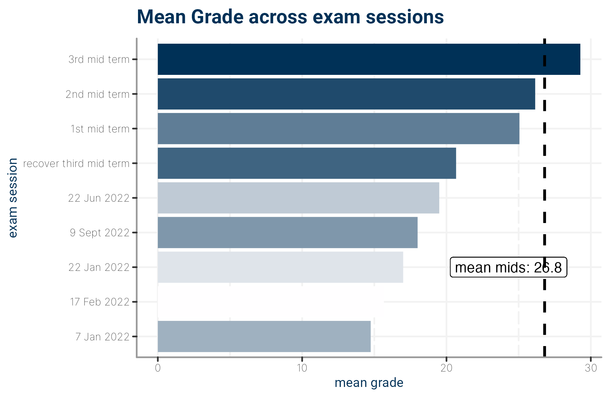

1 🫶 About
 This is the official course website for Statistics & Big data2 2025 - 2026 for laboratories. This website augments lecture topics and provides exercises for home and class assignments. Additional theory wrt slides and textbook will not be part of the exam, indeed they are for your growth and hopefully in the future as quicksilver resource to recover R proficiency from lethargy.
This is the official course website for Statistics & Big data2 2025 - 2026 for laboratories. This website augments lecture topics and provides exercises for home and class assignments. Additional theory wrt slides and textbook will not be part of the exam, indeed they are for your growth and hopefully in the future as quicksilver resource to recover R proficiency from lethargy.
1.1 🔧 Logistics
- Lectures:
- Mondays: 14:00 - 17:00 CET
- Tuesdays: 10:00 - 13:00 CET
- Location: Campus Gemelli, Room 20 (and optionally remote)
- Office hours:
- Dr. Niccolò Salvini: Available via email and for questions before/after lectures
- Prof. Sophie Dabo-Niang: Available during intensive session (week of November 17th)
- here’s the shared drive (slides notebooks extra in class)
1.2 👥 Team
Instructor
Instructor
1.3 🗒 labs’ contents
1.3.1 Part 1: The Foundations (Dr. Niccolò Salvini)
- Introduction to the R ecosystem
- Install R and RStudio
- R tricks for research and professional life
- Data wrangling with R
- Hypothesis Testing Fundamentals
- Alternative hypothesis testing
- How to calculate p-values
- Hypothesis testing with null hypothesis
- Hypothesis testing on averages
- Analysis of Variance (ANOVA)
- Testing more than 2 means
- Chi-Square Tests
- Testing more than 2 proportions
- Linear Regression Analysis
- Simple linear regression
- Multiple linear regression
- Nonlinear regression
- Regression with dummy variables
- Logistic Regression
- Introduction to logistic regression
1.3.2 Part 2: Advanced Modeling (Prof. Sophie Dabo-Niang)
- Factor Analysis
- Cluster Analysis
- Discrimination & Classification
- Binomial & Multinomial Logistic Regression
- Kernel Methods
- General Additive Models
- Other Supervised Models
1.4 Exam 📝
The exam is going to be open and closed questions on theory and practice (coding part). You will be asked to provide results and sometimes code leading to these results. You can also be asked to directly provide code to solve for that exercise. The exam is going to take place in labs classroom, this means you are not going to have your laptop during the exam. We generally don’t provide assignment neither group works. Indeed we provide intermediate exams for those who want to try them.
we are going to have 2 intermediate sessions exams on half of the whole content of the course. This means: - first intermediate: will happen typically on November and will be on Part 1 content (Dr. Salvini’s part) - second intermediate: will happen in January/February on Part 2 content (Prof. Dabo-Niang’s part)
you can take first intermediate and take the second on each exam date within the winter session, meaning you take part 1 in Nov and part 2 in either Jan and Feb. You can not reject intermediates, that means if you take first part, try the second and did not perform well, you need to take the full. Grades may undergo to a review process before being official if they are particularly low. This has happened quite often, but it does not happen every time.
1.5 📚 Suggested reading list
I am going to split resources by the expected level of their audience:
1.5.1 Minimal or 0 knowledge of R
- Everitt, B., Hothorn, T. (2011) An Introduction to Applied Multivariate Analysis with R, Springer-Verlag
- James, G, Witten, D, Hastie, T and Tibshirani, R, (2015) An Introduction to Statistical Learning, with Applications in R
- T. Timbers, T. Campbell, M. Lee Data Science: A First Introduction, Jul 2022 online version
- Wickham, H., Grolemund G. (2018) R for Data Science, O’Reilly. Freely available on-line at https://r4ds.had.co.nz/index.html
- R for non-programmers, Daniel Dauber 2022, free book
1.6 📜 Honor Code
Permissive but strict. If unsure, please ask the course staff!
- NOT OKAY Pleeease, I am using ChatGPT and its derivatives on a daily basis. I understand, it’s awesome and we are not enforcing any rule against it a home. Don’t do that during the exam.
- OK to search, ask in public about the systems we’re studying. Cite all the resources you reference. E.g. if you read it in a paper, cite it. If you ask on Quora, include the link.
- NOT OKAY to ask someone to do assignments/projects for you, we are monitoring freelancing websites, we have a plethora of bots doing this job daily.
- OK to discuss questions with classmates. Disclose your discussion partners.
- NOT OKAY to blindly copy solutions from classmates.
- OK to use existing solutions as part of your projects/assignments. Clarify your contributions.
- NOT OKAY to pretend that someone’s solution is yours.
- OK to publish your final project after the course is over (we encourage that and if you need it I would love to help you!)
- NOT OKAY to post your assignment solutions online.
1.7 QR code time!
1.8 Colophon
This book was authored using bookdown inside RStudio with bs4 theme The website is hosted with Netlify, and automatically updated after Netlify CI. The complete source is available from GitHub.
This version of the book was built with:
library(devtools)
#> Loading required package: usethis
library(roxygen2)
library(testthat)
#>
#> Attaching package: 'testthat'
#> The following object is masked from 'package:devtools':
#>
#> test_file
#> The following object is masked from 'package:dplyr':
#>
#> matches
devtools::session_info()
#> ─ Session info ───────────────────────────────────────────────────────────────────────────────────
#> setting value
#> version R version 4.2.0 (2022-04-22)
#> os macOS 15.6.1
#> system aarch64, darwin20
#> ui X11
#> language (EN)
#> collate en_US.UTF-8
#> ctype en_US.UTF-8
#> tz Europe/Rome
#> date 2025-11-27
#> pandoc 3.7.0.2 @ /opt/homebrew/bin/ (via rmarkdown)
#>
#> ─ Packages ───────────────────────────────────────────────────────────────────────────────────────
#> package * version date (UTC) lib source
#> bookdown 0.29 2022-09-12 [1] CRAN (R 4.2.0)
#> brio 1.1.3 2021-11-30 [1] CRAN (R 4.2.0)
#> bslib 0.5.1 2023-08-11 [1] CRAN (R 4.2.0)
#> cachem 1.0.8 2023-05-01 [1] CRAN (R 4.2.0)
#> callr 3.7.3 2022-11-02 [1] CRAN (R 4.2.0)
#> cli 3.6.2 2023-12-11 [1] CRAN (R 4.2.3)
#> crayon 1.5.2 2022-09-29 [1] CRAN (R 4.2.0)
#> devtools * 2.4.5 2022-10-11 [1] CRAN (R 4.2.0)
#> dichromat 2.0-0.1 2022-05-02 [1] CRAN (R 4.2.0)
#> digest 0.6.33 2023-07-07 [1] CRAN (R 4.2.0)
#> downlit 0.4.2 2022-07-05 [1] CRAN (R 4.2.0)
#> dplyr * 1.1.4 2023-11-17 [1] CRAN (R 4.2.3)
#> ellipsis 0.3.2 2021-04-29 [1] CRAN (R 4.2.0)
#> evaluate 1.0.3 2025-01-10 [1] CRAN (R 4.2.0)
#> fansi 1.0.4 2023-01-22 [1] CRAN (R 4.2.0)
#> farver 2.1.1 2022-07-06 [1] CRAN (R 4.2.0)
#> fastmap 1.1.1 2023-02-24 [1] CRAN (R 4.2.0)
#> fs 1.6.3 2023-07-20 [1] CRAN (R 4.2.0)
#> generics 0.1.3 2022-07-05 [1] CRAN (R 4.2.0)
#> glue * 1.6.2 2022-02-24 [1] CRAN (R 4.2.0)
#> htmltools 0.5.6.1 2023-10-06 [1] CRAN (R 4.2.0)
#> htmlwidgets 1.6.2 2023-03-17 [1] CRAN (R 4.2.0)
#> httpuv 1.6.6 2022-09-08 [1] CRAN (R 4.2.0)
#> httr 1.4.6 2023-05-08 [1] CRAN (R 4.2.0)
#> jquerylib 0.1.4 2021-04-26 [1] CRAN (R 4.2.0)
#> jsonlite 1.8.7 2023-06-29 [1] CRAN (R 4.2.0)
#> kableExtra * 1.3.4.9000 2023-06-01 [1] Github (kupietz/kableExtra@3bf9b21)
#> knitr * 1.44 2023-09-11 [1] CRAN (R 4.2.0)
#> later 1.3.0 2021-08-18 [1] CRAN (R 4.2.0)
#> lifecycle 1.0.3 2022-10-07 [1] CRAN (R 4.2.0)
#> lubridate * 1.9.2 2023-02-10 [1] CRAN (R 4.2.0)
#> magrittr 2.0.3 2022-03-30 [1] CRAN (R 4.2.0)
#> memoise 2.0.1 2021-11-26 [1] CRAN (R 4.2.0)
#> mime 0.12 2021-09-28 [1] CRAN (R 4.2.0)
#> miniUI 0.1.1.1 2018-05-18 [1] CRAN (R 4.2.0)
#> pillar 1.9.0 2023-03-22 [1] CRAN (R 4.2.0)
#> pkgbuild 1.4.2 2023-06-26 [1] CRAN (R 4.2.0)
#> pkgconfig 2.0.3 2019-09-22 [1] CRAN (R 4.2.0)
#> pkgload 1.4.0 2024-06-28 [1] CRAN (R 4.2.0)
#> prettyunits 1.1.1 2020-01-24 [1] CRAN (R 4.2.0)
#> processx 3.8.4 2024-03-16 [1] CRAN (R 4.2.3)
#> profvis 0.3.8 2023-05-02 [1] CRAN (R 4.2.0)
#> promises 1.2.0.1 2021-02-11 [1] CRAN (R 4.2.0)
#> ps 1.7.5 2023-04-18 [1] CRAN (R 4.2.0)
#> purrr 1.0.2 2023-08-10 [1] CRAN (R 4.2.0)
#> R6 2.5.1 2021-08-19 [1] CRAN (R 4.2.0)
#> RColorBrewer 1.1-3 2022-04-03 [1] CRAN (R 4.2.0)
#> Rcpp 1.0.12 2024-01-09 [1] CRAN (R 4.2.3)
#> remotes 2.4.2 2021-11-30 [1] CRAN (R 4.2.0)
#> rlang 1.1.3 2024-01-10 [1] CRAN (R 4.2.3)
#> rmarkdown 2.25 2023-09-18 [1] CRAN (R 4.2.0)
#> roxygen2 * 7.3.1 2024-01-22 [1] CRAN (R 4.2.3)
#> rstudioapi 0.14 2022-08-22 [1] CRAN (R 4.2.0)
#> rvest 1.0.3 2022-08-19 [1] CRAN (R 4.2.0)
#> sass 0.4.6 2023-05-03 [1] CRAN (R 4.2.0)
#> scales 1.4.0 2025-04-24 [1] CRAN (R 4.2.0)
#> sessioninfo 1.2.2 2021-12-06 [1] CRAN (R 4.2.0)
#> shiny 1.7.2 2022-07-19 [1] CRAN (R 4.2.0)
#> stringi 1.7.12 2023-01-11 [1] CRAN (R 4.2.0)
#> stringr 1.5.0 2022-12-02 [1] CRAN (R 4.2.0)
#> svglite 2.1.1 2023-01-10 [1] CRAN (R 4.2.0)
#> systemfonts 1.0.4 2022-02-11 [1] CRAN (R 4.2.0)
#> testthat * 3.2.1.1 2024-04-14 [1] CRAN (R 4.2.3)
#> tibble 3.2.1 2023-03-20 [1] CRAN (R 4.2.0)
#> tidyselect 1.2.0 2022-10-10 [1] CRAN (R 4.2.0)
#> timechange 0.2.0 2023-01-11 [1] CRAN (R 4.2.0)
#> urlchecker 1.0.1 2021-11-30 [1] CRAN (R 4.2.0)
#> usethis * 2.1.6 2022-05-25 [1] CRAN (R 4.2.0)
#> utf8 1.2.3 2023-01-31 [1] CRAN (R 4.2.0)
#> vctrs 0.6.5 2023-12-01 [1] CRAN (R 4.2.3)
#> viridisLite 0.4.2 2023-05-02 [1] CRAN (R 4.2.0)
#> webexercises * 1.0.0 2021-09-15 [1] CRAN (R 4.2.0)
#> webshot 0.5.4 2022-09-26 [1] CRAN (R 4.2.0)
#> withr 3.0.2 2024-10-28 [1] CRAN (R 4.2.0)
#> xfun 0.40 2023-08-09 [1] CRAN (R 4.2.0)
#> xml2 1.3.4 2023-04-27 [1] CRAN (R 4.2.0)
#> xtable 1.8-4 2019-04-21 [1] CRAN (R 4.2.0)
#> yaml 2.3.7 2023-01-23 [1] CRAN (R 4.2.0)
#>
#> [1] /Users/niccolo/Library/R/arm64/4.2/library
#> [2] /Library/Frameworks/R.framework/Versions/4.2-arm64/Resources/library
#>
#> ──────────────────────────────────────────────────────────────────────────────────────────────────(PART*) Get Started
2 ✨Prerequisites
2.1 Setting up R and RStudio
To get started with R, you need to acquire your own copy. This appendix will show you how to download R as well as RStudio, a software application that makes R easier to use. You’ll go from downloading R to opening your first R session. Use the menu on the right hand side of the page to select your OS and follow the correct installation.
Both R and RStudio are free and easy to download. If you feel more comfortable interacting with videos instead of reading please visit this interactive tutorials that will guide you through the full R set up!
2.2 How to Download and Install R
R is maintained by an international team of developers who make the language available through the web page of The Comprehensive R Archive Network i.e. CRAN. The top of the web page provides three links for downloading R. Follow the link that describes your operating system: Windows, Mac, or Linux.
2.2.1 R in Windows
To install R on Windows, click the “Download R for Windows†link. Then click the “base†link. Next, click the first link at the top of the new page. This link should say something like “Download R 3.0.3 for Windows,†except the 3.0.3 will be replaced by the most current version of R. The link downloads an installer program, which installs the most up-to-date version of R for Windows. Run this program and step through the installation wizard that appears. The wizard will install R into your program files folders and place a shortcut in your Start menu. Note that you’ll need to have all of the appropriate administration privileges to install new software on your machine. (more detailed steps)
2.2.2 R in Mac
This is also my setup, feel free to reach me at my mail address if something is messed up.
- Go to www.r-project.org
(#fig:rproj-page)The R mirrors website
Click on
CRANwhere it saysDownload.Choose a server in your country (all of them work, but downloads will perform quicker if you choose your country or one that is close to where you are).

(#fig:cran-mirrors)CRAN mirrors
- Select the operating system for your computer, for example
Download R for macOS.

(#fig:os-choice)OS choices available
- Select the version you want to install (I recommend the latest version)

(#fig:r-versions)R versions available
- Open the downloaded file and follow the installation instructions. I recommend leaving the suggested settings as they are.
Binaries Versus Source
R can be installed from precompiled binaries or built from source on any operating system. For Windows and Mac machines, installing R from binaries is extremely easy. The binary comes preloaded in its own installer. Although you can build R from source on these platforms, the process is much more complicated and won’t provide much benefit for most users. For Linux systems, the opposite is true. Precompiled binaries can be found for some systems, but it is much more common to build R from source files when installing on Linux. The download pages on CRAN’s website provide information about building R from source for the Windows, Mac, and Linux platforms.
2.2.3 R in Linux
R comes preinstalled on many Linux systems, but you’ll want the newest version of R if yours is out of date. The CRAN website provides files to build R from source on Debian, Redhat, SUSE, and Ubuntu systems under the link “Download R for Linux.†Click the link and then follow the directory trail to the version of Linux you wish to install on. The exact installation procedure will vary depending on the Linux system you use. CRAN guides the process by grouping each set of source files with documentation or README files that explain how to install on your system.
32-bit Versus 64-bit
R comes in both 32-bit and 64-bit versions. Which should you use? In most cases, it won’t matter. Both versions use 32-bit integers, which means they compute numbers to the same numerical precision. The difference occurs in the way each version manages memory. 64-bit R uses 64-bit memory pointers, and 32-bit R uses 32-bit memory pointers. This means 64-bit R has a larger memory space to use (and search through). As a rule of thumb, 32-bit builds of R are faster than 64-bit builds, though not always. On the other hand, 64-bit builds can handle larger files and data sets with fewer memory management problems. In either version, the maximum allowable vector size tops out at around 2 billion elements. If your operating system doesn’t support 64-bit programs, or your RAM is less than 4 GB, 32-bit R is for you. The Windows and Mac installers will automatically install both versions if your system supports 64-bit R.
2.3 Using R
R isn’t a program that you can open and start using, like Microsoft Word or Internet Explorer. Instead, R is a computer language, like C, C++, or UNIX. You use R by writing commands in the R language and asking your computer to interpret them. In the old days, people ran R code in a UNIX terminal window—as if they were hackers in a movie from the 1980s. Now almost everyone uses R with an application called RStudio, and I recommend that you do, too.
R and UNIX
You can still run R in a UNIX or BASH window (prompt or Powershell) by typing the command:
R
which opens an R interpreter. You can then do your work and close the interpreter by running q() when you are finished.
2.4 Using RStudio
R by itself is just the ‘beating heart’ of R programming, but it has no particular user interface. You may have heard me saying stuff like: “R is the engine of the car, indeed RStudio is the car body, that’s true, you just don’t need an engine if you don’t have a car body. That is to say: if you want buttons to click and actually ‘see’ what you are doing, there is no better way than RStudio. RStudio is an integrated development environment (IDE) and will be our primary tool to interact with R. It is the only software you need to do all the fun parts and, of course, to follow along with the examples of this book. You may ask yourself what is Posit, fair question. Back in the days Posit, the company behind RStudio, was actually named RStudio (as their product). Then in 2023 they rebranded themselves as Posit to also include other languages like Python,
Howeveeeer to install RStudio perform the following steps:
- Go to https://posit.co/
(#fig:rstudio-main)The Posit.co main page
Go to
DOWNLOAD RSTUDIOin the upper right corner (download R if you still haven’t).Select
DOWNLOAD RSTUDIO, just on the left ofDOWNLOAD RSTUDIO SERVER.

(#fig:rstudio-select-version)Choose RStudio version
- On this page, scroll down and select the Download (in the download column) corresponding to your OS (mind that different versions of the same OS, say macOS 11.2 or macOS 8.3 need different RStudio download installations).

(#fig:rstudio-select-os-version)Choose RStudio version
- Open the downloaded file and follow the installation instructions. Again, keep it to the default settings as much as possible.
Congratulations, you are all set up to learn R. From now on you only need to start RStudio and not R. Of course, if you are the curious type, nothing shall stop you to try R without RStudio.
2.5 When you first start RStudio
Before you start programming away, you might want to make some tweaks to your settings right away to have a better experience (in my humble opinion). To open the Rstudio settings you have to click on
RStudio > Preferencesor press⌘ + ,if you are on a Mac.RStudio > Tools > Global Optionsor pressCtrl + ,if you work on a Windows computer.
I recommend to at least make the following changes to set yourself up for success right from the beginning:
Already on the first tab, i.e.Â
General > Basic, we should make one of the most significant changes. Deactivate every option that starts withRestore. This will ensure that every time you start RStudio, you begin with a clean slate. At first sight, it might sound counter-intuitive not to restart everything where you left off, but it is essential to make all your projects easily reproducible. Furthermore, if you work together with others, not restoring your personal settings also ensures that your programming works across different computers. Therefore, I recommend having the following unticked:Restore most recently opened project at startup,Restore previsouly open source documents at startup,Restore .Rdata into workspace at startup

(#fig:rstudio-preferences)get your RStudio preferences
In the same tab under
Workspace, selectNeverfor the settingSave workspace to .RData on exit. One might think it is wise to keep intermediary results stored from one R session to another. However, I often found myself fixing issues due to this lazy method, and my code became less reliable and, therefore, reproducible. With experience, you will find that this avoids many headaches.In the
Code > Editingtab, make sure to have at least the first five options ticked, especially theAuto-indent code after paste. This setting will save time when trying to format your coding appropriately, making it easier to read. Indentation is the primary way of making your code look more readable and less like a series of characters that appear almost random.

(#fig:rstudio-prefediting)Pimp your RStudio IDE
- In the
Displaytab, you might want to have the first three options selected. In particular,Highlight selected lineis helpful because, in more complicated code, it is helpful to see where your cursor is.

(#fig:rstudio-prefdisp)Edit your RStudio display preferences
Of course, if you wish to customise your workspace further, you can do so. The visually most impactful way to alter the default appearance of RStudio is to select Appearance and pick a completely different colour theme. Feel free to browse through various options and see what you prefer. There is no right or wrong here. Just make it your own.

(#fig:rstudio-prefappear)This will get you instantly nerd
2.6 Updating R and RStudio: Living at the pulse of innovation
While not strictly something that helps you become a better programmer, this advice might come in handy to avoid turning into a frustrated programmer. When you update your software, you need to update R and RStudio separately from each other. While both R and RStudio work closely with each other, they still constitute separate pieces of software. Thus, it is essential to keep in mind that updating RStudio will not automatically update R. This can become problematic if specific tools you installed via RStudio (like a fancy learning algorithm) might not be compatible with earlier versions of R. Also, additional R packages (see Chapter @ref(r-packages)) developed by other developers are separate pieces which require updating too, independently from R and RStudio.
I know what you are thinking: This already sounds complicated and cumbersome. However, rest assured, we take a look at how you can easily update all your packages with RStudio. Thus, all you need to remember is: R needs to be updated separately from everything else.
3 📦 R Packages
Many of R’s most useful functions do not come preloaded when you start R, but reside in packages that can be installed on top of R. R packages are similar to libraries in C, C++, and Javascript, packages in Python, and gems in Ruby. An R package bundles together useful functions, help files, and data sets. You can use these functions within your own R code once you load the package they live in. Usually the contents of an R package are all related to a single type of task, which the package helps solve. R packages will let you take advantage of R’s most useful features: its large community of package writers (many of whom are active data scientists) and its prewritten routines for handling many common (and exotic) data-science tasks.
Base R You may hear R users (or me) refer to “base R.†What is base R? It is just the collection of R functions that gets loaded every time you start R. These functions provide the basics of the language, and you don’t have to load a package before you can use them.
3.1 Installing Packages
To use an R package, you must first install it on your computer and then load it in your current R session. The easiest way to install an R package is with the install.packages R function. Open R and type the following into the command line:
This will search for the specified package in the collection of packages hosted on the CRAN site. When R finds the package, it will download it into a libraries folder on your computer. R can access the package here in future R sessions without reinstalling it. Anyone can write an R package and disseminate it as they like; however, almost all R packages are published through the CRAN website. CRAN tests each R package before publishing it. This doesn’t eliminate every bug inside a package, but it does mean that you can trust a package on CRAN to run in the current version of R on your OS.
You can install multiple packages at once by linking their names with R’s concatenate function, c. For example, to install the ggplot2, reshape2, and dplyr packages, run:
If this is your first time installing a package, R will prompt you to choose an online mirror of to install from. Mirrors are listed by location. Your downloads should be quickest if you select a mirror that is close to you. If you want to download a new package, try the Austria mirror first. This is the main CRAN repository, and new packages can sometimes take a couple of days to make it around to all of the other mirrors.
3.2 Loading Packages
Installing a package doesn’t immediately place its functions at your fingertips. It just places them on your computer. To use an R package, you next have to load it in your R session with the command:
Notice that the quotation marks have disappeared. You can use them if you like, but quotation marks are optional for the library command. (This is not true for the install.packages command).
library will make all of the package’s functions, data sets, and help files available to you until you close your current R session. The next time you begin an R session, you’ll have to reload the package with library if you want to use it, but you won’t have to reinstall it. You only have to install each package once. After that, a copy of the package will live in your R library. To see which packages you currently have in your R library, run:
library() also shows the path to your actual R library, which is the folder that contains your R packages. You may notice many packages that you don’t remember installing. This is because R automatically downloads a set of useful packages when you first install R.
Install packages from (almost) anywhere
The devtools R package makes it easy to install packages from locations other than the CRAN website. devtools provides functions like install_github, install_gitorious, install_bitbucket, and install_url. These work similar to install.packages, but they search new locations for R packages. install_github is especially useful because many R developers provide development versions of their packages on GitHub. The development version of a package will contain a sneak peek of new functions and patches but may not be as stable or as bug free as the CRAN version.
Why does R make you bother with installing and loading packages? You can imagine an R where every package came preloaded, but this would be a very large and slow program. As of May 6, 2014, the CRAN website hosts 5,511 packages. It is simpler to only install and load the packages that you want to use when you want to use them. This keeps your copy of R fast because it has fewer functions and help pages to search through at any one time. The arrangement has other benefits as well. For example, it is possible to update your copy of an R package without updating your entire copy of R.
What’s the best way to learn about R packages?
It is difficult to use an R package if you don’t know that it exists. You could go to the CRAN website and click the Packages link to see a list of available packages, but you’ll have to wade through thousands of them. Moreover, many R packages do the same things.
How do you know which package does them best? The R-packages mailing list is a place to start. It sends out announcements of new packages and maintains an archive of old announcements. Blogs that aggregate posts about R can also provide valuable leads. I recommend R-bloggers. RStudio maintains a list of some of the most useful R packages in the Getting Started section of http://support.rstudio.com. Finally, CRAN groups together some of the most useful—and most respected—packages by subject area. This is an excellent place to learn about the packages designed for your area of work.
3.3 Updating R and Its Packages
The R Core Development Team continuously hones the R language by catching bugs, improving performance, and updating R to work with new technologies. As a result, new versions of R are released several times a year. The easiest way to stay current with R is to periodically check the CRAN website. The website is updated for each new release and makes the release available for download. You’ll have to install the new release. The process is the same as when you first installed R.
Don’t worry if you’re not interested in staying up-to-date on R Core’s doings. R changes only slightly between releases, and you’re not likely to notice the differences. However, updating to the current version of R is a good place to start if you ever encounter a bug that you can’t explain.
RStudio also constantly improves its product. You can acquire the newest updates just by downloading them from RStudio.
3.3.1 R Packages
Package authors occasionally release new versions of their packages to add functions, fix bugs, or improve performance. The update.packages command checks whether you have the most current version of a package and installs the most current version if you do not. The syntax for update.packages follows that of install.packages. If you already have ggplot2, reshape2, and dplyr on your computer, it’d be a good idea to check for updates before you use them:
You should start a new R session after updating packages. If you have a package loaded when you update it, you’ll have to close your R session and open a new one to begin using the updated version of the package.
4 🔥 Nice warm-up
Now we are going to cover some very basic operations and computer science concepts with R. Hopefully this will get you with a really cool starter pack of function that you might reuse throughout you R journey.
4.1 Starting your fresh new R project
Every fresh attempt is likely to pique your interest and pique your emotions. And it should. You will uncover the answers to your research questions, and you should become more knowledgeable as a consequence. However, you are likely to dislike certain aspects of data analysis. Two examples spring to mind:
A Keeping track of all the files generated by my project
B Data manipulation
While we will go into deeper detail on data manipulation in a later chapter, I’d like to share some ideas from my work that helped me stay organized and, as a result, less frustrated. The following is applicable to both small and large research projects, making it extremely useful regardless of the circumstance or size of the project.
4.2 Creating an R Project file
When working on a project, you likely create many different files for various purposes, especially R Scripts (File > New File > R Script). If you are not careful, this file is stored in your system’s default location, which might not be where you want them to be. RStudio allows you to manage your entire project intuitively and conveniently through R Project files. Using R Project files comes with a couple of perks, for example:
All of the files you create are saved in the same location. Your data, coding, exported charts, reports, and so on are all in one location, so you don’t have to maintain the files manually. This is because RStudio sets the root directory to the folder where your project is stored.
If you wish to share your project, you may do so by sharing the entire folder, and others can rapidly replicate your study or assist in issue resolution. This is due to the fact that all file paths are relative rather than absolute.
You may utilize GitHub more readily for backups and so-called ‘version control’ tools, which allows you to trace changes to your code over time. (btw this is really crucial in work envirnoments, if you would like to know more about that I dedicated a tutorial website of git+GitHub+RStudio workflow and a set of slides to explain these concepts). This is not a requirement for the course and you can skip that. However let me clarify that: it is a nice-to-have skill whenever you are collaborating with someone. It could happen on the job, or while writing your thesis, you name it.
For the time being, the most significant reason to make R Project files is the ease of file organization and the ability to readily share them with co-investigators, your supervisor, or your students.
To create an R Project, you need to perform the following steps:
- Select
File > New Project…from the menu bar.

(#fig:rproj-menu)Get the R project
- Select
New Directoryfrom the popup window.

(#fig:rproj-new-dir)New Project Wizard pop up menu
- Next, select
New Project.

(#fig:rproj-open-new-dir)The full set of project you can initialize through the RStudio IDE
- Pick a meaningful name for your project folder, i.e. the
Directory Name. Ensure this project folder is created in the right place. You can change thesubdirectoryby clicking onBrowse…. Ideally the subdirectory is a place where you usually store your research projects.

(#fig:rproj-specs)The RProject specifications
You have the option to
Create a git repository. This is only relevant if you already have a GitHub account and wish to use version control. For now, you can happily ignore it if you do not use GitHub.Lastly, tick
Open in new session. This will open your R Project in a new RStudio window.
(#fig:rproj-dirname)Choose a directory name for your new project
- Once you are happy with your choices, you can click
Create Project. This will open a new R Session, and you can start working on your project.

(#fig:rproj-open-new-session)A new RStudio Session will pop up just like magic!
If you look carefully, you can see that your RStudio is now ‘branded’ with your project name. At the top of the window, you see the project name, the files pane shows the root directory where all your files will be, and even the console shows on top the file path of your project. You could set all this up manually, but I would not recommend it, not the least because it is easy and swift to work with R Projects
4.3 Working Directory with here
When you bootstrap your RProject in that way, RStudio is going to take care of many headaches that any fresher and sophmore developer have in the beginning. As a matter of fact each time you double click on the RStudio project file (the one that finishes with .RProj) RStudio will link itself to the directory on your computer you specified during the creation of the project, in the previous case “tidy_tuesday_2021_08_03”. This is called the Working Directory. What it is interesting it that this place is where R will look for files when you attempt to load them, and it is where R will save files when you save them. The location of your working directory will vary on different computers. There is a base (rather vintage) way to look for the working directory. To understrand which directory R is using as your working directory, run:
However since we live in 2022 we are going to use a very convenient package i.e. here that does exactly the same thing but prettier and more intuitively.
here() is going to look for the .RProj file and will the Working Directory exactly where it is placed.
4.4 Creating an R Script
Code may easily grow lengthy and complicated. As a result, writing it on the console is inconvenient. As an alternative, we may write code into a R Script. An R Script is a document that is recognized by RStudio as R programming code. Non-R Script files, such as .txt,.rtf, or .md, can also be opened in RStudio, but any code typed in them will not be immediately recognized.
When you open or create a new R script, it will appear in the Source pane. This window is sometimes referred to as the ‘script editor’. An R script begins with an empty file. Good coding etiquette requires us to put a comment # on the first line to describe what this file does. Here’s a ‘TidyTuesday’ R Project sample.

(#fig:rscript)Open an R Script and write some on it
All of the examples in this tutorial are made to be copied and pasted into your own R script. However, you will need to install the R packages for certain code. Let’s give it a shot with the following code. The plot produced by this code displays which car company provides the most fuel-efficient vehicles. This code should be copied and pasted into your R script. Below there’s a simple script that generates a plot, copy and paste into your file, then execute it.
library(tidyverse)
mpg %>%
ggplot(aes(x = reorder(manufacturer, desc(hwy), FUN = median),
y = hwy,
fill = manufacturer)) +
geom_boxplot() +
coord_flip() +
theme_minimal() +
xlab("Manufacturer") +
ylab("Highway miles per gallon")
You’re probably wondering what happened to your plot. Copying the code will not execute it in your R script. However, this is required in order to develop the plot. If you pressed Return ↵, you would just add a new line. Instead, choose the code you wish to run and hit Ctrl+Return ↵ (PC) or Cmd+Return ↵ (Mac). You may also use the Run command at the top of your source window, but the keyboard shortcut is far more convenient. Furthermore, you will rapidly remember this shortcut because we will need to utilize it frequently. If everything is in order, you should see the following:
As you can see, Honda automobiles appear to travel the furthest with the same quantity of fuel (a gallon) as other vehicles. As a result, if you’re seeking for cheap automobiles, you now know where to look at.
It’s worth noting that the R script editor includes some handy features for developing code. You’ve undoubtedly noticed that part of the code we’ve pasted is blue and others is green. Because they have a distinct significance, these colors aid in making your code more understandable. In the default settings, green represents any value in ““, which often represents characters. Syntax highlighting refers to the automatic coloring of our programming code.
4.5 Using R Markdown
There is too lot to say about R Markdown, so I’ll just mention that it exists and highlight one feature that could persuade you to use it instead of plain R scripts: They appear to be Word documents (almost).
R Markdown files, as the name implies, are a mix of R scripts and ‘Markdown.’ ‘Markdown’ is a method of composing and formatting text documents without the use of software such as Microsoft Word. You instead write everything in plain text. Such plain text may be translated into a variety of document forms, including HTML webpages, PDF files, and Word documents. I recommend checking out the R Markdown Cheatsheet to learn how it works. Click File > New File > R Markdown to create a R Markdown file.
An R Markdown file is the inverse of a R script. By default, a R script treats everything as code, and we can only use language to describe what the code does by commenting #. This is what you’ve seen in all of the previous code examples. An R Markdown file, on the other hand, treats everything as text and requires us to declare what is code. We may accomplish this by injecting ‘code chunks.’ As a result, using comments # in R Markdown files is less necessary because you may write about it. Another advantage of R Markdown files is that the results of your analysis are shown immediately underneath the code chunk rather than in the terminal. They are also sometimes called notebooks since they can display both code and text together, the Python equivalent for those that have been someway exposed to Python scripting in Jupyter
5 🗒️ Syllabus
The lecture slides, notes, tutorials, and assignments will be posted on this drive , feel free to jump on it. please do not anticipate questions that we will address in class, instead drop me a mail if you are not sure about something.
If for any reasons you have trouble accessing the G Drive, still please contact your teaching assistant. One common issue students complain is that you may need to be authorization to access, because I may have forgotten to switch on the open to share option. If you see me, knock me on the shoulder!
This schedule is subject to change according to the pace of the class and we may schedule a further lab if you feel you are not really ready for the intermediate exam.
This is the updated edition of this course with Dr. Niccolò Salvini (Part 1) and Prof. Sophie Dabo-Niang (Part 2).
5.1 Course Materials
All course materials are available in the slides/ folder:
5.1.1 Part 1: The Foundations (Dr. Niccolò Salvini)
Slides by Dr. Niccolò Salvini: - Hypothesis Testing with Null Hypothesis - Hypothesis Testing with Alternative Hypothesis - How to Calculate P-values - Hypothesis Testing on Averages - Exercises on Hypothesis Testing - Multiple Linear Regression - Nonlinear Regression - Introduction to Linear Regression - Introduction to Logistic Regression
Slides by Prof. Vincenzo Nardelli: - Linear Regression
Laboratori Modulo 2 (Dr. Niccolò Salvini): - PCA & Correspondence Analysis - Hierarchical Clustering - K-Means Clustering
5.1.2 Part 2: Advanced Modeling (Prof. Sophie Dabo-Niang)
- Materials will be provided during the intensive session (week of November 17th)
5.2 Course Structure
Part 1: The Foundations (Dr. Niccolò Salvini) - 5 hours of integrated labs during regular lectures - Mondays: 14:00 - 17:00 CET - Tuesdays: 10:00 - 13:00 CET
Part 2: Advanced Modeling (Prof. Sophie Dabo-Niang) - 5 hours intensive session during the week of November 17th
to be ready:
| Date | Description | Materials | Events |
|---|---|---|---|
| Sept 22-23 | Introduction to RStudio + Hypothesis Testing Fundamentals | Null Hypothesis Testing | Laboratory + Lecture |
| Sept 22-23 | Alternative Hypothesis Testing + P-values Calculation | Alternative Hypothesis | Laboratory + Lecture |
| Sept 22-23 | How to Calculate P-values | P-values Calculation | Laboratory + Lecture |
| [TBD] | Hypothesis Testing on Averages | Testing on Averages and Exercises | Laboratory |
| [TBD] | Chi-Square Tests (more than 2 proportions) | Null Hypothesis Testing | Laboratory |
| Sept 29-30, Oct 6-7 | Simple Linear Regression | Introduction to Linear Regression, Linear Regression | Laboratory + Theory |
| Sept 29-30, Oct 6-7 | Multiple Linear Regression | Multiple Linear Regression | Laboratory + Theory |
| Sept 29-30, Oct 6-7 | Nonlinear Regression + Dummy Variables | Nonlinear Regression | Laboratory + Theory |
| Oct 7 | Logistic Regression | Introduction to Logistic Regression | Laboratory + Theory |
| [TBD] | First Intermediate Exam (Part 1) | Exam | |
| Week of Nov 17th | Intensive Session - Advanced Modeling | Materials provided during session | Laboratory |
| [TBD] | Second Intermediate Exam (Part 2) | Exam |
(PART*) Part 1: The Foundations
6 🧪 Hypothesis Testing Fundamentals
This chapter introduces the fundamental concepts of hypothesis testing, covering alternative hypothesis testing, p-value calculation, and hypothesis testing with null hypothesis.
6.1 Learning Objectives
By the end of this chapter, you will be able to:
- Understand the concept of hypothesis testing
- Formulate null and alternative hypotheses
- Calculate and interpret p-values
- Perform hypothesis tests on averages
- Make statistical decisions based on test results
6.2 Introduction to Hypothesis Testing
Hypothesis testing is a statistical method used to make decisions about population parameters based on sample data. It involves:
- Formulating hypotheses: Stating a null hypothesis (H₀) and an alternative hypothesis (H₁)
- Collecting data: Gathering sample data relevant to the hypothesis
- Calculating test statistics: Computing appropriate test statistics
- Making decisions: Comparing test statistics to critical values or p-values
6.3 Null and Alternative Hypotheses
6.3.1 Null Hypothesis (H₀)
The null hypothesis represents the status quo or the claim we want to test. It typically states that there is no effect, no difference, or no relationship.
Examples: - H₀: μ = 50 (population mean equals 50) - H₀: μ₠= μ₂ (two population means are equal) - H₀: ρ = 0 (no correlation between variables)
6.3.2 Alternative Hypothesis (H₁)
The alternative hypothesis represents what we want to prove or the claim we’re testing for. It can be:
- One-tailed: H₁: μ > 50 or H₁: μ < 50
- Two-tailed: H₁: μ ≠50
6.4 P-values and Statistical Significance
6.4.1 What is a P-value?
The p-value is the probability of observing a test statistic as extreme as, or more extreme than, the one calculated from the sample data, assuming the null hypothesis is true.
6.4.2 Interpreting P-values
- p < 0.05: Strong evidence against H₀ (reject H₀)
- p < 0.01: Very strong evidence against H₀ (reject H₀)
- p > 0.05: Weak evidence against H₀ (fail to reject H₀)
6.4.3 Common Misconceptions
- P-value is NOT the probability that H₀ is true
- P-value is NOT the probability that H₁ is true
- P-value is NOT the probability of making a Type I error
6.5 Hypothesis Testing on Averages
6.5.1 One-Sample t-test
Used to test whether a population mean differs from a specified value.
Assumptions: - Data is normally distributed (or large sample size) - Observations are independent - Random sampling
Test Statistic:
t = (x̄ - μ₀) / (s/√n)Where: - x̄ = sample mean - μ₀ = hypothesized population mean - s = sample standard deviation - n = sample size
6.5.2 Two-Sample t-test
Used to compare means between two groups.
Types: - Independent samples: Two separate groups - Paired samples: Same subjects measured twice
6.6 Practical Example
Let’s work through a practical example using R:
# Load required packages
library(tidyverse)
# Example: Testing if a new teaching method improves test scores
# H₀: μ_new = μ_old (no difference in means)
# H₁: μ_new > μ_old (new method is better)
# Sample data
old_method <- c(65, 70, 68, 72, 69, 71, 67, 73, 70, 68)
new_method <- c(72, 75, 78, 74, 76, 79, 73, 77, 75, 74)
# Perform two-sample t-test
t_test_result <- t.test(new_method, old_method, alternative = "greater")
print(t_test_result)
# Extract p-value
p_value <- t_test_result$p.value
cat("P-value:", p_value, "\n")
# Make decision
if (p_value < 0.05) {
cat("Reject H₀: New method significantly improves scores\n")
} else {
cat("Fail to reject H₀: No significant improvement\n")
}6.7 Type I and Type II Errors
6.7.1 Type I Error (α)
- Definition: Rejecting H₀ when it’s actually true
- Probability: α (significance level, typically 0.05)
- Consequence: False positive
6.7.2 Type II Error (β)
- Definition: Failing to reject H₀ when it’s actually false
- Probability: β
- Consequence: False negative
6.7.3 Power (1 - β)
- Definition: Probability of correctly rejecting H₀ when it’s false
- Goal: Maximize power while controlling Type I error
6.8 Best Practices
- State hypotheses clearly before collecting data
- Choose appropriate significance level (usually α = 0.05)
- Check assumptions before performing tests
- Report effect sizes along with p-values
- Avoid p-hacking (don’t change hypotheses after seeing results)
- Consider multiple comparisons when testing many hypotheses
6.9 Summary
Hypothesis testing is a powerful statistical tool for making data-driven decisions. Key points to remember:
- Always formulate clear null and alternative hypotheses
- Understand what p-values represent and don’t represent
- Consider both statistical and practical significance
- Be aware of Type I and Type II errors
- Follow best practices to ensure valid results
6.10 Further-on
- Slides:
02_hypt_testing_null_hypo.pdf,03_hypt_testing_alternative_hypo.pdf,04_how_to_calculate_pvalues.pdf,hypt_testing_on_avg.pdf,05_hypt_testing_exeR.pdf - Additional resources available in the course drive
7 📈 Linear Regression Analysis
This chapter covers linear regression analysis, including simple linear regression, multiple linear regression, and nonlinear regression techniques.
7.1 Learning Objectives
By the end of this chapter, you will be able to:
- Understand the principles of linear regression
- Perform simple and multiple linear regression
- Interpret regression coefficients and statistics
- Assess model fit and assumptions
- Handle nonlinear relationships
- Use R for regression analysis
7.2 Introduction to Linear Regression
Linear regression is a statistical method used to model the relationship between a dependent variable (Y) and one or more independent variables (X). It assumes a linear relationship between the variables.
7.2.1 Simple Linear Regression
Simple linear regression models the relationship between two variables:
Model: Y = β₀ + β₁X + ε
Where: - Y = dependent variable (response) - X = independent variable (predictor) - β₀ = intercept - β₠= slope - ε = error term
7.2.2 Multiple Linear Regression
Multiple linear regression extends simple regression to include multiple predictors:
Model: Y = β₀ + β₁X₁ + β₂X₂ + … + βₖXₖ + ε
7.3 Assumptions of Linear Regression
- Linearity: The relationship between X and Y is linear
- Independence: Observations are independent
- Homoscedasticity: Constant variance of errors
- Normality: Errors are normally distributed
- No multicollinearity: Independent variables are not highly correlated
7.4 Model Evaluation Metrics
7.4.1 R-squared (R²)
- Definition: Proportion of variance in Y explained by X
- Range: 0 to 1
- Interpretation: Higher values indicate better fit
7.4.2 Adjusted R-squared
- Definition: R² adjusted for the number of predictors
- Use: Compare models with different numbers of predictors
- Formula: 1 - (1-R²)(n-1)/(n-k-1)
7.4.3 Root Mean Square Error (RMSE)
- Definition: Standard deviation of residuals
- Interpretation: Lower values indicate better fit
- Units: Same as dependent variable
7.5 Practical Example: Simple Linear Regression
# Load required packages
library(tidyverse)
library(broom)
# Create sample data
set.seed(123)
n <- 100
x <- rnorm(n, mean = 50, sd = 10)
y <- 2 + 0.5 * x + rnorm(n, mean = 0, sd = 5)
# Create data frame
data <- data.frame(x = x, y = y)
# Fit simple linear regression
model <- lm(y ~ x, data = data)
# View model summary
summary(model)
# Extract key statistics
model_summary <- summary(model)
r_squared <- model_summary$r.squared
adj_r_squared <- model_summary$adj.r.squared
p_value <- model_summary$coefficients[2, 4]
cat("R-squared:", round(r_squared, 3), "\n")
cat("Adjusted R-squared:", round(adj_r_squared, 3), "\n")
cat("P-value:", round(p_value, 4), "\n")
# Create visualization
ggplot(data, aes(x = x, y = y)) +
geom_point(alpha = 0.6) +
geom_smooth(method = "lm", se = TRUE) +
labs(
title = "Simple Linear Regression",
x = "Independent Variable (X)",
y = "Dependent Variable (Y)"
) +
theme_minimal()7.6 Multiple Linear Regression
7.6.1 Example with Multiple Predictors
# Load required packages
library(tidyverse)
library(car) # for VIF calculation
# Create sample data with multiple predictors
set.seed(123)
n <- 100
x1 <- rnorm(n, mean = 50, sd = 10)
x2 <- rnorm(n, mean = 30, sd = 8)
x3 <- rnorm(n, mean = 20, sd = 5)
y <- 10 + 0.3 * x1 + 0.2 * x2 - 0.1 * x3 + rnorm(n, mean = 0, sd = 3)
# Create data frame
data <- data.frame(x1 = x1, x2 = x2, x3 = x3, y = y)
# Fit multiple linear regression
model <- lm(y ~ x1 + x2 + x3, data = data)
# View model summary
summary(model)
# Check for multicollinearity using VIF
vif_values <- vif(model)
print("Variance Inflation Factors:")
print(vif_values)
# Interpretation guidelines:
# VIF < 5: No multicollinearity concern
# VIF 5-10: Moderate multicollinearity
# VIF > 10: High multicollinearity7.7 Nonlinear Regression
When the relationship between variables is not linear, we can use nonlinear regression techniques.
7.7.1 Polynomial Regression
# Create nonlinear data
set.seed(123)
x <- seq(0, 10, length.out = 50)
y <- 2 + 0.5 * x + 0.1 * x^2 + rnorm(50, mean = 0, sd = 1)
# Create data frame
data <- data.frame(x = x, y = y)
# Fit polynomial regression (quadratic)
model_poly <- lm(y ~ x + I(x^2), data = data)
# View model summary
summary(model_poly)
# Create visualization
ggplot(data, aes(x = x, y = y)) +
geom_point(alpha = 0.6) +
geom_smooth(method = "lm", formula = y ~ x + I(x^2), se = TRUE) +
labs(
title = "Polynomial Regression (Quadratic)",
x = "Independent Variable (X)",
y = "Dependent Variable (Y)"
) +
theme_minimal()7.7.2 Logarithmic Transformation
# Create exponential data
set.seed(123)
x <- seq(1, 10, length.out = 50)
y <- exp(0.5 + 0.3 * x + rnorm(50, mean = 0, sd = 0.1))
# Create data frame
data <- data.frame(x = x, y = y)
# Fit log-transformed model
model_log <- lm(log(y) ~ x, data = data)
# View model summary
summary(model_log)
# Create visualization
ggplot(data, aes(x = x, y = y)) +
geom_point(alpha = 0.6) +
geom_smooth(method = "lm", se = TRUE) +
scale_y_log10() +
labs(
title = "Log-transformed Regression",
x = "Independent Variable (X)",
y = "Dependent Variable (Y) - Log Scale"
) +
theme_minimal()7.8 Model Diagnostics
7.8.1 Residual Analysis
# Load required packages
library(tidyverse)
library(broom)
# Fit model
model <- lm(y ~ x1 + x2 + x3, data = data)
# Get residuals and fitted values
model_data <- augment(model)
# Residual plots
# 1. Residuals vs Fitted Values
ggplot(model_data, aes(x = .fitted, y = .resid)) +
geom_point(alpha = 0.6) +
geom_hline(yintercept = 0, linetype = "dashed") +
labs(
title = "Residuals vs Fitted Values",
x = "Fitted Values",
y = "Residuals"
) +
theme_minimal()
# 2. Q-Q Plot for normality
ggplot(model_data, aes(sample = .resid)) +
stat_qq() +
stat_qq_line() +
labs(
title = "Q-Q Plot of Residuals",
x = "Theoretical Quantiles",
y = "Sample Quantiles"
) +
theme_minimal()
# 3. Scale-Location Plot
ggplot(model_data, aes(x = .fitted, y = sqrt(abs(.resid)))) +
geom_point(alpha = 0.6) +
geom_smooth(se = FALSE) +
labs(
title = "Scale-Location Plot",
x = "Fitted Values",
y = "√|Standardized Residuals|"
) +
theme_minimal()7.9 Best Practices
- Check assumptions before interpreting results
- Use appropriate transformations for nonlinear relationships
- Avoid overfitting by not including too many predictors
- Consider interaction terms when theoretically justified
- Report confidence intervals for coefficients
- Validate models using cross-validation when possible
7.10 Common Pitfalls
- Correlation vs Causation: Regression doesn’t imply causation
- Extrapolation: Be cautious when predicting outside the data range
- Outliers: Check for influential observations
- Missing data: Handle missing values appropriately
- Model selection: Use appropriate criteria for model comparison
7.11 Summary
Linear regression is a fundamental statistical technique for modeling relationships between variables. Key points:
- Understand the assumptions and check them
- Use appropriate metrics to evaluate model fit
- Consider nonlinear relationships when necessary
- Perform thorough diagnostics
- Interpret results carefully and avoid common pitfalls
7.12 Further-on
- Slides:
linear_regression.pdf,mlt_lin_reg.pdf,nonlinear_regression.pdf - Additional resources available in the course drive
8 🔬 Advanced Statistical Methods
This chapter covers advanced statistical methods including regression with dummy variables, logistic regression, factor analysis, and cluster analysis.
8.1 Learning Objectives
By the end of this chapter, you will be able to:
- Understand and implement regression with dummy variables
- Perform logistic regression for binary outcomes
- Conduct factor analysis to reduce dimensionality
- Apply cluster analysis techniques
- Interpret results from advanced statistical methods
- Use R for advanced statistical analysis
8.2 Regression with Dummy Variables
Dummy variables (also called indicator variables) are binary variables (0/1) used to represent categorical data in regression models.
8.2.1 Creating Dummy Variables
# Load required packages
library(tidyverse)
library(fastDummies)
# Create sample data with categorical variable
set.seed(123)
n <- 100
education <- sample(c("High School", "Bachelor", "Master", "PhD"), n, replace = TRUE)
experience <- rnorm(n, mean = 5, sd = 2)
salary <- 30000 + 5000 * (education == "Bachelor") +
8000 * (education == "Master") +
12000 * (education == "PhD") +
2000 * experience + rnorm(n, mean = 0, sd = 3000)
# Create data frame
data <- data.frame(education = education, experience = experience, salary = salary)
# Create dummy variables
data_dummy <- dummy_cols(data, select_columns = "education", remove_first_dummy = TRUE)
# View the data
head(data_dummy)
# Fit regression with dummy variables
model <- lm(salary ~ experience + education_Bachelor + education_Master + education_PhD,
data = data_dummy)
# View model summary
summary(model)
# Alternative: R automatically creates dummy variables
model_auto <- lm(salary ~ experience + education, data = data)
summary(model_auto)8.2.2 Interpreting Dummy Variable Coefficients
- Reference category: The category not included in the model (usually the first alphabetically)
- Coefficients: Represent the difference from the reference category
- Example: If “High School†is the reference, the coefficient for “Bachelor†represents the additional salary for Bachelor’s degree holders
8.3 Logistic Regression
Logistic regression is used when the dependent variable is binary (0/1, Yes/No, Success/Failure).
8.3.1 Binary Logistic Regression
# Load required packages
library(tidyverse)
library(broom)
# Create sample data for logistic regression
set.seed(123)
n <- 200
age <- rnorm(n, mean = 35, sd = 10)
income <- rnorm(n, mean = 50000, sd = 15000)
education_years <- rnorm(n, mean = 16, sd = 3)
# Create binary outcome (loan approval)
log_odds <- -2 + 0.05 * age + 0.0001 * income + 0.2 * education_years
prob <- exp(log_odds) / (1 + exp(log_odds))
loan_approved <- rbinom(n, 1, prob)
# Create data frame
data <- data.frame(age = age, income = income, education_years = education_years,
loan_approved = loan_approved)
# Fit logistic regression
model <- glm(loan_approved ~ age + income + education_years,
data = data, family = binomial())
# View model summary
summary(model)
# Extract coefficients and odds ratios
coef_summary <- tidy(model, exponentiate = TRUE)
print(coef_summary)
# Predict probabilities
data$predicted_prob <- predict(model, type = "response")
# Create visualization
ggplot(data, aes(x = income, y = loan_approved)) +
geom_point(alpha = 0.6) +
geom_smooth(method = "glm", method.args = list(family = "binomial"), se = TRUE) +
labs(
title = "Logistic Regression: Loan Approval vs Income",
x = "Income",
y = "Loan Approved (0/1)"
) +
theme_minimal()8.3.2 Interpreting Logistic Regression Results
- Coefficients: Represent the change in log-odds
- Odds Ratios: e^(coefficient) represents the multiplicative change in odds
- Probabilities: Use the logistic function to convert log-odds to probabilities
8.4 Factor Analysis
Factor analysis is used to identify underlying latent factors that explain the correlations among observed variables.
8.4.1 Exploratory Factor Analysis (EFA)
# Load required packages
library(tidyverse)
library(psych)
library(GPArotation)
# Create sample data with underlying factors
set.seed(123)
n <- 300
# Factor 1: Math ability
math1 <- rnorm(n, mean = 0, sd = 1)
math2 <- 0.8 * math1 + rnorm(n, mean = 0, sd = 0.6)
math3 <- 0.7 * math1 + rnorm(n, mean = 0, sd = 0.7)
# Factor 2: Verbal ability
verbal1 <- rnorm(n, mean = 0, sd = 1)
verbal2 <- 0.9 * verbal1 + rnorm(n, mean = 0, sd = 0.4)
verbal3 <- 0.8 * verbal1 + rnorm(n, mean = 0, sd = 0.6)
# Create data frame
data <- data.frame(
math_test1 = math1,
math_test2 = math2,
math_test3 = math3,
verbal_test1 = verbal1,
verbal_test2 = verbal2,
verbal_test3 = verbal3
)
# Perform factor analysis
# First, check if data is suitable for factor analysis
cortest.bartlett(data)
# Determine number of factors
fa.parallel(data, fa = "fa", n.iter = 100)
# Perform factor analysis
fa_result <- fa(data, nfactors = 2, rotate = "varimax")
print(fa_result)
# Plot factor loadings
fa.diagram(fa_result)
# Extract factor scores
factor_scores <- factor.scores(data, fa_result)
data$factor1 <- factor_scores$scores[, 1]
data$factor2 <- factor_scores$scores[, 2]
# Visualize factor scores
ggplot(data, aes(x = factor1, y = factor2)) +
geom_point(alpha = 0.6) +
labs(
title = "Factor Scores",
x = "Factor 1 (Math Ability)",
y = "Factor 2 (Verbal Ability)"
) +
theme_minimal()8.5 Cluster Analysis
Cluster analysis groups similar observations together based on their characteristics.
8.5.1 K-Means Clustering
# Load required packages
library(tidyverse)
library(cluster)
library(factoextra)
# Create sample data with clusters
set.seed(123)
n <- 200
# Generate three clusters
cluster1 <- data.frame(
x = rnorm(n/3, mean = 2, sd = 0.5),
y = rnorm(n/3, mean = 2, sd = 0.5),
cluster = 1
)
cluster2 <- data.frame(
x = rnorm(n/3, mean = 6, sd = 0.5),
y = rnorm(n/3, mean = 2, sd = 0.5),
cluster = 2
)
cluster3 <- data.frame(
x = rnorm(n/3, mean = 4, sd = 0.5),
y = rnorm(n/3, mean = 6, sd = 0.5),
cluster = 3
)
# Combine clusters
data <- rbind(cluster1, cluster2, cluster3)
data$cluster <- as.factor(data$cluster)
# Perform K-means clustering
kmeans_result <- kmeans(data[, 1:2], centers = 3, nstart = 25)
data$kmeans_cluster <- as.factor(kmeans_result$cluster)
# Visualize clusters
ggplot(data, aes(x = x, y = y, color = cluster)) +
geom_point(size = 2) +
labs(
title = "True Clusters",
x = "X",
y = "Y"
) +
theme_minimal()
ggplot(data, aes(x = x, y = y, color = kmeans_cluster)) +
geom_point(size = 2) +
labs(
title = "K-means Clusters",
x = "X",
y = "Y"
) +
theme_minimal()
# Determine optimal number of clusters
fviz_nbclust(data[, 1:2], kmeans, method = "wss")
fviz_nbclust(data[, 1:2], kmeans, method = "silhouette")8.5.2 Hierarchical Clustering
# Perform hierarchical clustering
dist_matrix <- dist(data[, 1:2])
hclust_result <- hclust(dist_matrix, method = "ward.D2")
# Plot dendrogram
plot(hclust_result, main = "Hierarchical Clustering Dendrogram")
# Cut tree to get clusters
hclust_clusters <- cutree(hclust_result, k = 3)
data$hclust_cluster <- as.factor(hclust_clusters)
# Visualize hierarchical clusters
ggplot(data, aes(x = x, y = y, color = hclust_cluster)) +
geom_point(size = 2) +
labs(
title = "Hierarchical Clusters",
x = "X",
y = "Y"
) +
theme_minimal()8.6 Model Selection and Validation
8.6.1 Cross-Validation for Logistic Regression
# Load required packages
library(tidyverse)
library(caret)
# Create sample data
set.seed(123)
n <- 300
x1 <- rnorm(n, mean = 0, sd = 1)
x2 <- rnorm(n, mean = 0, sd = 1)
x3 <- rnorm(n, mean = 0, sd = 1)
# Create binary outcome
log_odds <- -1 + 0.5 * x1 + 0.3 * x2 - 0.2 * x3
prob <- exp(log_odds) / (1 + exp(log_odds))
y <- rbinom(n, 1, prob)
# Create data frame
data <- data.frame(x1 = x1, x2 = x2, x3 = x3, y = y)
# Set up cross-validation
ctrl <- trainControl(method = "cv", number = 10, classProbs = TRUE)
# Train logistic regression model
model <- train(as.factor(y) ~ x1 + x2 + x3,
data = data,
method = "glm",
family = "binomial",
trControl = ctrl)
# View results
print(model)
print(model$results)8.7 Best Practices
- Check assumptions for each method
- Use appropriate sample sizes for reliable results
- Validate models using cross-validation
- Interpret results in context of the research question
- Consider multiple methods when appropriate
- Document decisions and rationale
8.8 Common Pitfalls
- Overfitting: Including too many variables
- Multicollinearity: Highly correlated predictors
- Sample size: Insufficient data for reliable results
- Assumptions: Not checking method-specific assumptions
- Interpretation: Misunderstanding coefficients and results
8.9 Summary
Advanced statistical methods provide powerful tools for analyzing complex data. Key points:
- Choose appropriate methods based on research questions
- Check assumptions and validate models
- Interpret results carefully and in context
- Use multiple methods when appropriate
- Document all decisions and rationale
8.10 References
- Slides: Available in the course drive
- Additional resources and examples provided in class
- R documentation for specific packages used
(PART*) Part 2: Advanced Modeling
9 🚀 Advanced Modeling Techniques
This chapter covers advanced modeling techniques taught by Prof. Sophie Dabo-Niang during the intensive session. These methods extend beyond basic statistical analysis to include sophisticated machine learning and modeling approaches.
9.1 Learning Objectives
By the end of this chapter, you will be able to:
- Understand and apply factor analysis techniques
- Perform cluster analysis for data segmentation
- Implement discrimination and classification methods
- Use binomial and multinomial logistic regression
- Apply kernel methods for non-linear relationships
- Work with general additive models
- Explore other supervised learning models
9.2 Course Structure
This part of the course consists of 5 hours of intensive sessions held during the week of November 17th. The sessions are designed to provide hands-on experience with advanced modeling techniques that build upon the foundations covered in Part 1.
9.3 Factor Analysis
Factor analysis is a statistical method used to identify underlying latent factors that explain the correlations among observed variables.
9.3.1 Key Concepts
- Exploratory Factor Analysis (EFA): Discovering the underlying structure
- Confirmatory Factor Analysis (CFA): Testing hypothesized structures
- Factor Loadings: Relationships between variables and factors
- Eigenvalues: Amount of variance explained by each factor
9.3.2 Applications
- Psychometric testing
- Market research
- Social science research
- Data reduction
9.4 Cluster Analysis
Cluster analysis groups similar observations together based on their characteristics, without prior knowledge of group membership.
9.4.1 Methods Covered
- K-means clustering: Partitioning data into k clusters
- Hierarchical clustering: Building clusters in a tree-like structure
- Density-based clustering: Finding clusters of arbitrary shape
- Model-based clustering: Using statistical models
9.4.2 Applications
- Customer segmentation
- Market research
- Image segmentation
- Gene expression analysis
9.5 Discrimination & Classification
These methods aim to classify observations into predefined categories based on their characteristics.
9.5.1 Techniques
- Linear Discriminant Analysis (LDA): Linear boundaries between classes
- Quadratic Discriminant Analysis (QDA): Quadratic boundaries
- Naive Bayes: Probabilistic classification
- Support Vector Machines (SVM): Finding optimal separating hyperplanes
9.6 Logistic Regression
Logistic regression models the probability of categorical outcomes.
9.6.1 Types Covered
- Binomial Logistic Regression: Binary outcomes (0/1, Yes/No)
- Multinomial Logistic Regression: Multiple categories
- Ordinal Logistic Regression: Ordered categories
9.6.2 Key Concepts
- Odds and Odds Ratios: Interpreting coefficients
- Maximum Likelihood Estimation: Parameter estimation
- Model Diagnostics: Assessing model fit
- Model Selection: Choosing appropriate predictors
9.7 Kernel Methods
Kernel methods extend linear algorithms to handle non-linear relationships by mapping data to higher-dimensional spaces.
9.7.1 Applications
- Kernel SVM: Non-linear classification
- Kernel PCA: Non-linear dimensionality reduction
- Kernel Ridge Regression: Non-linear regression
9.8 General Additive Models (GAMs)
GAMs extend linear models by allowing non-linear relationships between predictors and the response variable.
9.8.1 Features
- Smooth functions: Flexible non-linear relationships
- Additive structure: Sum of smooth functions
- Interpretability: Maintains model interpretability
- Flexibility: Handles various data types
9.9 Other Supervised Models
Additional supervised learning techniques for classification and regression.
9.9.1 Methods Covered
- Random Forest: Ensemble of decision trees
- Gradient Boosting: Sequential ensemble method
- Neural Networks: Multi-layer perceptrons
- Ensemble Methods: Combining multiple models
9.10 Practical Implementation
All methods will be implemented using R with appropriate packages:
# Load required packages for advanced modeling
library(factoextra) # Factor analysis
library(cluster) # Cluster analysis
library(MASS) # LDA, QDA
library(e1071) # SVM
library(mgcv) # GAMs
library(randomForest) # Random Forest
library(gbm) # Gradient Boosting
library(nnet) # Neural Networks
library(caret) # Model training and validation9.11 Assessment and Evaluation
9.11.1 Model Evaluation Metrics
- Classification: Accuracy, Precision, Recall, F1-score
- Regression: RMSE, MAE, R-squared
- Clustering: Silhouette score, Within-cluster sum of squares
- Cross-validation: Ensuring model generalizability
9.11.2 Best Practices
- Data Preprocessing: Handle missing values and outliers
- Feature Selection: Choose relevant predictors
- Model Validation: Use cross-validation techniques
- Hyperparameter Tuning: Optimize model parameters
- Model Comparison: Compare different approaches
- Interpretation: Understand and communicate results
9.12 Intensive Session Schedule
The intensive session will cover:
Day 1: Factor Analysis and Cluster Analysis - Morning: Theory and concepts - Afternoon: Hands-on implementation
Day 2: Classification and Logistic Regression - Morning: Discrimination methods - Afternoon: Logistic regression applications
Day 3: Advanced Methods - Morning: Kernel methods and GAMs - Afternoon: Ensemble methods and model comparison
9.13 Prerequisites
Students should be familiar with: - Basic statistical concepts from Part 1 - R programming fundamentals - Linear regression concepts - Hypothesis testing
9.14 Resources
- Course slides and materials will be provided during the intensive session
- Additional resources available in the course drive
- R documentation for specific packages
- Practice datasets for hands-on exercises
9.15 Summary
This intensive session provides students with advanced modeling techniques essential for modern data analysis. The focus is on practical implementation and interpretation of results, building upon the statistical foundations established in Part 1 of the course.
9.16 References
- Slides and materials provided by Prof. Sophie Dabo-Niang
- Additional resources available in the course drive
- R documentation for advanced modeling packages
10 💻 PCA
10.1 17.1 Principal Components Analysis
We will use the following packages ‘FactoMineR’, ‘factoextra’, ‘ISRL2’
10.1.1 17.1.1 PCA using ‘FactoMineR’, ‘factoextra’
10.1.2 17.1.2 Exercise 1 : read the data
X <- data.frame(
Var1 = c(2, 1, -1, -2),
Var2 = c(2, -1, 1, -2)
)
rownames(X) <- c("i1", "i2", "i3", "i4")
X
#> Var1 Var2
#> i1 2 2
#> i2 1 -1
#> i3 -1 1
#> i4 -2 -2Covariance matrix
mean(X[,1]) # mean of Var1
#> [1] 0
mean(X[,2]) # mean of Var2
#> [1] 0
##variance and inertia
S=var(X)*(3/4) # the constant (n-1)/n is have the variance-covariance matrix used in the lecture
S
#> Var1 Var2
#> Var1 2.5 1.5
#> Var2 1.5 2.5
#inertia
Inertia=sum(diag(S))
Inertia
#> [1] 5## eigen-analysis
eigen(S) # gives the eigen-values and eigen-vectors
#> eigen() decomposition
#> $values
#> [1] 4 1
#>
#> $vectors
#> [,1] [,2]
#> [1,] 0.7071068 -0.7071068
#> [2,] 0.7071068 0.7071068Eigen-analysis on the correlation matrix
R=cor(X)
eigenan=eigen(R) ##eigen analysis of R
eigenan
#> eigen() decomposition
#> $values
#> [1] 1.6 0.4
#>
#> $vectors
#> [,1] [,2]
#> [1,] 0.7071068 -0.7071068
#> [2,] 0.7071068 0.7071068
sum(eigenan$values)
#> [1] 2
#Inertia is p=2
#normalized the data
Z=scale(X)
var(Z) ## is teh correlation matrix
#> Var1 Var2
#> Var1 1.0 0.6
#> Var2 0.6 1.010.1.3 17.1.3 PCA function
PCA with the covariance matrix (using only centered data). For PCA on the correlation matrix (normed PCA), use scale.unit = TRUE (default option).
Correlation between two variables \(X_1\), \(X_2\): \[\rho = \frac{cov(X_1, X_2)}{\sigma_{X_1} \sigma_{X_2}}\]
where \(cov(X_1, X_2)\) is the covariance, \(\sigma_{X_1} = \sqrt{Var(X_1)}\) is the standard deviation of \(X_1\).
Eigen-analysis on the covariance matrix (‘scale.unit=FALSE’)
res.pca.cov <- PCA(X, scale.unit = FALSE, graph = FALSE)
print(res.pca.cov)
#> **Results for the Principal Component Analysis (PCA)**
#> The analysis was performed on 4 individuals, described by 2 variables
#> *The results are available in the following objects:
#>
#> name description
#> 1 "$eig" "eigenvalues"
#> 2 "$var" "results for the variables"
#> 3 "$var$coord" "coord. for the variables"
#> 4 "$var$cor" "correlations variables - dimensions"
#> 5 "$var$cos2" "cos2 for the variables"
#> 6 "$var$contrib" "contributions of the variables"
#> 7 "$ind" "results for the individuals"
#> 8 "$ind$coord" "coord. for the individuals"
#> 9 "$ind$cos2" "cos2 for the individuals"
#> 10 "$ind$contrib" "contributions of the individuals"
#> 11 "$call" "summary statistics"
#> 12 "$call$centre" "mean of the variables"
#> 13 "$call$ecart.type" "standard error of the variables"
#> 14 "$call$row.w" "weights for the individuals"
#> 15 "$call$col.w" "weights for the variables"10.1.4 17.1.4 Eigen-values
We have \(p = 2 = min(n-1, p) = min(3, 2)\) eigen-values, 4 and 1, \(Inertia = 4 + 1 = 4\) is the sum of the variances of the variables.
10.1.5 17.1.5 The variables
10.1.6 17.1.6 The individuals
res.pca.cov$ind
#> $coord
#> Dim.1 Dim.2
#> i1 2.82842712474619073503845 -0.000000000000000006357668
#> i2 0.00000000000000001271534 -1.414213562373095367519227
#> i3 -0.00000000000000040992080 1.414213562373094923430017
#> i4 -2.82842712474619029094924 0.000000000000000204960400
#>
#> $cos2
#> Dim.1
#> i1 1.00000000000000044408920985006261616945267
#> i2 0.00000000000000000000000000000000008083988
#> i3 0.00000000000000000000000000000008401753104
#> i4 1.00000000000000022204460492503130808472633
#> Dim.2
#> i1 0.000000000000000000000000000000000005052492
#> i2 1.000000000000000444089209850062616169452667
#> i3 0.999999999999999777955395074968691915273666
#> i4 0.000000000000000000000000000000005251095690
#>
#> $contrib
#> Dim.1
#> i1 50.000000000000021316282072803005576133728
#> i2 0.000000000000000000000000000000001010498
#> i3 0.000000000000000000000000000001050219138
#> i4 50.000000000000014210854715202003717422485
#> Dim.2
#> i1 0.000000000000000000000000000000001010498
#> i2 50.000000000000021316282072803005576133728
#> i3 49.999999999999985789145284797996282577515
#> i4 0.000000000000000000000000000001050219138
#>
#> $dist
#> i1 i2 i3 i4
#> 2.828427 1.414214 1.414214 2.82842710.1.7 17.1.7 Another example
A=matrix(c(9,12,10,15,9,10,5,10,8,11,13,14,11,13,8,3,15,10),nrow=6, byrow=TRUE)
A
#> [,1] [,2] [,3]
#> [1,] 9 12 10
#> [2,] 15 9 10
#> [3,] 5 10 8
#> [4,] 11 13 14
#> [5,] 11 13 8
#> [6,] 3 15 10
Nframe=as.data.frame(A)
m1=c("Alex", "Bea", "Claudio","Damien", "Emilie", "Fran")
m2=c("Biostatistics", "Economics", "English")
row.names(A)=m1
colnames(A)=m2
head(A)
#> Biostatistics Economics English
#> Alex 9 12 10
#> Bea 15 9 10
#> Claudio 5 10 8
#> Damien 11 13 14
#> Emilie 11 13 8
#> Fran 3 15 1010.1.8 17.1.8 PCA on the correlation matrix
res.pca.cor <- PCA(A, scale.unit = TRUE, graph = FALSE)
print(res.pca.cor)
#> **Results for the Principal Component Analysis (PCA)**
#> The analysis was performed on 6 individuals, described by 3 variables
#> *The results are available in the following objects:
#>
#> name description
#> 1 "$eig" "eigenvalues"
#> 2 "$var" "results for the variables"
#> 3 "$var$coord" "coord. for the variables"
#> 4 "$var$cor" "correlations variables - dimensions"
#> 5 "$var$cos2" "cos2 for the variables"
#> 6 "$var$contrib" "contributions of the variables"
#> 7 "$ind" "results for the individuals"
#> 8 "$ind$coord" "coord. for the individuals"
#> 9 "$ind$cos2" "cos2 for the individuals"
#> 10 "$ind$contrib" "contributions of the individuals"
#> 11 "$call" "summary statistics"
#> 12 "$call$centre" "mean of the variables"
#> 13 "$call$ecart.type" "standard error of the variables"
#> 14 "$call$row.w" "weights for the individuals"
#> 15 "$call$col.w" "weights for the variables"10.1.9 17.1.9 Eigen-values
res.pca.cor$eig
#> eigenvalue percentage of variance
#> comp 1 1.5000000 50.00000
#> comp 2 1.1830127 39.43376
#> comp 3 0.3169873 10.56624
#> cumulative percentage of variance
#> comp 1 50.00000
#> comp 2 89.43376
#> comp 3 100.00000
get_eigenvalue(res.pca.cor)
#> eigenvalue variance.percent
#> Dim.1 1.5000000 50.00000
#> Dim.2 1.1830127 39.43376
#> Dim.3 0.3169873 10.56624
#> cumulative.variance.percent
#> Dim.1 50.00000
#> Dim.2 89.43376
#> Dim.3 100.00000Kaiser rule suggests \(q = 2\) components because the eigen-value mean is 1 (with 89% of explained variance). The rule of Thumb gives \(q = 2\) because the first 2 dimensions explain 89% of the variance/inertia.
10.1.10 17.1.10 Variables
res.pca.cor$var
#> $coord
#> Dim.1 Dim.2 Dim.3
#> Biostatistics -0.866025403784438041477 0.3535534 0.3535534
#> Economics 0.866025403784439040678 0.3535534 0.3535534
#> English 0.000000000000001047394 0.9659258 -0.2588190
#>
#> $cor
#> Dim.1 Dim.2 Dim.3
#> Biostatistics -0.866025403784438041477 0.3535534 0.3535534
#> Economics 0.866025403784439151700 0.3535534 0.3535534
#> English 0.000000000000001047394 0.9659258 -0.2588190
#>
#> $cos2
#> Dim.1
#> Biostatistics 0.749999999999999000799277837359113619
#> Economics 0.750000000000000888178419700125232339
#> English 0.000000000000000000000000000001097035
#> Dim.2 Dim.3
#> Biostatistics 0.1250000 0.1250000
#> Economics 0.1250000 0.1250000
#> English 0.9330127 0.0669873
#>
#> $contrib
#> Dim.1
#> Biostatistics 49.99999999999993605115378159098327160
#> Economics 50.00000000000005684341886080801486969
#> English 0.00000000000000000000000000007313567
#> Dim.2 Dim.3
#> Biostatistics 10.56624 39.43376
#> Economics 10.56624 39.43376
#> English 78.86751 21.1324910.1.11 17.1.11 Correlations of variables and components/dimensions
res.pca.cor$var$cor
#> Dim.1 Dim.2 Dim.3
#> Biostatistics -0.866025403784438041477 0.3535534 0.3535534
#> Economics 0.866025403784439151700 0.3535534 0.3535534
#> English 0.000000000000001047394 0.9659258 -0.2588190The first axis is correlated with Biostatistics (+0.86) and Economics (-0.86). The second axis is correlated to English (0.96).
The two components (or dimensions) are correlated with at least one variable. Then \(q = 2\) may be considered to reduce the dimension (\(p = 3\)).
10.1.12 17.1.12 Coordinates of variables
10.1.13 17.1.13 Quality of representation of variables
res.pca.cor$var$cos2
#> Dim.1
#> Biostatistics 0.749999999999999000799277837359113619
#> Economics 0.750000000000000888178419700125232339
#> English 0.000000000000000000000000000001097035
#> Dim.2 Dim.3
#> Biostatistics 0.1250000 0.1250000
#> Economics 0.1250000 0.1250000
#> English 0.9330127 0.0669873Biostatistics and Economics are well represented in the first dimension (75%), while English is very well represented in the second axis (93%). In the first plane (Dim.1 and Dim.2) Biostatistics and Economics are well represented (75%+12.5%=87.5%), English is very represented in the first plane (93%+0%=93%)
10.1.14 17.1.14 Contributions of variables
res.pca.cor$var$contrib
#> Dim.1
#> Biostatistics 49.99999999999993605115378159098327160
#> Economics 50.00000000000005684341886080801486969
#> English 0.00000000000000000000000000007313567
#> Dim.2 Dim.3
#> Biostatistics 10.56624 39.43376
#> Economics 10.56624 39.43376
#> English 78.86751 21.13249Biostatistics and Economics contribute to the construction of the first dimension (50%), while English contribute highy to the construction of the second axis (78.8%). In the first plane (Dim.1 and Dim.2) the contribution of Biostatistics and Economics is 50%+10.5%=65.5%, that of English is 78.8%.
Description of the first dimension
10.1.15 17.1.15 Contributions of first two variables

10.1.17 17.1.17 With the quality of representation
fviz_pca_var(res.pca.cor, col.var = "cos2",
gradient.cols = c("#00AFBB", "#E7B800", "#FC4E07"),
repel = TRUE)
10.1.18 17.1.18 Variables with quality of representation larger than 0.6

10.1.19 17.1.19 With contribution

10.1.20 17.1.20 Variables and individuals with largest quality of representation
fviz_pca_biplot(res.pca.cor, repel = TRUE,
col.var = "#2E9FDF", # Variables color
col.ind = "#696969" # Individuals color
)
10.1.21 17.1.21 The individuals
res.pca.cor$ind
#> $coord
#> Dim.1 Dim.2
#> Alex 0.0000000000000002653034 -0.000000000000000941663
#> Bea -2.1213203435596423851450 0.000000000000001237395
#> Claudio -0.0000000000000022171779 -1.538189001320852344890
#> Damien 0.0000000000000026937746 2.101205251626097503248
#> Emilie 0.0000000000000001895371 -0.563016250305248155961
#> Fran 2.1213203435596428292342 -0.000000000000002975084
#> Dim.3
#> Alex -0.00000000000000007994654
#> Bea 0.00000000000000015526499
#> Claudio -0.79622521701812609684623
#> Damien -0.29143865656241157990891
#> Emilie 1.08766387358053817635550
#> Fran 0.00000000000000002468473
#>
#> $cos2
#> Dim.1
#> Alex 0.07137976857538211317155685264879139140
#> Bea 1.00000000000000022204460492503130808473
#> Claudio 0.00000000000000000000000000000163862588
#> Damien 0.00000000000000000000000000000161253810
#> Emilie 0.00000000000000000000000000000002394954
#> Fran 0.99999999999999977795539507496869191527
#> Dim.2
#> Alex 0.8992501752497785716400358069222420454
#> Bea 0.0000000000000000000000000000003402549
#> Claudio 0.7886751345948129765517364830884616822
#> Damien 0.9811252243246878501636842884181533009
#> Emilie 0.2113248654051877173376539076343760826
#> Fran 0.0000000000000000000000000000019669168
#> Dim.3
#> Alex 0.006481699860810073883510273873298501712
#> Bea 0.000000000000000000000000000000005357159
#> Claudio 0.211324865405187134470565979427192360163
#> Damien 0.018874775675311854933324795524640649091
#> Emilie 0.788675134594813309618643870635423809290
#> Fran 0.000000000000000000000000000000000135408
#>
#> $contrib
#> Dim.1
#> Alex 0.0000000000000000000000000000007820654
#> Bea 50.0000000000000000000000000000000000000
#> Claudio 0.0000000000000000000000000000546208628
#> Damien 0.0000000000000000000000000000806269052
#> Emilie 0.0000000000000000000000000000003991590
#> Fran 50.0000000000000213162820728030055761337
#> Dim.2
#> Alex 0.00000000000000000000000000001249253
#> Bea 0.00000000000000000000000000002157130
#> Claudio 33.33333333333337833437326480634510517
#> Damien 62.20084679281458051036679535172879696
#> Emilie 4.46581987385206335972043234505690634
#> Fran 0.00000000000000000000000000012469753
#> Dim.3
#> Alex 0.00000000000000000000000000000033605182
#> Bea 0.00000000000000000000000000000126751744
#> Claudio 33.33333333333333570180911920033395290375
#> Damien 4.46581987385203582618942164117470383644
#> Emilie 62.20084679281465867006772896274924278259
#> Fran 0.00000000000000000000000000000003203788
#>
#> $dist
#> Alex Bea
#> 0.0000000000000009930137 2.1213203435596419410558
#> Claudio Damien
#> 1.7320508075688780813550 2.1213203435596419410558
#> Emilie Fran
#> 1.2247448713915896068016 2.121320343559642829234210.1.22 17.1.22 Individuals: coordinates
res.pca.cor$ind$coord
#> Dim.1 Dim.2
#> Alex 0.0000000000000002653034 -0.000000000000000941663
#> Bea -2.1213203435596423851450 0.000000000000001237395
#> Claudio -0.0000000000000022171779 -1.538189001320852344890
#> Damien 0.0000000000000026937746 2.101205251626097503248
#> Emilie 0.0000000000000001895371 -0.563016250305248155961
#> Fran 2.1213203435596428292342 -0.000000000000002975084
#> Dim.3
#> Alex -0.00000000000000007994654
#> Bea 0.00000000000000015526499
#> Claudio -0.79622521701812609684623
#> Damien -0.29143865656241157990891
#> Emilie 1.08766387358053817635550
#> Fran 0.0000000000000000246847310.1.23 17.1.23 Quality of representation
res.pca.cor$ind$cos2
#> Dim.1
#> Alex 0.07137976857538211317155685264879139140
#> Bea 1.00000000000000022204460492503130808473
#> Claudio 0.00000000000000000000000000000163862588
#> Damien 0.00000000000000000000000000000161253810
#> Emilie 0.00000000000000000000000000000002394954
#> Fran 0.99999999999999977795539507496869191527
#> Dim.2
#> Alex 0.8992501752497785716400358069222420454
#> Bea 0.0000000000000000000000000000003402549
#> Claudio 0.7886751345948129765517364830884616822
#> Damien 0.9811252243246878501636842884181533009
#> Emilie 0.2113248654051877173376539076343760826
#> Fran 0.0000000000000000000000000000019669168
#> Dim.3
#> Alex 0.006481699860810073883510273873298501712
#> Bea 0.000000000000000000000000000000005357159
#> Claudio 0.211324865405187134470565979427192360163
#> Damien 0.018874775675311854933324795524640649091
#> Emilie 0.788675134594813309618643870635423809290
#> Fran 0.00000000000000000000000000000000013540810.1.24 17.1.24 Contributions
res.pca.cor$ind$contrib
#> Dim.1
#> Alex 0.0000000000000000000000000000007820654
#> Bea 50.0000000000000000000000000000000000000
#> Claudio 0.0000000000000000000000000000546208628
#> Damien 0.0000000000000000000000000000806269052
#> Emilie 0.0000000000000000000000000000003991590
#> Fran 50.0000000000000213162820728030055761337
#> Dim.2
#> Alex 0.00000000000000000000000000001249253
#> Bea 0.00000000000000000000000000002157130
#> Claudio 33.33333333333337833437326480634510517
#> Damien 62.20084679281458051036679535172879696
#> Emilie 4.46581987385206335972043234505690634
#> Fran 0.00000000000000000000000000012469753
#> Dim.3
#> Alex 0.00000000000000000000000000000033605182
#> Bea 0.00000000000000000000000000000126751744
#> Claudio 33.33333333333333570180911920033395290375
#> Damien 4.46581987385203582618942164117470383644
#> Emilie 62.20084679281465867006772896274924278259
#> Fran 0.0000000000000000000000000000000320378810.1.25 17.1.25 Contributions on the first two axes

10.1.26 17.1.26 Representation of individuals with respect to quality of projection
fviz_pca_ind(res.pca.cor, col.ind = "cos2",
gradient.cols = c("#00AFBB", "#E7B800", "#FC4E07"),
repel = TRUE)
10.1.27 17.1.27 Save the figures in pdf
10.1.28 17.1.28 Save in png
10.2 17.2 PCA with prcomp function of the base R package
Here we perform PCA on the USArrests, the rows of the data set contain the 50 states, in alphabetical order.
# ?USArrests # Commented out - prints documentation examples to output
# View(USArrests) # Commented out - requires XQuartz on macOS
head(USArrests)
#> Murder Assault UrbanPop Rape
#> Alabama 13.2 236 58 21.2
#> Alaska 10.0 263 48 44.5
#> Arizona 8.1 294 80 31.0
#> Arkansas 8.8 190 50 19.5
#> California 9.0 276 91 40.6
#> Colorado 7.9 204 78 38.7
rownames(USArrests)
#> [1] "Alabama" "Alaska" "Arizona"
#> [4] "Arkansas" "California" "Colorado"
#> [7] "Connecticut" "Delaware" "Florida"
#> [10] "Georgia" "Hawaii" "Idaho"
#> [13] "Illinois" "Indiana" "Iowa"
#> [16] "Kansas" "Kentucky" "Louisiana"
#> [19] "Maine" "Maryland" "Massachusetts"
#> [22] "Michigan" "Minnesota" "Mississippi"
#> [25] "Missouri" "Montana" "Nebraska"
#> [28] "Nevada" "New Hampshire" "New Jersey"
#> [31] "New Mexico" "New York" "North Carolina"
#> [34] "North Dakota" "Ohio" "Oklahoma"
#> [37] "Oregon" "Pennsylvania" "Rhode Island"
#> [40] "South Carolina" "South Dakota" "Tennessee"
#> [43] "Texas" "Utah" "Vermont"
#> [46] "Virginia" "Washington" "West Virginia"
#> [49] "Wisconsin" "Wyoming"The columns of the data set contain four variables:
- Murder: Murder arrests (per 100,000)
- Assault: Assault arrests (per 100,000)
- UrbanPop: Percent urban population
- Rape: Rape arrests (per 100,000)
Notice that the variables have vastly different means (of variables in columns), with the apply() function. ‘apply(USArrests, 2, mean)’ permits to calculate the means of each column, the option ‘1’ will do the calculation by row
There are on average three times as many rapes as murders, and more than eight times as many assaults as rapes. Let us also examine the variances of the variables
The variables have very different variances: the UrbanPop variable measuring the percentage of the population in each state living in an urban area, is not a comparable number to the number of rapes in each state per 100,000 individuals. If we do not scale the variables before performing PCA, then most of the principal components that we observed would be driven by the Assault variable, since it has the largest mean and variance. Here, it is important to standardize the variables to have mean zero and standard deviation one before performing PCA.
The option scale = TRUE, does a scaling of the variables to have standard deviation one.
pr.out <- prcomp(USArrests, scale = TRUE)
names(pr.out)
#> [1] "sdev" "rotation" "center" "scale" "x"The center and scale components correspond to the means and standard deviations of the variables that were used for scaling prior to implementing PCA.
pr.out$center
#> Murder Assault UrbanPop Rape
#> 7.788 170.760 65.540 21.232
pr.out$scale
#> Murder Assault UrbanPop Rape
#> 4.355510 83.337661 14.474763 9.366385The rotation matrix provides the principal component loadings; each column of pr.out$rotation contains the corresponding principal component loading vector.
pr.out$rotation
#> PC1 PC2 PC3 PC4
#> Murder -0.5358995 0.4181809 -0.3412327 0.64922780
#> Assault -0.5831836 0.1879856 -0.2681484 -0.74340748
#> UrbanPop -0.2781909 -0.8728062 -0.3780158 0.13387773
#> Rape -0.5434321 -0.1673186 0.8177779 0.08902432We see that there are four distinct principal components. This is to be expected because there are in general \(min(n-1, p)\) informative principal components in a data set with \(n\) observations and \(p\) variables.
Using the pr.out$x we have the \(50 \times 4\) matrix x principal component score vectors. That is, the \(k\)th column is the \(k\)th principal component score vector.
dim(pr.out$x)
#> [1] 50 4
head(pr.out$x)
#> PC1 PC2 PC3 PC4
#> Alabama -0.9756604 1.1220012 -0.43980366 0.154696581
#> Alaska -1.9305379 1.0624269 2.01950027 -0.434175454
#> Arizona -1.7454429 -0.7384595 0.05423025 -0.826264240
#> Arkansas 0.1399989 1.1085423 0.11342217 -0.180973554
#> California -2.4986128 -1.5274267 0.59254100 -0.338559240
#> Colorado -1.4993407 -0.9776297 1.08400162 0.001450164We can plot the first two principal components as follows:

The scale = 0 argument to biplot() ensures that the arrows are scaled to represent the loadings; other values for scale give slightly different biplots with different interpretations.
The principal components are only unique up to a sign change, so we can reproduce the above figure by making a small changes:

The standard deviation (square root of the corresponding eigen-value) of each principal component is as follows:
The variance explained by each principal component (corresponding eigen-value) is obtained by squaring these:
Compute the proportion of variance explained by each principal component as follows
We see that the first principal component explains \(62.0\%\) of the variance in the data, the next principal component explains \(24.7\%\) of the variance. Plot the PVE (Proportion of Variance Explained) explained by each component, and the cumulative PVE, as follows:
par(mfrow = c(1, 2))
plot(pve, xlab = "Principal Component", ylab = "Proportion of Variance Explained",
ylim = c(0, 1), type = "b")
plot(cumsum(pve), xlab = "Principal Component",
ylab = "Cumulative Proportion of Variance Explained",
ylim = c(0, 1), type = "b")
The function cumsum() computes the cumulative sum of the elements of a numeric vector.
10.3 17.3 Exercise 1: Nutritional and Marketing Information on US Cereals
Consider the UScereal data (65 rows and 11 columns, package ‘MASS’) from the 1993 ASA Statistical Graphics Exposition and taken from the mandatory F&DA food label. The data have been normalized here to a portion of one American cup.
10.4 17.4 Exercise 2
Consider the NCI cancer cell line microarray data, which consists of \(6,830\) gene expression measurements on \(64\) cancer cell lines.
10.4.1 17.4.1 Exercise 3: Wine Quality Analysis
Consider the wine dataset available in the gclus package, which contains chemical analyses of wines grown in the same region in Italy but derived from three different cultivars. The dataset has 13 variables and over 170 observations.
10.4.1.1 Tasks:
- Perform PCA on the wine dataset. Remember to standardize the variables if necessary, as they might be on different scales.
# Example code snippet
library(FactoMineR)
res.pca.wine <- PCA(wine, scale.unit = TRUE, graph = FALSE)- Interpret the PCA results. Focus on understanding which chemical properties contribute most to the variance in the dataset and if the wines cluster by cultivar.
10.4.2 17.4.2 Exercise 4: Boston Housing Data Analysis
Consider the Boston dataset from the MASS package, which contains information collected by the U.S Census Service concerning housing in the area of Boston Mass. It has 506 rows and 14 columns.
10.4.2.1 Tasks:
- Conduct PCA on the Boston housing dataset. Before performing PCA, assess which variables are most suitable for the analysis and preprocess the data accordingly.
# Example code snippet
library(FactoMineR)
res.pca.boston <- PCA(Boston, scale.unit = TRUE, graph = FALSE)- Interpret the results of the PCA. Look for patterns that might indicate relationships between different aspects of the housing data, such as crime rates, property tax, and median value of owner-occupied homes.
10.4.3 17.4.3 Notes for Solving:
Data Preprocessing: Before performing PCA, it’s crucial to preprocess the data. This may include handling missing values, standardizing the data, and selecting relevant variables.
PCA Interpretation: When interpreting the results, focus on the eigenvalues, the proportion of variance explained by the principal components, and the loadings of the variables on the principal components.
Visualization: Use plots like scree plots, biplots, or individual component plots to aid in your interpretation, use packages that do that for you!
Contextual Understanding: Each dataset has its context. Understanding the domain can significantly help in interpreting the results meaningfully.
11 💻 Hierarchical Clustering
Hierarchical clustering is a machine learning technique used to group data points into clusters based on their similarity. It works by creating a hierarchical tree-like structure of clusters, where each cluster is divided into smaller clusters until all data points are grouped together. This technique is useful for finding patterns in data and can be used for a variety of applications, such as customer segmentation, image recognition, and anomaly detection.
If you are stuck either ask to the TA or team work! Collaboration is always key 👯‍♂️!
Remember also that if you want to visualize clusters you may think to use fviz_cluster() from lib factoextra. you just simply define which observation belogs to which group taking advantage of the cutree function. Below a minimal example
df <- iris[, 1:4]
df <- na.omit(df)
df <- scale(df)
# Dissimilarity matrix
d <- dist(df, method = "euclidean")
# Hierarchical clustering using Complete Linkage
hc1 <- hclust(d, method = "complete" )
# Cut tree into 3 groups
sub_grps <- cutree(hc1, k = 3)
# Visualize the result in a scatter plot
fviz_cluster(list(data = df, cluster = sub_grps))
11.1 19.1 Exercises 👨‍💻
11.1.1 Exercise 19.1
Consider the USArrests data which is by default installed with R. We will now perform hierarchical clustering on the states.
- compute the distance matrix of for data USArrests.
- Using hierarchical clustering though funtion hclust with complete linkage and Euclidean distance, cluster the states.
- Cut the dendrogram at a height that results in 4 distinct clusters. Which states belong to which clusters?
- It’s also possible to draw the dendrogram with a border around the clusters when they are 4. The argument border is used to specify the border colors for the rectangles:
- Visualise results with scatterplot
- Let’s say you are interested in clustering data USArrests for just Murder and Rape. What are the results?
Remember how to use hclust.
Answer to Question 19.1:
# Distance matrix
d <- dist(USArrests)
set.seed(28)
hc_complete = hclust(dist(USArrests),method="complete")
plot(hc_complete)
sub_groups = cutree(hc_complete, k = 4)
rect.hclust(hc_complete, k = 4, border = 2:5)

library(dplyr)
us_arrests_simplified = select(USArrests, Murder, Rape)
hc_complete_simple = hclust(dist(us_arrests_simplified), method="complete")
plot(hc_complete_simple)
rect.hclust(hc_complete_simple, k = 4, border = 2:5)
11.1.2 Exercise 19.2
suppose you measure a small sample of penguins 🐧. Measurament are stored into the following dataframe:
penguins_small <- data.frame(
depth = c(2.5, 2.7, 3.2, 3.5, 3.6),
length = c(5.5, 6.0, 4.5, 5.0, 4.7)
)Fit hierarchical clustering and visualize it both through dendogram and scatterplot


11.1.3 Exercise 19.3
The coleman data set in the robustbase library lists summary statistics for 20 different schools in the northeast US.
The six variables measured on each school include demographic information (such as percent of white-collar fathers) and characteristics of each school (such as staff salaries per pupil).
Perform a hierarchical cluster of this data using all explanatory variables.
If we cluster individuals in 9 groups how many individuals fall in the largest cluster ?
Answer to Question 19.3:
12 💻 K-Means Clustering
K-means clustering is an unsupervised machine learning algorithm used to group data points into clusters. It is one of the most popular clustering algorithms and is used in a variety of applications, such as image segmentation, data compression, and market segmentation. The algorithm works by assigning each data point to the closest cluster center, and then iteratively updating the cluster centers to minimize the distance between them and the data points.
If you are stuck either ask to the TA or team work! Collaboration is always key 👯‍♂️! As you may notice the functioning is pretty similar to hierarchical clustering, so we will not spend too much time on that!
Remember also that if you want to visualize clusters you may think to use fviz_cluster() from lib factoextra. You can also use the ggplot2 package calling the autoplot function on the kmean regression. We are going to use the same dataset USArrests. We are scaling data because we don’t want the clustering algorithm to depend to an arbitrary variable unit, we start by scaling/standardizing the data using the R function. This could/should be done also for hierarchical cluster. Please note also that if you want to consistently reproduce results across you need to set the seed to a specific number with set.seed(28)
scale_USArrests <- scale(USArrests)
k2 <- kmeans(scale_USArrests, centers = 2, nstart = 25)
fviz_cluster(k2, data = scale_USArrests)
Lets also see how clusters change wrt the number of \(k\)s
set.seed(28)
k3 <- kmeans(scale_USArrests, centers = 3, nstart = 25)
k4 <- kmeans(scale_USArrests, centers = 4, nstart = 25)
k5 <- kmeans(scale_USArrests, centers = 5, nstart = 25)
# plots to compare
p1 <- fviz_cluster(k2, geom = "point", data = scale_USArrests) + ggtitle("k = 2")
p2 <- fviz_cluster(k3, geom = "point", data = scale_USArrests) + ggtitle("k = 3")
p3 <- fviz_cluster(k4, geom = "point", data = scale_USArrests) + ggtitle("k = 4")
p4 <- fviz_cluster(k5, geom = "point", data = scale_USArrests) + ggtitle("k = 5")
library(gridExtra)
#>
#> Attaching package: 'gridExtra'
#> The following object is masked from 'package:dplyr':
#>
#> combine
grid.arrange(p1, p2, p3, p4, nrow = 2)
12.1 20.1 Exercises 👨‍💻
12.1.1 Exercise 20.1
Let’s have a look at an example in R using the Chatterjee-Price Attitude Data from the library(datasets) package. The dataset is a survey of clerical employees of a large financial organization. The data are aggregated from questionnaires of approximately 35 employees for each of 30 (randomly selected) departments. The numbers give the percent proportion of favourable responses to seven questions in each department. For more details, see ?attitude. We take a subset of the attitude dataset and consider only two variables in our K-Means clustering exercise i.e. privileges learning.
- visualize privileges and learning in a scatterplot. Do you see any cluster?
- apply algorithm kmeans on data with \(k = 2\) and visualize results through the function fviz_cluster
- now let’s try with \(k = 3\), by visual inspection , do you think it is better?
Remember how to use kmeans which is in base::R.
Answer to Question 20.1:
at first select variables from data:
library(dplyr)
selected_data = select(attitude, privileges, learning)
plot(selected_data, pch =20, cex =2)
# execute k-means algo:
set.seed(28)
km1 = kmeans(selected_data, centers = 2, nstart=100)
fviz_cluster(km1, geom = "point", data = selected_data)
# let's try with k = 3
km2 = kmeans(selected_data, centers = 3, nstart=100)
fviz_cluster(km2, geom = "point", data = selected_data)
12.2 20.2 bonus: elbow method ✨
The main goal of cluster partitioning algorithms, such as k-means clustering, is to minimize the total intra-cluster variation, also known as the total within-cluster variation or total within-cluster sum of square.
\[minimize(\sum_{k = 1}^{k}W(C_k))\]
where \(C_k\) is the \(k\)th cluster and \(W(C_k)\) is the within-cluster variation. The total within-cluster sum of square (wss) measures the compactness of the clustering and we want it to be as small as possible. Thus, we can use the following algorithm to define the optimal clusters:
- Compute clustering algorithm (e.g., k-means clustering) for different values of k. For instance, by varying k from 1 to 10 clusters
- For each k, calculate the total within-cluster sum of square (wss)
- Plot the curve of wss according to the number of clusters k.
- The location of a bend (knee) in the plot is generally considered as an indicator of the appropriate number of clusters.

(PART*) Additional Resources
13 💻 Intermediate preparation
Intermediate test topics should include: - hypothesis tests on means - anova - simple + multiple regression (adj-R2 + collinearity + dummy vars) - logistic regression
Below you find a review of core concepts and a bunch of exercises which in some way may resemble intermediate ones.
13.1 🪨 core concepts of T test
recall from Arbia’s slide 69 that we are focusing on test on mean and that steps for calculating statistical tests generally are:
- Develop the null Hypothesis
- Specify the level of Significance \(\alpha\)
- Collect the sample data and compute the test statistic.
then pvalues: 4. Use the value of the test statistic to compute the p-value 5. Reject \(H_0\) if p-value $ < $
Notice that Z-test are not really used since we almost always do not know the variance \(\sigma^2\) of the distribution. So instead of Standard Normal distribution we use Student’s T distribution, doing t-tests. That’s the t test stat:
\[ t = \frac{(m - \mu_0)}{S/\sqrt{n}} \]
Below all the possible cases you should be dealing with:

(#fig:ttest)The t.test vademecum
13.2 t.test() function
The t.test() function may run one and two sample t-tests on data vectors. The function has several parameters and is invoked as follows:
t.test(x, y = NULL, alternative = c("two.sided", "less", "greater"), mu = 0,
paired = FALSE, var.equal = FALSE, conf.level = 0.95)In this case, x is a numeric vector of data values, and y is optional. If y is not included, the function does a one-sample t-test on the data in x; if it is included, the function runs a two-sample t-test on both x and y.
The mu (i.e. \(\mu\)) argument returns a number showing the real value of the mean (or difference in means if a two sample test is used) under the null hypothesis. The test conducts a two-sided t-test by default; however, you may perform an alternative hypothesis by changing the alternative argument to "greater" or "less", depending on whether the alternative hypothesis is that the mean is larger than or smaller than mu. Consider the following:
…performs a one-sample t-test on the data contained in x where the null hypothesis is that $ = 25$ and the alternative is that $ < 25 $
The paired argument will indicate whether or not you want a paired t-test. The default is set to FALSE but can be set to TRUE if you desire to perform a paired t-test. We do paired test when we are considering pre-post treatment test or when we are considering couples of individuals.
When doing a two-sample t-test, the var.equal option specifies whether or not to assume equal variances. The default assumption is unequal variance and the Welsh approximation to degrees of freedom; however, you may change this to TRUE to pool the variance.
Finally, the conf.level parameter specifies the degree of confidence in the reported confidence interval for \(\mu\) in the one-sample and for \(\mu_1 - \mu_2\) two-sample cases. Below a very simple example:
To use the lm() function in R for linear modeling, you can create a Markdown document to explain its usage and its various arguments. Below is an example of how to create a conceptual guide in RMarkdown format:
##Â Linear Modeling with lm() in R
13.3 Introduction
The lm() function in R is used for performing linear regression modeling. Linear regression is a statistical method that models the relationship between a dependent variable and one or more independent variables. In this document, we will explore how to use the lm() function and its various arguments for linear modeling.
13.4 Basic Usage
To perform linear modeling with lm(), you need to specify the formula of the linear regression model. The basic syntax is as follows:
dependent_variable: The variable you want to predict.independent_variable: The variable(s) used to make the prediction.data: The data frame containing your variables.
13.5 Arguments
13.5.1 Formula
The formula is at the core of the lm() function and specifies the relationship between the dependent and independent variables. It follows the Y ~ X pattern, where Y is the dependent variable, and X is the independent variable. You can include multiple independent variables and interactions by using + and *. For example:
13.5.2 Data
The data argument should point to the data frame where your variables are located. This argument helps R locate the variables specified in the formula.
13.5.3 Subset
You can use the subset argument to specify a subset of your data for modeling. This is useful when you want to focus on a specific portion of your dataset.
13.5.4 Weight
The weight argument allows you to assign different weights to each data point. This can be useful when you want to give more importance to certain observations.
13.5.5 Na.action
The na.action argument controls how missing values are treated. By default, na.action = na.fail, which means the model will fail if there are missing values in your data. You can also use na.omit to automatically remove rows with missing values.
13.5.6 Other Arguments
There are additional arguments for controlling aspects of the modeling process, such as offset, method, and control. You can refer to the R documentation for a complete list of available arguments and their descriptions.
13.6 VIF (Variance Inflation Factor)
The Variance Inflation Factor (VIF) is a measure used to detect multicollinearity in a linear regression model. Multicollinearity occurs when independent variables in the model are highly correlated, making it challenging to determine the individual effect of each variable on the dependent variable. The VIF function from the regclass package in R can help us identify multicollinearity in our linear regression model.
13.6.1 Calculating VIF
To calculate the VIF for the independent variables in your model, you can use the VIF() function. First, make sure you have the regclass package installed and loaded:
Next, you can calculate VIF for your linear regression model as follows:
# Fit a linear regression model
model <- lm(formula = y ~ x1 + x2 + x3, data = your_data)
# Calculate VIF
vif_results <- VIF(model)The VIF() function takes the linear regression model as its argument and returns a data frame with VIF values for each independent variable. Higher VIF values indicate stronger multicollinearity, typically with a threshold of 5 or 10 as a rule of thumb.
13.6.2 Interpreting VIF
If VIF is close to 1, it suggests that the variable is not highly correlated with other independent variables, indicating no significant multicollinearity.
If VIF is greater than 1 but less than a chosen threshold (e.g., 5 or 10), it suggests some correlation but not necessarily problematic multicollinearity.
If VIF is significantly greater than the chosen threshold (e.g., 10), it indicates a high degree of multicollinearity, and you may need to consider removing or combining variables to address this issue.
13.6.3 Addressing Multicollinearity
If you detect problematic multicollinearity with high VIF values, you can take several steps to address the issue:
Remove one of the correlated variables: If two or more variables are highly correlated, removing one of them can often resolve the multicollinearity issue.
Combine correlated variables: You can create new variables that are combinations of highly correlated variables, reducing multicollinearity.
Collect more data: Sometimes, multicollinearity can be alleviated by collecting more data, especially if the sample size is small.
Regularization techniques: Consider using regularization techniques like Ridge or Lasso regression, which can handle multicollinearity by adding penalties to the coefficients of correlated variables.
VIF analysis is a crucial step in assessing the quality of your linear regression model and ensuring the independence of your independent variables.
13.7 ANOVA (Analysis of Variance)
ANOVA, or Analysis of Variance, is a statistical technique used to analyze the differences among group means in a dataset. It is particularly useful when you want to compare the means of more than two groups. The aov() function in R is commonly used to perform ANOVA.
13.7.1 Performing ANOVA with aov()
To perform ANOVA using the aov() function, you need to specify a formula that describes the relationship between the dependent variable and the grouping factor (categorical variable). The basic syntax is as follows:
dependent_variable: The continuous variable you want to analyze.grouping_factor: The categorical variable that defines the groups.data: The data frame containing your variables.
13.7.2 ANOVA Tables
Once you’ve created the ANOVA model, you can obtain an ANOVA table using the summary() function applied to the aov object:
This table provides various statistics, including the sum of squares, degrees of freedom, F-statistic, and p-value, which allow you to assess the significance of differences among group means.
13.7.3 Interpreting ANOVA
The F-statistic in the ANOVA table tests whether there are significant differences among the group means. A small p-value (< 0.05) suggests that there are significant differences.
If the ANOVA is not statistically significant, it indicates that there are no significant differences among the group means.
13.7.4 Assumptions of ANOVA
ANOVA assumes that the variances of the groups are equal (homogeneity of variances) and that the data are normally distributed. Violations of these assumptions may lead to inaccurate results. You can check the homogeneity of variances using tests like Levene’s test or Bartlett’s test and assess the normality of data using normal probability plots or statistical tests like the Shapiro-Wilk test.
13.8 Logistic Regression with glm()
Logistic regression is a statistical technique used for modeling the relationship between a binary dependent variable (0/1, Yes/No, True/False) and one or more independent variables. The glm() function in R is commonly used to perform logistic regression.
13.8.1 Performing Logistic Regression with glm()
To perform logistic regression using the glm() function, you need to specify a formula that describes the relationship between the binary dependent variable and the independent variables. The basic syntax is as follows:
logistic_model <- glm(formula = dependent_variable ~ independent_variable1 + independent_variable2, family = "binomial", data = your_data)dependent_variable: The binary dependent variable you want to model.independent_variable1,independent_variable2, etc.: The independent variables that influence the probability of the binary outcome.family: Specify the family argument asbinomialto indicate logistic regression.data: The data frame containing your variables.
13.8.2 Model Summary
After creating the logistic regression model, you can obtain a summary of the model’s coefficients, standard errors, z-values, and p-values using the summary() function applied to the glm object:
This summary provides valuable information about the influence of the independent variables on the log-odds of the binary outcome.
13.8.3 Interpreting Logistic Regression
The coefficients in the summary indicate the direction and strength of the relationship between the independent variables and the log-odds of the binary outcome.
Positive coefficients suggest an increase in the log-odds, while negative coefficients suggest a decrease.
The odds ratio (exp(coef)) can be used to interpret the change in the odds of the binary outcome for a one-unit change in the independent variable.
A significant p-value (< 0.05) for a coefficient suggests that the independent variable has a significant effect on the binary outcome.
The null hypothesis in logistic regression is that there is no relationship between the independent variable and the binary outcome.
13.8.4 Model Evaluation
To evaluate the performance of your logistic regression model, you can assess its accuracy, sensitivity, specificity, and other metrics using techniques like cross-validation and ROC analysis. You can also plot the ROC curve and calculate the AUC (Area Under the Curve) to assess the model’s predictive power.
13.8.5 Assumptions of Logistic Regression
Logistic regression assumes that the log-odds of the binary outcome are a linear combination of the independent variables. It is important to check for violations of this assumption, which can be done through residual analysis.
13.9 Poisson Regression with glm()
Poisson regression is a statistical technique used to model the relationship between a count-dependent variable (typically non-negative integers) and one or more independent variables. The glm() function in R is commonly used to perform Poisson regression.
13.9.1 Performing Poisson Regression with glm()
To perform Poisson regression using the glm() function, you need to specify a formula that describes the relationship between the count-dependent variable and the independent variables. The basic syntax is as follows:
poisson_model <- glm(formula = count_dependent_variable ~ independent_variable1 + independent_variable2, family = "poisson", data = your_data)count_dependent_variable: The count-dependent variable you want to model.independent_variable1,independent_variable2, etc.: The independent variables that influence the count-dependent variable.family: Specify the family argument aspoissonto indicate Poisson regression.data: The data frame containing your variables.
13.9.2 Model Summary
After creating the Poisson regression model, you can obtain a summary of the model’s coefficients, standard errors, z-values, and p-values using the summary() function applied to the glm object:
This summary provides information about the influence of the independent variables on the expected count of the dependent variable.
13.9.3 Interpreting Poisson Regression
The coefficients in the summary indicate the direction and strength of the relationship between the independent variables and the expected count of the dependent variable.
Positive coefficients suggest an increase in the expected count, while negative coefficients suggest a decrease.
The exponential of the coefficients (exp(coef)) can be used to interpret the multiplicative effect of a one-unit change in the independent variable on the expected count.
A significant p-value (< 0.05) for a coefficient suggests that the independent variable has a significant effect on the expected count.
The null hypothesis in Poisson regression is that there is no relationship between the independent variable and the expected count.
13.10 class exercises, do it in groups 👯
first guided,
(#exr:ttest1) A state Highway Patrol periodically samples vehicle at various location on a particular roadway. The sample of vehicle speed is used to test the hypothesis H0 for which the mean is less than equal to 65
The locations where \(H_0\) is rejected are deemed the best locations for radar traps. At location F, a sample of 64 vehicles shows a mean speed of 66.2 mph with a std dev of 4.2 mph. Use a \(\alpha = 0.05\) to test the hypothesis.
(#exr:ttest6) Let’s assume to have dataset midwest in ggplot2 package: this contains demographic information of midwest counties from 2000 US census.
Besides all the other variables we are interested in percollege which describes the Percent college educated in midwest.
- test if the midwest average is less than the national average (i.e. *35%) with a p-value < .02.
(#exr:ttest2) Download the datafile ‘prawnGR.CSV’ from the Data link and save it to the data directory (Remember R projects and working directory). Import these data into R and assign to a variable with an appropriate name. These data were collected from an experiment to investigate the difference in growth rate of the giant tiger prawn (Penaeus monodon) fed either an artificial or natural diet.
- Have a quick look at the structure of this dataset.
- plot the growth rate versus the diet using an appropriate plot.
- How many observations are there in each diet treatment?
- You want to compare the difference in growth rate between the two diets using a two sample t-test.
- Conduct a two sample t-test using the t.test() using the argument
var.equal = TRUEto perform the t-test assuming equal variances. What is the null hypothesis you want to test? Do you reject or fail to reject the null hypothesis? What is the value of the t statistic, degrees of freedom and p value? How would you summarise these summary statistics in a report?
(#exr:ttest3) A new coach has been hired at an athletics school, and the effectiveness of the new type of training will be evaluated by comparing the average times of 10 centimeters. The times in seconds before and after each athlete’s competition are repeated.ù
before_training: = c(12.9, 13.5, 12.8, 15.6, 17.2, 19.2, 12.6, 15.3, 14.4, 11.3)
after_training = c( 12.7, 13.6, 12.0, 15.2, 16.8, 20.0, 12.0, 15.9, 16.0, 11.1)We are up against two groups of trained competitors, as measurements were taken on the same athletes before and after the competition. To determine if there has been an improvement, a deterioration, or if the time averages have remained essentially constant (i.e., H0). Conduct a test t of student for paired changes if the difference significant to a 95% confidence level?
(#exr:ttest4) Following exercise 4 Assume that the club management, based on the statistics, fires this coach who has not improved and hires another more promising coach. Following the second training session, we record the athletes’ times:
before training: 12.9, 13.5, 12.8, 15.6, 17.2, 19.2, 12.6, 15.3, 14.4, 11.3
after training: 12.0, 12.2, 11.2, 13.0, 15.0, 15.8, 12.2, 13.4, 12.9, 11.0(#exr:ttest5) Let’s assume genderweight in datarium package, containing the weight of 40 individuals (20 women and 20 men).
- which are the mean weights for male and females?
- test is they are statistically significant with 95% confidence level
(#exr:anova1) Let’s assume to have a sample with this data and respective belonging group:
x<-c(12,23,12,13,14,21,23,24,30,21,12,13,14,15,16)
z<-c(1,1,1,1,1,2,2,2,2,2,3,3,3,3,3)perform anova test with aov() function testing if there is significant differences between group 1, 2 and 3.
You specify the formula, where x is the continous variable and z is the group variable.
This is how you solve it.
(#exr:anova2) Assume you have a dataset named PlantGrowth with variables weight (dependent variable) and group (categorical independent variable).
- Perform an ANOVA analysis to compare the means of
weightamong differentgrouplevels. - Check the p-value and determine whether there are significant differences among the group means.
(#exr:anova3) We recruit 90 people to participate in an experiment in which we randomly assign 30 people to follow either program A, program B, or program C for one month.
#make this example reproducible
set.seed(0)
#create data frame
data <- data.frame(program = rep(c("A", "B", "C"), each = 30),
weight_loss = c(runif(30, 0, 3),
runif(30, 0, 5),
runif(30, 1, 7)))
- plot boxplot of weight_loss ~ program Hint: use
boxplot()function specifying the formula. - fit 1 way anova to test difference in weight loss for each program.
(#exr:anova4) Consider the maximum size of 4 fish each from 3 populations (n=12). We want to use a model that will help us examine the question of whether the mean maximum fish size differs among populations.
size <- c(3,4,5,6,4,5,6,7,7,8,9,10)
pop <- c("A","A","A","A","B","B","B","B","C","C","C","C")- visualize it through boxplot
- Using ANOVA model test whether any group means differ from another.
(#exr:anova5) Let’s consider 6 different insect sprays in InsectSprays contained in R. Let’s assume we are interested in testing if there was a difference in the number of insects found in the field after each spraying, use varibales count and spray.
(#exr:anova6) Let’s consider the diet dataset in this link here The data set contains information on 76 people who undertook one of three diets (referred to as diet A, B and C). There is background information such as age, gender, and height. The aim of the study was to see which diet was best for losing weight.
to read data first dowload it from the link, then move data inside your R project. then run these commands:
diet = read.csv("< the dataset name>.csv")We will be using variable Diet, pre.weight and weight6weeks
- read data from kaggle
- compute mean weights for each group
- calculate anova on Diet against the weight cut
(#exr:lr1) Use the built-in mtcars dataset with variables mpg (miles per gallon) and vs (engine type: 0 = V-shaped, 1 = straight).
- Fit a logistic regression model to predict vs (engine type) based on mpg.
- Interpret the coefficients of the logistic regression model.
(#exr:pr1) Use the built-in mtcars dataset with variables mpg (miles per gallon) and gear (number of forward gears).
- Fit a Poisson regression model to predict gear based on mpg.
- Interpret the coefficients of the Poisson regression model.
13.11 solutions
Answer to Exercise @ref(exr:ttest1):
Sample random data from a Normal distribution with a given mean and sd. Then define H0 and H1. In the end run hte test.
x <- rnorm(n = 64, mean = 66.2, sd = 4.2)
test<-t.test(x, mu = 65, alternative = "less")
t = 1.469, df = 63, p-value = 0.9266
alternative hypothesis: true mean is less than 65
95 percent confidence interval:
-Inf 66.80805
sample estimates:
mean of x
65.84629 The One Sample t-test testing the difference between x (mean = 65.85) and mu = 65 suggests that the effect is positive, statistically not significant, and very small (difference = 0.85, 95% CI [-Inf, 66.81], t(63) = 1.47, p = 0.927
Answer to Exercise @ref(exr:anova1):
x <- c(12,23,12,13,14,21,23,24,30,21,12,13,14,15,16)
z <- c(1,1,1,1,1,2,2,2,2,2,3,3,3,3,3)
z <- as.factor(z)
anova_test <- aov(x ~ z)
summary(anova_test)
Df Sum Sq Mean Sq F value Pr(>F)
z 1 1.6 1.60 0.047 **0.832**
Residuals 13 446.1 34.32The ANOVA (formula: x ~ z) suggests that the main effect of z is statistically not significant and very small (F(1, 13) = 0.05, p = 0.832; Eta2 = 3.57e-03, 95% CI [0.00, 1.00]). That means that group means are not that different one from the other
Answer to Exercise @ref(exr:anova6):
Assuming you have the ‘plant_growth’ dataset
# 1. Perform ANOVA
anova_model <- aov(weight ~ group, data = plant_growth)
# 2. Check p-value
summary(anova_model)Answer to Exercise @ref(exr:lr1):
data(mtcars)Convert vs to a factor variable
mtcars$vs <- as.factor(mtcars$vs)Fit a logistic regression model
logistic_model <- glm(vs ~ mpg, family = binomial, data = mtcars)Interpret coefficients
summary(logistic_model)Answer to Exercise @ref(exr:pr1):
data(mtcars)Fit a Poisson regression model
poisson_model <- glm(gear ~ mpg, family = poisson, data = mtcars)Interpret coefficients
summary(poisson_model)13.12 🬠tips and tricks
Yout might be interested in standardizing/fornalize how you say things with a statistical jargon, report does that for you.
you simply pass the test, wether it is ANOVA or t.test object inside report report(). Do you rememer the function summary() we have been using for linear regression? This is exactly that, but for both ANOVA and t tests.
# install.packages("remotes")
# remotes::install_github("easystats/report")
library(report)
x <- rnorm(n = 64, mean = 66.2, sd = 4.2)
test<-t.test(x, mu = 65, alternative = "less")
report(test)
#> Effect sizes were labelled following Cohen's (1988)
#> recommendations.
#>
#> The One Sample t-test testing the difference between x
#> (mean = 65.07) and mu = 65 suggests that the effect is
#> positive, statistically not significant, and very small
#> (difference = 0.07, 95% CI [-Inf, 65.78], t(63) = 0.16, p =
#> 0.561; Cohen's d = 0.02, 95% CI [-Inf, 0.22])when you have data in longer fromat there a different in syntax when you specify t test and it pretty much follows the one for linear models i.e. lm().
let’s look at it.
we may have something like:
library(tibble)
longer = tribble(
~group, ~var,
"a", 10,
"b", 24,
"a", 31,
"a", 75,
"b", 26,
"a", 8,
"b", 98,
"b", 62,
)
wider = tribble(
~group_a, ~group_b,
10, 24,
31, 26,
75, 98,
8, 62
)Those are exaclty the same dataset but arranged in a different format. We are used to the wider format but iut might happen that we bump into the longer one. What do we do? There’sa trick for that, let’s say you want to test if the mean are statistically different with a 95% confidence level, the instead of supplying x and y to t.test() you would follow pretty much the syntax for linear models lm():
test_for_wider_format = t.test(var~group, data = longer)
test_for_wider_format
#>
#> Welch Two Sample t-test
#>
#> data: var by group
#> t = -0.91809, df = 5.9192, p-value = 0.3944
#> alternative hypothesis: true difference in means between group a and group b is not equal to 0
#> 95 percent confidence interval:
#> -78.99271 35.99271
#> sample estimates:
#> mean in group a mean in group b
#> 31.0 52.5what we conclude? we conclude that: Effect sizes were labelled following Cohen’s (1988) recommendations.
The Welch Two Sample t-test testing the difference of var by group (mean in group a = 31.00, mean in group b = 52.50) suggests that the effect is negative, statistically not significant, and medium (difference = -21.50, 95% CI [-78.99, 35.99], t(5.92) = -0.92, p = 0.394; Cohen’s d = -0.75, 95% CI [-2.39, 0.94])
13.13 further exercies 🏋️
(#exr:paired1) We have the test scores of students before and after an intervention. How can we assess if the intervention had a statistically significant effect on the scores? Specify the type of test to use and the assumptions involved.
(#exr:mtcars1) Using the dataset mtcars, write the R command to calculate the mean and standard deviation of the disp variable grouped by cyl.
(#exr:mean_diff1) Explain how you would assess if the mean difference between two groups is statistically significant, without running any R code.
(#exr:boston1) Use the Boston dataset in MASS to create a histogram for the variable crim. Report the R code you used.
(#exr:pvalue1) Describe the meaning of the p-value in the context of hypothesis testing.
(#exr:temp_diff1) Given a dataset with daily temperatures recorded for two cities over one year, write the R code to perform a hypothesis test to determine if there is a significant difference in mean temperature between the cities. Specify which test should be used.
(#exr:corr1) Given X = c(10, 12, 15, 20) and Y = c(11, 14, 16, 18), calculate the Pearson correlation coefficient between X and Y using R.
(#exr:errors1) Explain the concept of Type I and Type II errors in hypothesis testing.
(#exr:plantgrowth1) Using the PlantGrowth dataset in R, calculate the mean of weight for each level of group and plot a boxplot of weight grouped by group.
(#exr:ttest1) Run a one-sample t-test to test if the mean of hp in mtcars is different from 120. Write the R code.
(#exr:iris1) Using the dataset iris, write the R code to test for a significant difference between the average Sepal.Length of setosa and versicolor species.
(#exr:poisson1) Write an R function to simulate 500 observations from a Poisson distribution with a lambda of 3 and plot its histogram.
(#exr:multicollinearity1) Describe how to check for multicollinearity in a multiple regression model in R.
(#exr:airquality1) Using the airquality dataset, calculate the correlation matrix for Ozone, Solar.R, Wind, and Temp.
(#exr:paired2) Perform a paired t-test using the before and after variables where before = c(5, 7, 8, 6, 10) and after = c(6, 8, 9, 7, 12). Report the p-value.
(#exr:lr1) Using the dataset mtcars, perform a linear regression with mpg as the dependent variable and hp and wt as independent variables. Report the adjusted R-squared.
(#exr:density1) Write the R code to create a density plot of the variable Sepal.Length for each species in the iris dataset.
(#exr:anova1) Using iris, perform a one-way ANOVA to test if the mean Sepal.Length differs across the three species.
(#exr:ci1) Define the term “confidence interval†in the context of statistical estimation.
(#exr:stepwise1) Using the mtcars dataset, refit a multiple linear regression model with mpg as the dependent variable and hp, wt, and drat as independent variables. Use stepwise regression to iteratively remove insignificant predictors. Report the final model with the significant coefficients.
(#exr:anova2) Using the dataset ToothGrowth, perform a one-way ANOVA with the function aov() to test if the mean tooth length differs across the supplement types and doses.
(#exr:anova3) We recruit 90 people to participate in an experiment in which we randomly assign 30 people to follow either program A, program B, or program C for one month.
#make this example reproducible
set.seed(0)
#create data frame
data <- data.frame(program = rep(c("A", "B", "C"), each = 30),
weight_loss = c(runif(30, 0, 3),
runif(30, 0, 5),
runif(30, 1, 7)))- plot boxplot of weight_loss ~ program Hint: use
boxplot()function specifying the formula. - fit 1 way anova to test difference in weight loss for each program.
Answer to Exercise @ref(exr:paired1):
The appropriate test to use is the paired t-test. This test is used when we have two related samples, such as before and after measurements for the same individuals, and we want to determine if there is a statistically significant difference between the means. The assumptions include that the differences are normally distributed and the data is paired.
Answer to Exercise @ref(exr:mtcars1):
The dplyr package is used to calculate the mean and standard deviation of the disp variable grouped by cyl:
library(dplyr)
mtcars %>% group_by(cyl) %>% summarise(mean_disp = mean(disp), sd_disp = sd(disp))Answer to Exercise @ref(exr:mean_diff1):
To assess if the mean difference between two groups is statistically significant, we can use a hypothesis test such as the independent t-test. This involves setting up null and alternative hypotheses, calculating the test statistic, and comparing it to a critical value or using the p-value to determine significance, typically using a significance level (e.g., 0.05).
Answer to Exercise @ref(exr:boston1):
To create a histogram of the crim variable from the Boston dataset, use the following code:
library(MASS)
data(Boston)
hist(Boston$crim, main = "Histogram of crim", xlab = "Crime rate per capita")Answer to Exercise @ref(exr:pvalue1):
The p-value is the probability of obtaining test results at least as extreme as the observed results, under the assumption that the null hypothesis is true. A smaller p-value indicates stronger evidence against the null hypothesis, and if the p-value is below a chosen significance level (e.g., 0.05), we reject the null hypothesis.
Answer to Exercise @ref(exr:temp_diff1):
The appropriate test to use is the two-sample t-test, as we are comparing the means of two independent groups. The R code is as follows:
t.test(temp_city1, temp_city2, var.equal = TRUE)Answer to Exercise @ref(exr:corr1):
To calculate the Pearson correlation coefficient between vectors X and Y:
X <- c(10, 12, 15, 20)
Y <- c(11, 14, 16, 18)
cor(X, Y)Answer to Exercise @ref(exr:errors1):
A Type I error occurs when we reject a true null hypothesis (false positive), while a Type II error occurs when we fail to reject a false null hypothesis (false negative).
Answer to Exercise @ref(exr:plantgrowth1):
To calculate the mean of weight for each level of group and plot a boxplot of weight grouped by group:
data(PlantGrowth)
aggregate(weight ~ group, data = PlantGrowth, mean)
boxplot(weight ~ group, data = PlantGrowth, main = "Boxplot of Weight by Group")Answer to Exercise @ref(exr:ttest1):
To run a one-sample t-test to test if the mean of hp in mtcars is different from 120:
t.test(mtcars$hp, mu = 120)Answer to Exercise @ref(exr:iris1):
To test for a significant difference between the average Sepal.Length of setosa and versicolor species:
t.test(Sepal.Length ~ Species, data = subset(iris, Species %in% c("setosa", "versicolor")))Answer to Exercise @ref(exr:poisson1):
To simulate 500 observations from a Poisson distribution with a lambda of 3 and plot its histogram:
set.seed(0)
poisson_data <- rpois(500, lambda = 3)
hist(poisson_data, main = "Histogram of Poisson Distribution", xlab = "Values")Answer to Exercise @ref(exr:multicollinearity1):
To check for multicollinearity, we can use the Variance Inflation Factor (VIF). A VIF value greater than 10 indicates high multicollinearity:
library(car)
vif(model)Answer to Exercise @ref(exr:airquality1):
To calculate the correlation matrix for Ozone, Solar.R, Wind, and Temp in the airquality dataset:
airquality_subset <- airquality[, c("Ozone", "Solar.R", "Wind", "Temp")]
cor(airquality_subset, use = "complete.obs")Answer to Exercise @ref(exr:paired2):
To perform a paired t-test using the before and after variables:
before <- c(5, 7, 8, 6, 10)
after <- c(6, 8, 9, 7, 12)
t.test(before, after, paired = TRUE)Answer to Exercise @ref(exr:lr1):
To perform a linear regression with mpg as the dependent variable and hp and wt as independent variables, and report the adjusted R-squared:
model <- lm(mpg ~ hp + wt, data = mtcars)
summary(model)$adj.r.squaredAnswer to Exercise @ref(exr:density1):
To create a density plot of the variable Sepal.Length for each species in the iris dataset:
library(ggplot2)
ggplot(iris, aes(x = Sepal.Length, fill = Species)) +
geom_density(alpha = 0.5) +
labs(title = "Density Plot of Sepal.Length by Species")Answer to Exercise @ref(exr:anova1):
To perform a one-way ANOVA to test if the mean Sepal.Length differs across the three species:
aov_model <- aov(Sepal.Length ~ Species, data = iris)
summary(aov_model)Answer to Exercise @ref(exr:ci1):
A confidence interval is a range of values, derived from sample statistics, that is likely to contain the population parameter with a specified level of confidence (e.g., 95%). It provides an estimated range that is expected to include the true parameter value.
Answer to Exercise @ref(exr:stepwise1):
To refit a multiple linear regression model with mpg as the dependent variable and hp, wt, and drat as independent variables, using stepwise regression:
library(MASS)
initial_model <- lm(mpg ~ hp + wt + drat, data = mtcars)
stepwise_model <- stepAIC(initial_model, direction = "both")
summary(stepwise_model)Answer to Exercise @ref(exr:anova2):
To perform a one-way ANOVA using the ToothGrowth dataset to test if the mean tooth length differs across the supplement types and doses:
data(ToothGrowth)
aov_model <- aov(len ~ supp * dose, data = ToothGrowth)
summary(aov_model)Answer to Exercise @ref(exr:anova3):
To plot a boxplot of weight_loss by program and fit a one-way ANOVA to test the difference in weight loss for each program:
# Plot boxplot
boxplot(weight_loss ~ program, data = data, main = "Boxplot of Weight Loss by Program", xlab = "Program", ylab = "Weight Loss")
# Fit one-way ANOVA
aov_model <- aov(weight_loss ~ program, data = data)
summary(aov_model)14 💻 First Intermediate Sample Questions
Hi guys, this is your favourite TA, I am just aggregating questions that have been asked in previous exam sessions the previous years i.e. 2020/2021 and 2021/2022. They are representative of the actual exam, but you know, take it like a grain of salt.
I will also make sure to provide to you some other exercises if you are still anxious.
14.1 👨‍🎓 2020/2021
(#exr:int1) Write the line of the R command that you use to produce a boxplot of the variable X
(#exr:int2) We want to test statistically the hypothesis that the performances of students at UCSC in Rome that graduated last year are better than those that graduated this year. Can we say that this is a paired sample test ?
(#exr:int3) Without using formulae, describe how you can calculate the test statistics in a hypothesis testing procedure on a single mean with known variance.
(#exr:int4) Using the dataset Boston downloaded from the library spdep, write the correlation matrix of the variables MEDV, NOX and CRIM.
(#exr:int5) How do you define the confidence of a statistical test?
(#exr:int6) Given the following 2 variables X = (1,5,3,3,5,5) and Y= (4,4,6,3,2,3), write the cross-tabulation between X and Y.
(#exr:int7) Write the line of the R command that you use to simulate 1000 random observation from normal distribution with 0 mean and variance = 0.5.
(#exr:int8) A law company is evaluating the performances of two departments measuring in terms of the time required for solving a conflict in the last year. The observed values are reported in the following table:
…
can we accept the hypothesis H0: (the mean of Dept 1 is equal to the mean of Dept 2) versus a bilateral alternative hypothesis? (F)
(#exr:int9) A company has recorded the number of costumers in 10 sample stores before (variable X) and after (Variable Y) a new advertising campaign was introduced. The observed values are reported in the following table
…
write the p-value of the test with H0: (the mean of X is equal to the mean of Y) versus a bilateral alternative hypothesis. ( 0,000341138)
(#exr:int12) The HR office of a cleaning company wants to test if there is a gender discrimination between its employees. Call X = the income of a set of 20 male workers and Y = the income of a set of 35 female workers. Write the line R command to run an appropriate test of hypothesis.
(#exr:int13) What is the power of statistical test?
(#exr:int14) Using the dataset boston.c downloaded from the library spdep, calculate the coefficient of skewness of the variable RM.
Answer to Exercise @ref(exr:int14):
library(moments)
skewness(boston.c$RM)
0,4024147(#exr:int16) How do you define the significance of a statistical test?
14.2 👨‍🎓 2021/2022
(#exr:int17) Given the dataset “Duncan†in the library “carData†estimate the regression model where the variable prestige is regressed on the variables income Looking at the following information,
Residuals:
Min 1Q Median 3Q Max
-29.538 -6.417 0.655 6.605 34.641Do residuals display.
(#exr:int18) What are the consequences of collinearity among regressors?
- Estimators become biased
- Estimators become inefficient
- Estimators become inconsistent
- Estimators become unstable
(#exr:int19) What is the correct definition of the variance inflation factor i.e. VIF?
- \(1-R2\)
- \(\frac{1}{R2}\)
- \(\frac{1}{1-R2}\)
- \(1-\frac{1}{R2}\)
Answer to Exercise @ref(exr:int19):
A general guideline is that a VIF larger than 5 or 10 is large, indicating that the model has problems estimating the coefficient. However, this in general does not degrade the quality of predictions. If the VIF is larger than 1/(1-R2), where R2 is the Multiple R-squared of the regression, then that predictor is more related to the other predictors than it is to the response.
install.packages("regclass")
library(regclass)
VIF(modello_regressione)alternatively you can use the library car and use vif() function
install.packges("car")
library(car)
vif(modello_regressione)(#exr:int20) Using only the following variables minority , crime , poverty , language highschool and housing of the Ericksen data in the library carData, run a factor analysis. What is the percentage explained by the first two factors?
risposta: 90.130.001
(#exr:int21) In a multiple linear regression model y= a+bx1+cx2, if Correlation(x1,x2)=0.9, do we have to discard one of the two variables for collinearity?
risposta: F
(#exr:int23) Given the dataset Duncan in the library carData estimate the regression model where the variable prestige is regressed on the variables income and education. Which variable is the most significant?
- Education
- income
Answer to Exercise @ref(exr:int23):
at first you load data from Duncan dataset
library(carData)
data("Duncan")Then you specify the model and produce sumamries:
duncan_regression = lm(prestige~ income + education, data= Duncan)
summary(duncan_regression)you look at pvalues and
Coefficients:
Estimate Std. Error t value Pr(>|t|)
(Intercept) -6.06466 4.27194 -1.420 0.163
income 0.59873 0.11967 5.003 0.00001053 ***
education 0.54583 0.09825 5.555 0.00000173 ***education is significant more than income since 0.00000173 < 0.00001053
(#exr:int25) In a multiple linear regression model y= a+bx1+cx2, what is the level of correlation between x1 and x2 beyond which we have to discard one of the two variables for collinearity?
risposta: 0.948
(#exr:int26) Given the dataset Duncan in the library carData estimate the regression model where the variable prestige is regressed on the variables income and education. What is the p-value of the coefficient of the variable education?
Answer to Exercise @ref(exr:int26):
at first you load data from Duncan dataset
library(carData)
data("Duncan")Then you specify the model and produce sumamries:
duncan_regression = lm(prestige~ income + education, data= Duncan)
summary(duncan_regression)you look at pvalues and
Coefficients:
Estimate Std. Error t value Pr(>|t|)
(Intercept) -6.06466 4.27194 -1.420 0.163
income 0.59873 0.11967 5.003 0.00001053 ***
education 0.54583 0.09825 5.555 0.00000173 ***The pvalue for the coefficient is 0.00000173
you may want to directly access to it instead of just copying and pasting from console sumamry output
(#exr:int27) What is the reason for adjusting the R2 in a multiple regression
- To account for the number of degrees of freedom
- To account for the number of parameters
- To reduce the uncertainty
- To adjust for variance inflation factor
rispoasta: To account for the number of degrees of freedom
(#exr:int28) Given the dataset Duncan in the library carData estimate the regression model where the variable prestige is regressed on the variables income. Using the VIF, do we have to exclude some variable due to collinearity?
result: F
Answer to Exercise @ref(exr:int28):
at first you load data from Duncan dataset
library(carData)
library(car)
data("Duncan")Then you specify the model and produce sumamries:
duncan_regression = lm(prestige~ income + education, data= Duncan)
vif(duncan_regression)Then the output will look like something like.
income education
2.1049 2.1049 Since they are below 10 which is the rule of thumb we gave to ourselves to assess multicollinearity then we conclude that neither income nor education are collinear.
(#exr:int29) Given the dataset Duncan in the library carData estimate the regression model where the variable prestige is regressed on the variables income. What is the value of the t value of the coefficient of the variable education?
Answer to Exercise @ref(exr:int29):
at first you load data from Duncan dataset
library(carData)
data("Duncan")Then you specify the model and produce sumamries:
duncan_regression = lm(prestige~ income + education, data= Duncan)
summary(duncan_regression)Then the output will look like something like.
Coefficients:
Estimate Std. Error t value Pr(>|t|)
(Intercept) -6.06466 4.27194 -1.420 0.163
income 0.59873 0.11967 5.003 0.00001053 ***
education 0.54583 0.09825 5.555 0.00000173 ***By inspecting the summary wee obtain that the t value (t value column in the summary) dor variable education is 5.555
(#exr:int29) Using only the following variables minority , crime , poverty , language, highschool and housing of the Ericksen data in the library carData, run a cluster analysis using the k-means method. If we divide the observations in 4 classes what is the frequency of the largest class ?
result: 26
(#exr:int30) Using only the following variables minority , crime , poverty , language, highschool and housing of the Ericksen data in the library carData, run a cluster analysis using the k-means method. What is the percentage explained by the first factor?
risposta: 7.391.719
(#exr:int31) Using only the following variables minority , crime , poverty , language, highschool and housing of the Ericksen data in the library carData, run a cluster analysis using the hierarchical method. If we divide the observations in 10 classes what is the frequency of the largest class ?
risposta: 27
(#exr:int32) Given the dataset Duncan in the library carData estimate the regression model where the variable prestige is regressed on the variables income and education and report the \(R^2\).
Answer to Exercise @ref(exr:int32):
at first you load data from Duncan dataset
library(carData)
data("Duncan")Then you specify the model and produce sumamries:
duncan_regression = lm(prestige~ income + education, data= Duncan)
summary(duncan_regression)Then the output will look like something like.
Residual standard error: 13.37 on 42 degrees of freedom
Multiple R-squared: 0.8282, Adjusted R-squared: 0.82
F-statistic: 101.2 on 2 and 42 DF, p-value: < 0.00000000000000022
By inspecting the lowe end of the summary we obtain that the R2 (multiple) for the model is 0.8282, which is high.
14.3 👨‍🎓 2022/2023
(#exr:intres1) Using the dataset Boston downloaded from the library spdep,
calculate the coefficient of skewness of the variable RM.
(#exr:intres2) How do you define the significance of a statistical test?
(#exr:intres3) What is the power of statistical test?
(#exr:intres4) How do you define the confidence of a statistical test?
(#exr:intres5) A law company is evaluating the performances of two departments measuring in terms of the time required for solving a conflict in the last year. The observed values are reported in the following table:
perf_table = data.frame(
stringsAsFactors = FALSE,
month = c("january","febraury","march",
"april","may","june","july","august","september",
"october","november","december"),
dept_1 = c(NA, NA, NA, 3L, 6L, 9L, 7L, 5L, 7L, 3L, 4L, 6L),
dept_2 = c(4L, 3L, 9L, 5L, 7L, 2L, 6L, 3L, 6L, 7L, 4L, 1L)
)
)can we reject the hypothesis H0: (the mean of Dept 1 is equal to the mean of Dept 2) versus a bilateral alternative hypothesis?
(#exr:intres6) A company has recorded the number of costumers in 10 sample stores before (variable X) and after (Variable Y) a new advertising campaign was introduced. The observed values are reported in the following table:
stores = data.frame(
n_store = c(1L, 2L, 3L, 4L, 5L, 6L, 7L, 8L, 9L, 10L),
before = c(113L, 110L, 108L, 108L, 103L, 101L, 96L, 101L, 104L, 98L),
after = c(125L, 113L, 115L, 117L, 105L, 112L, 100L, 103L, 116L, 104L)
)can we reject the hypothesis H0: (the mean of X, i.e. before is equal to the mean of Y, i.e. after) versus a bilateral alternative hypothesis?
(#exr:intres7) Write the line of the R command that you use to simulate 2000 random observation from normal distribution with 0 mean and variance = 0.1
Many of you fall into this trap!. Tip: always use the “tab†for
automatic suggestion but also check what are arguments. In this case
exercise wants you to sample from a normal distribution with 2000
instances (data points), 0 mean and variance = 0.1. The argument
in rnorm is sd not var, so you have to apply the square root!
Answer to Question @ref(exr:intres7):
rnorm(n = 2000, mean = 0, sd = 0.1^(1/2))(#exr:intres8) Write the line of the R command that you use to produce a boxplot of the variable X
(#exr:intres9) Given the following 2 variables X = (5,5,3,3,5,5) and
Y= (4,4,3,3,3,3), test if the mean of X is significantly different
from the mean of Y. Report the p-value of the appropriate test and your
decision.
(#exr:intres10) Using the dataset boston.c downloaded from the library spdep, write
the elements of the correlation matrix of the variables MEDV, NOX and
CRIM.
(#exr:intres11) Without using formulae, describe how you can calculate the test statistics in a hypothesis testing procedure on a single mean with known variance.
(#exr:intres12) The HR office of a cleaning company wants to test if there is significant difference in the salary between males and females. Call X = the salary of a set of 2000 male workers and Y = the salary of a set of 150 female workers. From previous survey we know that the variances of the two groups are equal. Write the line R command to run an appropriate test of hypothesis.
(#exr:intres13) We want to test statistically the hypothesis that the students at UCSC in Rome have better performances in the second year than in first year year. Can we say that this is a paired sample test?
(#exr:intres14) Using the dataset iris test if there is a significant difference
between the mean of Petal.Length and the mean of Sepal.Width and
report the outcome value of the t-test.
(#exr:intres15) Using the dataset iris calculate the correlation between
Sepal.Length and Sepal.Width.
(#exr:intres16) Using the dataset iris report the highest correlation coefficient that
you find between the four variables.
(#exr:intres161) Using the dataset iris report the highest correlation coefficient that
you find between the four variables.
(#exr:intres17) Using the dataset iris report the variance of Sepal.Length
(#exr:intres18) Using the dataset iris report the third quartile of Sepal.Length
(#exr:intres19) What is the reason for adjusting the R2 in a multiple regression?
(#exr:intres20) What is the correct definition of the variance inflation factor?
(#exr:intres21) What are the consequences of collinearity among regressors?
(#exr:intres22) Using the dataset Wong from the R library carData, estimate a
multiple linear regression where the variable piq is expressed as a
function of age, days and duration.
After the check of collinearity and of significance choose the best model.
Which variables are retained in the model? (retained means tratteresti)
(#exr:intres23) sing the dataset Wong from the R library carData, estimate a
multiple linear regression where the variable piq is expressed as a
function of age, days and duration.
After the check of collinearity and of significance choose the best model.
What is the value of the adjusted R squared in the best model
(#exr:intres24) sing the dataset Wong from the R library carData, estimate a
multiple linear regression where the variable piq is expressed as a
function of age, days and duration.
After the check of collinearity and of significance choose the best model.
What is the estimated coefficient of the variable duration in the best
model?
(#exr:intres25) sing the dataset Wong from the R library carData, estimate a
multiple linear regression where the variable piq is expressed as a
function of age, days and duration.
After the check of collinearity and of significance choose the best model.
What is the estimated value of the intercept in the best model?
(#exr:intres26) sing the dataset Wong from the R library carData, estimate a
multiple linear regression where the variable piq is expressed as a
function of age, days and duration.
After the check of collinearity and of significance choose the best model.
What is the p-value of the variable duration in the best model?
(#exr:intres27) sing the dataset Wong from the R library carData, estimate a
multiple linear regression where the variable piq is expressed as a
function of age, days and duration.
After the check of collinearity and of significance choose the best model.
What is the value of the R square in the best model
(#exr:intres28) Using the dataset iris, test if the average of the variable
Sepal.Length changes significantly in the three Species considered.
Report here the p-value of the appropiate test.
We look at Species (we have already gone through that during lecture)
by inspecting the dataset. What we see is that Species has three
categories setosa, versicolor and virginica. If we would like to
compare means across these 3 different categories we can’t use
t.test() since they are 3. Instead we use ANOVA with the aov().
Sintax is similar to linear models. We saw this when we were trying to
tackle “long†format data vs.“wide†format data.
Answer to Question @ref(exr:intres28):
test_species = aov(Sepal.Length~Species, data = iris)
summary(test_species)resulting in 0.0000000000000002, very significant. We can conclude that: The ANOVA (formula: Sepal.Length ~ Species) suggests that the main effect of Species is statistically significant and large.
(#exr:intres29) Using the dataset iris, test if the average of the variable
Sepal.Length differs significantly in the three Species, Report here
the value of the test statistic.
14.4 solutions
Answer to Question @ref(exr:intres1):
library(spdep)you are not required to load data in this case since the package already
does it for you. SO you just need to type boston.c and you find it.
Then you need to extract RM
RM_var = boston.c$RMThere are a nunber of packages that makes you able to compute skewness,
there are some: e1071, moments, PerformanceAnalytics etc. I will
suggest to use moments. So if you dont have it installed execute:
install.packages("moments")
library(moments)Then use teh function skewnes on RM_var
skewness(RM_var)Answer to Question @ref(exr:intres2):
The probability of type I error, The probability of rejecting H0 when H0 it is true
Answer to Question @ref(exr:intres3):
1 minus the probability of type II error, The probability of accepting H0 when H0 it is true.
Answer to Question @ref(exr:intres4):
The probability of accepting H0 when H0 it is true.
Answer to Question @ref(exr:intres5):
H0: \(\mu_{dept1} = \mu_{dept2}\) H1: \(\mu_{dept1} \neq \mu_{dept2}\)
Remember you always test the alternative hypothesis H1. If the pvalue for the t test is not statistically significant then you reject H1 and conversely you accept H0, in this case means being the same (they are different but that’s because of randomness in data, i.e. sampling variation).
t.test(x = perf_table$dept_1, y = perf_table$dept_2, paired = F, alternative = "two.sided")Then we look at the p-value for this test and we see something like: 0.4076, so we can conclude that the Two Sample t-test testing the difference between dept_1 and dept_2 (mean of dept_1 = 5.56, mean of dept_2 = 4.75) suggests that the effect is positive, statistically not significant, and small. So we reject the alt. hypo H1 and accept H0.
The question tells you if you can reject the Null Hypo, this is not the case since you just accepted it!
Answer to Question @ref(exr:intres6):
This is exactly the same reasoning as before except that this is a paired t test. “Are we talking about the same individuals? are we checking individuals pre and after a treatment?†YES
t.test(x = stores$before, y = stores$after, paired = T, alternative = "two.sided")Look at the p-value: p-value = 0.0004646.this is really small. SO we can conclude that the Paired t-test testing the difference between before and after (mean difference = -6.80) suggests that the effect is negative, statistically significant, and large.
Answer to Question @ref(exr:intres7):
rnorm(n = 2000, mean = 0, sd = 0.1^(1/2))Answer to Question @ref(exr:intres8):
boxplot(X)Answer to Question @ref(exr:intres9):
you at first define vectors X and Y by executing:
X = c(5,5,3,3,5,5)
Y = c(4,4,3,3,3,3)
t.test(X, Y, alternative = "two.sided", paired = F)so the answer may look something like: The (Welch, remember we did not check variance so we rely on default R behavior applying a transformation to t.test) Sample t-test testing the difference between X and Y (mean of x = 4.33, mean of y = 3.33) suggests that the effect is positive, statistically not significant, and large given the pvalue being 0.0697. However this would also be significant if the alpha level of significance was 10%.
Answer to Question @ref(exr:intres10):
library(spdep)
library(dplyr)
new_boston = select(boston.c, MEDV, NOX, CRIM)
cor(new_boston)Note that the principal diag for the matrix is all 1s. This is because
you a variables has perfect correlation with itself. You are just
interested in the upper triangle. You might also be interested in
visualizing it with corrplot. Install it
install.packages("corrplot") then pass the matrix as the argument
corrplot(cor(new_boston))
Answer to Question @ref(exr:intres11):
the test statistic is calculated seeing, for example, how many times the absolute difference between the sample mean and the population mean (sm-mu) embodies the standard error = sqrt[(known variance)/n]. This value allow us to standardize the distribution and allocate the value in a Normal distribution (if the variance is known) or in a T di Student distribution (variance unknown) - looking at this value we can now calculate the probability that it is within the range of values established by the level of confidence of the statistical test.
Answer to Question @ref(exr:intres12):
t.test(X, Y, paired = F, alternative ="less", var.equal = T)Answer to Question @ref(exr:intres13):
FALSE
Answer to Question @ref(exr:intres15):
simple correlation aight?!
cor(x = iris$Sepal.Length, y = iris$Sepal.Width)Answer to Question @ref(exr:intres16):
Please note that correlation with cor() can be computed with only
numeric values. Looking at iris you see the variable species which
is a factor (aka grouping variable) we used that for ANOVA aov() when
we are interested in comparing means across more than 2 groups. As a
result you need to select all the variables but Species and do
cor().
iris_filtr = select(iris, Sepal.Length, Sepal.Width, Petal.Length, Petal.Width)
cor(iris_filtr)there’s another way to do the filtering stuff, you just deselect
Species such that:
iris_filtr2 = select(iris, -Species)
cor(iris_filtr2)You also might want to visualize the correlation as we did before (advanced trick):
library(corrplot)
iris_filtr2 = select(iris, -Species)
corrplot::corrplot(cor(iris_filtr2))
Answer to Question @ref(exr:intres161):
iris_filtr = select(iris, Sepal.Length, Sepal.Width, Petal.Length, Petal.Width)
cor(iris_filtr)there’s another way to do the filtering stuff, you just deselect
Species such that:
iris_filtr2 = select(iris, -Species)
cor(iris_filtr2)
Answer to Question @ref(exr:intres17):
var(iris$Sepal.Length)Answer to Question @ref(exr:intres18):
summary(iris$Sepal.Length)Answer to Question @ref(exr:intres19):
Adjusted R2 is a corrected goodness-of-fit (model accuracy) measure for linear models. It identifies the percentage
of variance in the target field that is explained by the input or
inputs. R2 tends to optimistically estimate the fit of the linear
regression. It always increases as the number of effects are included in
the model. Adjusted R2 attempts to correct for this overestimation.
Adjusted R2 might decrease if a specific effect does not improve the
model. If you guessed the To account for the number of parameters this
would also get you some points, But more precisely we are talking about
the degrees of freedom.
\(R_{adj}^2 = 1- \frac{(1-R^2)(n-1)}{n-k-1}\)
To account for the number of degrees of freedom!
Answer to Question @ref(exr:intres20):
As you may know Multicollinearity is problem that you can run into when you’re fitting a regression model, or other linear model. It refers to predictors that are correlated with other predictors in the model. Unfortunately, the effects of multicollinearity can feel murky and intangible, which makes it unclear whether it’s important to fix. Multicollinearity results in unstable parameter estimates which makes it very difficult to assess the effect of independent variables on dependent variables.
Let’s see that from another pov:
Consider the simplest case where \(Y\) is regressed against \(X\) and \(Z\) such that \(Y = \alpha + \beta_1X +\beta_2Z + \epsilon\) and where \(Z\) and \(Z\) are highly positively correlated. Then the effect of \(X\) on \(Y\) is hard to distinguish from the effect of \(Z\) on \(Y\) because any increase in \(X\) tends to be associated with an increase in \(Z\). Now let’s also consider th pathological case where \(X = Z\) highlights this further. \(Y = \alpha + \beta_1X + \beta_2Z + \epsilon\) -> \(Y = \alpha + (\beta_1 + \beta_2)X + 0Z + \epsilon\) then both of the two variables would be indistinguishable.
\(\frac{1}{1-R^2}\)
Answer to Question @ref(exr:intres21):
Estimators become unstable
Answer to Question @ref(exr:intres22):
first attempt:
library(carData)
library(car)
data("Wong")
wong_regression = lm(piq ~ age + days + duration, data = Wong)
summary(wong_regression)From here you see that age and days are not significant, indeed
duration is. However days havign .13 as p values is much more
significant than age which accounts for .38 Let’s also check
collinearity for this uncorrectly specified model. They all look
good since their values are all <10.
Then we mnay want to see how the model, behaves by cancelling out age
and keeping days, so:
wong_regression_2 = lm(piq ~ days + duration, data = Wong)In this iteration we verify that duration becomes even more important
since now has ***. However days just got worst. We finally remove
it too. We don’t check vif() we have already done that and we do not
expect that a subset of non collinear varibales (as before) now become
collinear. As a result:ù
wong_regression_3 = lm(piq ~ duration, data = Wong)In the end we only retain duration
Answer to Question @ref(exr:intres23):
summary(wong_regression_3)resulting in 0.02618
Answer to Question @ref(exr:intres24):
wong_regression_3$coefficients[2]resulting in -0.09918208
you can also directly look it through the summary
summary(wong_regression_3)Answer to Question @ref(exr:intres25):
wong_regression_3$coefficients[1]resulting in 88.97380549
you can also directly look it through the summary
summary(wong_regression_3)Answer to Question @ref(exr:intres26):
summary(wong_regression_3)resulting in duration p-value: 0.00183
Answer to Question @ref(exr:intres27):
summary(wong_regression_3)result : 0.02913
Answer to Question @ref(exr:intres28):
We look at Species (we have already gone through that during lecture)
by inspecting the dataset. What we see is that Species has three
categories setosa, versicolor and virginica. If we would like to
compare means across these 3 different categories we can’t use
t.test() since they are 3. Instead we use ANOVA with the aov().
Sintax is similar to linear models. We saw this when we were trying to
tackle “long†format data vs.“wide†format data.
test_species = aov(Sepal.Length~Species, data = iris)
summary(test_species)resulting in 0.0000000000000002, very significant. We can conclude that: The ANOVA (formula: Sepal.Length ~ Species) suggests that the main effect of Species is statistically significant and large.
Answer to Question @ref(exr:intres29):
We take the exact same test as before and we look for the statistic
summary(test_species)Here you look for the F statistics: F = 119.3
15 💻 Second Intermediate Sample Questions
Hi guys, these are the sample questions that prof Dabo gave us to exercise yourself. As you may notice most of them are open questions on very superifical theory concepts, no indeep math or heavy calculations (matrix products, dot products etc.). So please my suggestion is to review carefully the slides and just learn the basic R commands to execute analysis on a higer level! 🍀
15.1 👨‍🎓 2023/2024 (2nd intermediate)
15.1.1 Exercise 10.1 Basic Understanding:
What does PCA stand for?
Briefly explain the primary objective of Principal Component Analysis.
How does PCA help in dimensionality reduction?
15.1.2 Exercise 10.2 Library and Data Loading:
Which R library is commonly used for performing PCA?
Write the command to load the library FactomineR for PCA.
How do you read a dataset into R for PCA analysis?
15.1.3 Exercise 10.3 Data Preparation:
Explain the importance of scaling or standardizing variables before applying PCA.
Write the R command to standardize a data matrix.
15.1.4 Exercise 10.4 PCA Execution:
What function in R is used to perform PCA?
Provide the basic syntax for running PCA on a dataset named « my_data.»
15.1.5 Exercise 10.5 Interpretation of Results:
How can you access the proportion of variance explained by each principal component in the following R script?
What is the significance of the eigenvalues and eigenvectors in PCA?
15.1.6 Exercise 10.6 Selecting Principal Components:
How can you determine the optimal number of principal components to retain in R?
Write the R command to extract the loadings of principal components.
15.1.7 Exercise 10.7 The inertia of a centered matrix of n individuals and p quantitative variables is
- p
- The sum of variances of the p variables
- None of the responses are true
15.1.9 Exercise 10.9 In a normed PCA, the mean eigen-values is
- 1
- 2
- 3
15.1.10 Exercise 10.10 Let Z be a matrix (50 rows and 4 columns) of centered and reduced quantitative data, with a correlation matrix R (of dimension 4) and three eigenvalues are 2, 1 and 0.4.
Give the maximum number of eigen-values
Give the remaining eigen-values
15.1.11 Exercise 10.11 A dataset X gives, for 23 Charolais and Zebus cattles, 6 different weights, in kg: live weight (W_LIV), carcass weight (W_CAR), prime meat weight (W_QUALI), total meat weight (W_TOTAL), fat meat weight (W_FAT), bone weight (W_BO) and the cattle type (Type).
How do you interpret the following correlation matrix plot?
How many components would you choose regarding the following figures (giving the eigen-values and correlation between the components and the variables)

Interpret the following figure:

15.1.12 Exercise 10.12 Scree Plot:
What is the purpose of a scree plot in PCA?
How do you generate and interpret the following scree plot ?
15.1.13 Exercise 10.13 Scree Plot:
Briefly explain the main objective of Correspondence Analysis (CA).
How is CA different from Principal Component Analysis (PCA)?
Provide an example of a scenario where CA would be a suitable analysis.
15.1.14 Exercise 10.14 Correspondence Analysis:
Briefly explain the main objective of Correspondence Analysis (CA).
How is CA different from Principal Component Analysis (PCA)?
Provide an example of a scenario where CA would be a suitable analysis.
15.1.15 Exercise 10.14 CA Execution:
Provide the basic syntax for running CA on a contingency table named “my_table.”
15.1.16 Exercise 10.14 Interpretation of Results:
How can you access the row and column scores of the CA results in R?
15.1.17 Exercise 10.15 Visualization:
Write the R command to create a biplot for a Correspondence Analysis result.
How can you visually assess the relationships between rows and columns in a CA plot?
15.1.18 Exercise 10.16 E3:
Write the R command to extract the contributions of dimensions in CA (write it in general)
15.1.19 Exercise 10.17 Disjunctive table:
Construct the disjunctive table of the following data
15.1.20 Exercise 10.18 Chi-Square Test:
What is the role of the chi-square test in Correspondence Analysis?
How can you perform a chi-square test on a CA result in R?
15.1.21 Exercise 10.19 Clustering:
What is the main goal of clustering algorithms?
15.1.22 Exercise 10.20 K-Means Clustering:
What is the fundamental concept behind K-means clustering?
Explain the meaning of centroids in the context of K-means clustering.
Write the R command to perform K-means clustering on a dataset named “my_data.”
15.1.23 Exercise 10.21 Hierarchical Clustering:
Briefly explain how hierarchical clustering works.
Write the R command to conduct hierarchical clustering on a dataset.
15.1.24 Exercise 10.22 Interpretation of Clustering Results:
How do you interpret the following output of a clustering analysis on the cattle data?
15.1.25 Exercise 10.23 Classification:
What is the main goal of a classification ?
Provide an example of a real-world application where classification analysis could be beneficial.
How can classification be used in medical diagnosis or fraud detection?
15.1.26 Exercise 10.24 What does PCA stand for?
- Primary Component Analysis
- Principal Component Algorithm
- Principal Component Analysis
- Primary Component Algorithm
15.1.27 Exercise 10.25 In PCA, what is the primary goal?
- Reduce dimensionality while preserving variance
- Increase dimensionality for better visualization
- Minimize all components equally
- Focus on individual components only
15.1.28 Exercise 10.26 Which R function is commonly used to perform PCA?
- kmeans()
- PCA()
- prcomp()
- corresp()
15.1.29 Exercise 10.27 What is the purpose of a scree plot in PCA?
- Visualize the clusters in data
- Assess the quality of clustering
- Evaluate the distribution of data
- Display the eigenvalues of principal components
15.1.30 Exercise 10.28 How do you determine the optimal number of principal components to retain in PCA?
- Use hierarchical clustering
- Examine the scree plot
- Apply k-means clustering
- Perform a chi-square test
15.1.31 Exercise 10.29 What is the primary application of Correspondence Analysis (CA)?
- Reducing dimensionality of numerical data
- Analyzing relationships in categorical data
- Classifying data points into clusters
- Predicting future values in a time series
15.1.32 Exercise 10.30 Which R library is commonly used for Correspondence Analysis?
- cluster
- caret
- ca
- factoextra
- FactomineR
15.1.33 Exercise 10.31 What is the role of the chi-square test in Correspondence Analysis?
- Assess the significance of relationships
- Determine the optimal number of clusters
- Evaluate the distribution of data
- Visualize the proximity between data points
15.1.34 Exercise 10.32 What is the primary goal of clustering algorithms?
- Dimensionality reduction
- Classification
- Grouping similar data points
- Visualization of data
15.1.35 Exercise 10.33 Which R function is commonly used for K-means clustering?
- hierarch()
- PCA()
- kmeans()
- prcomp()
15.1.36 Exercise 10.34 How can you visually assess relationships between rows and columns in a clustering plot?
- Scree plot
- Dendrogram
- Silhouette plot
- Biplot
15.1.37 Exercise 10.35 What is the primary goal of a classification algorithm?
- Group similar data points
- Predict numerical values
- Assign labels to data points
- Visualize high-dimensional data
15.1.38 Exercise 10.36 Which algorithm is commonly used for binary classification tasks? (Answers can be more than one)
- Decision Trees
- K-means
- LDA
- Logistic Regression
15.1.39 Exercise 10.37 Which metric is commonly used to evaluate the performance of a classification model?
- R-squared
- Mean Absolute Error
- Silhouette Score
- Accuracy
15.1.40 Exercise 10.38 PCA Eigenvalues:
In PCA, what does a high eigenvalue indicate?
- The principal component explains a large amount of variance
- The principal component is not important
- The data has high correlation
- None of the above
15.1.41 Exercise 10.39 PCA Loadings:
What do loadings represent in PCA?
- The correlation between variables and principal components
- The eigenvalues of the components
- The proportion of variance explained
- The number of observations
15.1.42 Exercise 10.40 K-Means Initialization:
Why is it important to set a seed when performing K-means clustering?
- To ensure reproducibility of results
- To increase the number of clusters
- To improve the accuracy
- To reduce computation time
15.1.43 Exercise 10.41 Hierarchical Clustering Methods:
Which of the following are common linkage methods in hierarchical clustering?
- Complete linkage
- Single linkage
- Average linkage
- All of the above
15.1.44 Exercise 10.42 Optimal Number of Clusters:
How can you determine the optimal number of clusters in K-means?
- Using the elbow method
- Using silhouette analysis
- Using within-cluster sum of squares
- All of the above
15.1.45 Exercise 10.43 CA vs PCA:
What type of data is Correspondence Analysis designed for?
- Continuous numerical data
- Categorical data in contingency tables
- Time series data
- Binary data only
15.1.46 Exercise 10.44 PCA Scaling:
What happens if you don’t scale variables before PCA?
- Variables with larger scales will dominate
- The results will be incorrect
- PCA cannot be performed
- Nothing, scaling is optional
15.1.47 Exercise 10.45 Clustering Distance:
What is the most common distance metric used in clustering?
- Euclidean distance
- Manhattan distance
- Correlation distance
- All of the above
15.1.48 Exercise 10.46 Classification vs Clustering:
What is the main difference between classification and clustering?
- Classification requires labeled data, clustering does not
- Clustering requires labeled data, classification does not
- They are the same thing
- Classification is supervised, clustering is unsupervised
15.1.49 Exercise 10.47 PCA Visualization:
What is a biplot used for in PCA?
- To visualize both variables and observations
- To show only eigenvalues
- To display correlation matrices
- To plot residuals
15.1.50 Exercise 10.48 CA Interpretation:
In Correspondence Analysis, what does proximity between row and column points indicate?
- Strong association between categories
- Weak association
- No relationship
- Random distribution
15.1.51 Exercise 10.49 K-Means Limitations:
What is a limitation of K-means clustering?
- Requires pre-specification of number of clusters
- Cannot handle categorical variables
- Sensitive to outliers
- All of the above
15.1.52 Exercise 10.50 Hierarchical Clustering Output:
What is a dendrogram?
- A tree-like diagram showing cluster relationships
- A scatter plot of data points
- A correlation matrix
- A scree plot
15.2 Solutions
15.2.1 Answer to Question 10.1:
What does PCA stand for? Principal Component Analysis
Briefly explain the primary objective of Principal Component Analysis. PCA aims to reduce the dimensionality of a dataset while preserving as much variance as possible. It transforms the original variables into a smaller set of uncorrelated variables called principal components.
How does PCA help in dimensionality reduction? PCA identifies directions (principal components) in which the data varies the most. By keeping only the first few principal components that explain most of the variance, we can reduce the number of dimensions while retaining most of the information.
15.2.2 Answer to Question 10.2:
Which R library is commonly used for performing PCA? FactoMineR, factoextra, or base R (prcomp, princomp)
Write the command to load the library FactomineR for PCA.
How do you read a dataset into R for PCA analysis?
15.2.3 Answer to Question 10.3:
Explain the importance of scaling or standardizing variables before applying PCA. Scaling is crucial because PCA is sensitive to the scale of variables. Variables with larger scales will dominate the analysis. Standardizing ensures all variables contribute equally to the principal components.
Write the R command to standardize a data matrix.
15.2.4 Answer to Question 10.4:
What function in R is used to perform PCA?
prcomp(), PCA() (from FactoMineR), or princomp()
Provide the basic syntax for running PCA on a dataset named “my_data.”
15.2.5 Answer to Question 10.5:
How can you access the proportion of variance explained by each principal component?
# Using prcomp
summary(pca_result)$importance[2, ] # Proportion of variance
# Or calculate manually
eigenvalues <- pca_result$sdev^2
proportion_variance <- eigenvalues / sum(eigenvalues)What is the significance of the eigenvalues and eigenvectors in PCA? - Eigenvalues: Represent the amount of variance explained by each principal component. Larger eigenvalues indicate components that capture more variance. - Eigenvectors: Represent the direction of each principal component. They show how the original variables contribute to each component (loadings).
15.2.6 Answer to Question 10.6:
How can you determine the optimal number of principal components to retain? - Examine the scree plot (look for the “elbow”) - Use Kaiser’s criterion (keep components with eigenvalues > 1) - Retain components that explain a cumulative variance above a threshold (e.g., 80-90%) - Use parallel analysis
Write the R command to extract the loadings of principal components.
15.2.7 Answer to Question 10.1:
What does PCA stand for? Principal Component Analysis
Briefly explain the primary objective of Principal Component Analysis. PCA aims to reduce the dimensionality of a dataset while preserving as much variance as possible. It transforms the original variables into a smaller set of uncorrelated variables called principal components.
How does PCA help in dimensionality reduction? PCA identifies directions (principal components) in which the data varies the most. By keeping only the first few principal components that explain most of the variance, we can reduce the number of dimensions while retaining most of the information.
15.2.8 Answer to Question 10.2:
Which R library is commonly used for performing PCA? FactoMineR, factoextra, or base R (prcomp, princomp)
Write the command to load the library FactomineR for PCA.
How do you read a dataset into R for PCA analysis?
15.2.9 Answer to Question 10.3:
Explain the importance of scaling or standardizing variables before applying PCA. Scaling is crucial because PCA is sensitive to the scale of variables. Variables with larger scales will dominate the analysis. Standardizing ensures all variables contribute equally to the principal components.
Write the R command to standardize a data matrix.
15.2.10 Answer to Question 10.4:
What function in R is used to perform PCA?
prcomp(), PCA() (from FactoMineR), or princomp()
Provide the basic syntax for running PCA on a dataset named “my_data.”
15.2.11 Answer to Question 10.5:
How can you access the proportion of variance explained by each principal component?
# Using prcomp
summary(pca_result)$importance[2, ] # Proportion of variance
# Or calculate manually
eigenvalues <- pca_result$sdev^2
proportion_variance <- eigenvalues / sum(eigenvalues)What is the significance of the eigenvalues and eigenvectors in PCA? - Eigenvalues: Represent the amount of variance explained by each principal component. Larger eigenvalues indicate components that capture more variance. - Eigenvectors: Represent the direction of each principal component. They show how the original variables contribute to each component (loadings).
15.2.12 Answer to Question 10.6:
How can you determine the optimal number of principal components to retain? - Examine the scree plot (look for the “elbow”) - Use Kaiser’s criterion (keep components with eigenvalues > 1) - Retain components that explain a cumulative variance above a threshold (e.g., 80-90%) - Use parallel analysis
Write the R command to extract the loadings of principal components.
15.2.13 Answer to Question 10.7:
- p
- The sum of variances of the p variables
- None of the responses are true
15.2.14 Answer to Question 10.8:
- TRUE
- FALSE
15.2.15 Answer to Question 10.9:
- 1
- 2
- 3
15.2.16 Answer to Question 10.10:
Maximum number of eigenvalues: 4 (equal to the number of variables/columns)
Remaining eigenvalue: 0.6 (since eigenvalues sum to p = 4: 2 + 1 + 0.4 + x = 4, so x = 0.6)
15.2.17 Answer to Question 10.24:
- Primary Component Analysis
- Principal Component Algorithm
- Principal Component Analysis
- Primary Component Algorithm
15.2.18 Answer to Question 10.25:
- Reduce dimensionality while preserving variance
- Increase dimensionality for better visualization
- Minimize all components equally
- Focus on individual components only
15.2.19 Answer to Question 10.26:
- kmeans()
- PCA()
- prcomp()
- corresp()
15.2.20 Answer to Question 10.27:
- Visualize the clusters in data
- Assess the quality of clustering
- Evaluate the distribution of data
- Display the eigenvalues of principal components
15.2.21 Answer to Question 10.28:
- Use hierarchical clustering
- Examine the scree plot
- Apply k-means clustering
- Perform a chi-square test
15.2.22 Answer to Question 10.29:
- Reducing dimensionality of numerical data
- Analyzing relationships in categorical data
- Classifying data points into clusters
- Predicting future values in a time series
15.2.23 Answer to Question 10.30:
- cluster
- caret
- ca
- factoextra
- FactomineR
15.2.24 Answer to Question 10.31:
- Assess the significance of relationships
- Determine the optimal number of clusters
- Evaluate the distribution of data
- Visualize the proximity between data points
15.2.25 Answer to Question 10.32:
- Dimensionality reduction
- Classification
- Grouping similar data points
- Visualization of data
15.2.26 Answer to Question 10.33:
- hierarch()
- PCA()
- kmeans()
- prcomp()
15.2.27 Answer to Question 10.34:
- Scree plot
- Dendrogram
- Silhouette plot
- Biplot
15.2.28 Answer to Question 10.35:
- Group similar data points
- Predict numerical values
- Assign labels to data points
- Visualize high-dimensional data
15.2.29 Answer to Question 10.36:
- Decision Trees
- K-means
- LDA
- Logistic Regression
15.2.30 Answer to Question 10.37:
- R-squared
- Mean Absolute Error
- Silhouette Score
- Accuracy
15.2.31 Answer to Question 10.38:
- The principal component explains a large amount of variance
- The principal component is not important
- The data has high correlation
- None of the above
15.2.32 Answer to Question 10.39:
- The correlation between variables and principal components
- The eigenvalues of the components
- The proportion of variance explained
- The number of observations
15.2.33 Answer to Question 10.40:
- To ensure reproducibility of results
- To increase the number of clusters
- To improve the accuracy
- To reduce computation time
15.2.34 Answer to Question 10.41:
- Complete linkage
- Single linkage
- Average linkage
- All of the above
15.2.35 Answer to Question 10.42:
- Using the elbow method
- Using silhouette analysis
- Using within-cluster sum of squares
- All of the above
15.2.36 Answer to Question 10.43:
- Continuous numerical data
- Categorical data in contingency tables
- Time series data
- Binary data only
15.2.37 Answer to Question 10.44:
- Variables with larger scales will dominate
- The results will be incorrect
- PCA cannot be performed
- Nothing, scaling is optional
15.2.38 Answer to Question 10.45:
- Euclidean distance
- Manhattan distance
- Correlation distance
- All of the above
15.2.39 Answer to Question 10.46:
- Classification requires labeled data, clustering does not
- Clustering requires labeled data, classification does not
- They are the same thing
- Classification is supervised, clustering is unsupervised
15.2.40 Answer to Question 10.47:
- To visualize both variables and observations
- To show only eigenvalues
- To display correlation matrices
- To plot residuals
15.2.41 Answer to Question 10.48:
- Strong association between categories
- Weak association
- No relationship
- Random distribution
15.2.42 Answer to Question 10.49:
- Requires pre-specification of number of clusters
- Cannot handle categorical variables
- Sensitive to outliers
- All of the above
15.2.43 Answer to Question 10.50:
- A tree-like diagram showing cluster relationships
- A scatter plot of data points
- A correlation matrix
- A scree plot
16 📠Intermediate Exam Simulation - Healthcare Management
This is a comprehensive simulation of the intermediate exam covering all major statistical topics applied to healthcare management scenarios. Complete all 20 questions to test your knowledge and prepare for the actual exam.
Instructions: Answer all questions carefully. Solutions are provided at the end of this chapter.
16.1 🥠Question 1: Data Wrangling - Reshaping Data
(#exr:exam1) You have a patient_data dataframe with columns: patient_id, emergency_visits, and outpatient_visits. Reshape the data into a “long†format with three columns: patient_id, visit_type (containing “emergency_visits†or “outpatient_visits”), and visit_count. Write the R command using the tidyr package.
Sample data:
16.2 🥠Question 2: Data Wrangling - Complex Filtering
(#exr:exam2) From a patient_satisfaction dataset with columns patient_id, department (e.g., “Cardiology”, “Orthopedics”, “Emergency”), satisfaction_score, and treatment_cost, write a dplyr pipeline to create a summary table showing the number of patients, mean satisfaction score, and total treatment cost for each department. Show only departments with more than 50 patients AND mean satisfaction above 4.0.
Sample data:
set.seed(456)
patient_satisfaction <- data.frame(
patient_id = 1:200,
department = sample(c("Cardiology", "Orthopedics", "Emergency", "Pediatrics", "Surgery"), 200, replace = TRUE),
satisfaction_score = sample(1:5, 200, replace = TRUE, prob = c(0.1, 0.1, 0.2, 0.3, 0.3)),
treatment_cost = rnorm(200, 5000, 1500)
)16.3 🥠Question 3: Data Wrangling - Advanced Calculations
(#exr:exam3) A hospital needs to calculate physician bonuses based on performance. Given a physician_data dataframe with columns physician_id, patient_satisfaction_score, years_experience, and specialty, create a new column bonus_amount that calculates 2% of satisfaction score per year of experience, with a maximum bonus of 8000 and a minimum bonus of 1000 for physicians with less than 3 years experience. Additionally, add a 15% specialty bonus for physicians in “Emergency Medicine†due to higher risk. Write the complete dplyr pipeline.
Sample data:
16.4 🥠Question 4: Data Wrangling - Complex Reshaping
(#exr:exam4) From a patient_monitoring dataset with columns patient_id, measurement_date, pain_level, mobility_score, and measurement_time (with values “morning†or “evening”), filter to include only patients who have taken both types of measurements, and calculate the difference in their pain levels between these two measurement times. Also calculate the correlation between morning and evening pain levels. Write the complete dplyr pipeline.
Sample data:
set.seed(321)
patient_monitoring <- data.frame(
patient_id = rep(1:50, each = 2),
measurement_date = rep(seq.Date(as.Date("2024-01-01"), by = "day", length.out = 50), each = 2),
measurement_time = rep(c("morning", "evening"), 50),
pain_level = rnorm(100, 5, 1.5),
mobility_score = rnorm(100, 7, 1.2)
)16.5 🥠Question 5: Data Wrangling - Advanced Grouping
(#exr:exam5) You have hospital performance data in long format. The hospital_performance dataframe contains hospital_id, quarter (with values “Q1”, “Q2”, “Q3”, “Q4”), patient_volume, and region. Reshape this data into wide format so that each hospital has one row with separate columns for each quarter (volume_Q1, volume_Q2, volume_Q3, volume_Q4). Then calculate the quarterly growth rate for each hospital (Q4 vs Q1). Write the complete pipeline.
Sample data:
16.6 🔬 Question 6: Hypothesis Testing - Single Population
(#exr:exam6) A hospital claims that their new patient management system reduces average waiting time by 15 minutes. In a pilot study with 45 patients, the mean reduction was 18 minutes with a standard deviation of 6 minutes. Test at α = 0.05 if the actual reduction is significantly greater than the claimed 15 minutes. Write the R command and interpret the results.
Sample data:
16.7 🔬 Question 7: Hypothesis Testing - Proportions
(#exr:exam7) A hospital claims that 35% of patients are satisfied with their emergency department experience. In a sample of 400 patients, only 120 reported satisfaction. Write the R command to test if the true satisfaction rate is significantly lower than 35%. Calculate the 95% confidence interval for the true proportion and interpret both results.
16.8 🔬 Question 8: Hypothesis Testing - Two Populations
(#exr:exam8) A hospital is testing a new training program for nurses. The same 25 nurses took a patient safety competency test before and after the training. Test if the training program significantly improved the test scores. Write the appropriate R command and state whether this should be a paired or unpaired test.
Sample data:
16.9 🔬 Question 9: Hypothesis Testing - Two Proportions
(#exr:exam9) Two hospitals are comparing their patient satisfaction rates. Hospital A reports that 180 out of 250 patients (72%) were satisfied, while Hospital B reports that 210 out of 280 patients (75%) were satisfied. Write the R command to test if there is a significant difference in satisfaction rates between the two hospitals. Calculate the effect size and interpret the results.
16.10 🔬 Question 10: Hypothesis Testing - Advanced Concepts
(#exr:exam10) A study compares the patient satisfaction scores between two different hospital wards. Before running a t-test, you perform a Levene’s test for equality of variances and get a p-value of 0.02. Which type of two-sample t-test should you use and why? Write the R command for the appropriate t-test, assuming you have a patient_satisfaction dataframe with score and ward columns.
Sample data:
16.11 📊 Question 11: ANOVA - Basic Analysis
(#exr:exam11) A clinical trial tests three different pain management protocols (Protocol A, Protocol B, Protocol C) on different patients. The pain reduction scores are stored in a variable called pain_reduction and the treatment group is stored in protocol in a dataframe called pain_study. Write the R command to perform ANOVA and display the results. Also test the assumptions.
Sample data:
16.12 📊 Question 12: ANOVA - Post-hoc Analysis
(#exr:exam12) After performing ANOVA and finding a significant result (p = 0.003), you want to perform post-hoc pairwise comparisons to identify which specific protocols differ. Your ANOVA model is stored in the variable anova_model. Write the R command to perform Tukey’s Honest Significant Difference (HSD) test and interpret the results.
Sample ANOVA output:
Df Sum Sq Mean Sq F value Pr(>F)
protocol 2 245.6 122.8 5.234 0.003 **
Residuals 57 1337.2 23.5
---
Signif. codes: 0 '***' 0.001 '**' 0.01 '*' 0.05 '.' 0.1 ' ' 116.13 📊 Question 13: ANOVA - Assumptions Testing
(#exr:exam13) Before conducting ANOVA, you want to test the homogeneity of variances assumption using Levene’s test. Your data is in a dataframe called patient_data with a continuous variable recovery_time and a grouping variable hospital. Write the R command using the car package. Also test for normality of residuals and interpret both results.
Sample data:
16.14 📈 Question 14: Linear Regression - Multiple Regression
(#exr:exam14) You have a patient_data dataframe with variables length_of_stay (dependent variable), age, BMI, and comorbidity_count (independent variables). Write the R command to fit a multiple linear regression model, check for multicollinearity using VIF, and display the summary. Interpret the results.
Sample data:
16.15 📈 Question 15: Linear Regression - Model Prediction and Classification
(#exr:exam15) A hospital has developed a regression model to predict length of stay (LOS) based on patient age, BMI, and number of comorbidities. The model output is:
Coefficients:
Estimate Std. Error t value Pr(>|t|)
(Intercept) 3.250 0.450 7.22 < 0.001 ***
age 0.045 0.012 3.75 0.0003 ***
BMI 0.120 0.025 4.80 < 0.001 ***
comorbidities 1.450 0.180 8.06 < 0.001 ***Using this model, predict the length of stay for a 65-year-old patient with BMI of 28 and 2 comorbidities. Then, classify this patient as “Short Stay†(< 7 days) or “Long Stay†(≥ 7 days). Show your calculations.
16.16 📈 Question 16: Linear Regression - Practical Prediction
(#exr:exam16) A hospital has fitted a multiple regression model to predict patient readmission risk score (scale 0-100) based on the following variables:
Sample data:
set.seed(456)
patient_data <- data.frame(
age = c(45, 62, 71, 55, 68, 58, 75, 63, 52, 70),
length_of_stay = c(3, 7, 9, 4, 8, 5, 10, 6, 4, 9),
comorbidities = c(0, 2, 3, 1, 2, 1, 4, 2, 0, 3),
readmission_risk = c(25, 55, 72, 35, 60, 40, 78, 50, 28, 68)
)
# Fit the model
risk_model <- lm(readmission_risk ~ age + length_of_stay + comorbidities,
data = patient_data)Task: 1. Fit the model and display the summary 2. Predict the readmission risk for a new 60-year-old patient with 6-day length of stay and 2 comorbidities 3. Based on the prediction, classify the patient as “Low Risk†(< 40), “Medium Risk†(40-60), or “High Risk†(> 60) 4. Write the complete R code
16.17 🯠Question 17: Logistic Regression - Model Fitting
(#exr:exam17) You want to predict the probability of hospital readmission (binary variable: 1=readmitted, 0=not readmitted) based on age, diabetes status, and length of stay. The data is in patient_data. Write the R command to fit a logistic regression model, calculate odds ratios, and interpret the results.
Sample data:
16.18 🯠Question 18: Logistic Regression - Prediction and Interpretation
(#exr:exam18) Using the logistic regression model from Question 17, predict the probability of readmission for a 75-year-old patient with diabetes and a 10-day length of stay. Also calculate the odds ratio for diabetes status and interpret what it means in practical terms.
Sample model:
16.19 🏷️ Question 19: Dummy Variables - Categorical Regression
(#exr:exam19) You have a clinical_data dataframe with recovery_time (continuous), age (continuous), and treatment_type (categorical: A, B, C). Write the R command to fit a linear regression model including treatment_type as a factor. Set treatment A as the reference category and interpret the coefficients.
Sample data:
16.20 🏷️ Question 20: Dummy Variables - Interaction Effects
(#exr:exam20) You want to test if the effect of age on patient_satisfaction differs between patients with and without chronic conditions. Write the R command to fit a regression model that includes an interaction term between age (continuous) and chronic_condition (binary dummy variable). Interpret the interaction coefficient if it is significant.
Sample data:
16.21 ✅ SOLUTIONS
Answer to Question 1:
library(tidyr)
library(dplyr)
# Create sample data
set.seed(123)
patient_data <- data.frame(
patient_id = 1:10,
emergency_visits = rpois(10, 2),
outpatient_visits = rpois(10, 5)
)
# Reshape to long format
patient_data_long <- patient_data %>%
pivot_longer(
cols = c(emergency_visits, outpatient_visits),
names_to = "visit_type",
values_to = "visit_count"
)
print(patient_data_long)Explanation: The pivot_longer() function transforms the wide format (separate columns for emergency_visits and outpatient_visits) into long format (single visit_count column with visit_type indicating the source).
Answer to Question 2:
library(dplyr)
# Create sample data
set.seed(456)
patient_satisfaction <- data.frame(
patient_id = 1:200,
department = sample(c("Cardiology", "Orthopedics", "Emergency", "Pediatrics", "Surgery"), 200, replace = TRUE),
satisfaction_score = sample(1:5, 200, replace = TRUE, prob = c(0.1, 0.1, 0.2, 0.3, 0.3)),
treatment_cost = rnorm(200, 5000, 1500)
)
# Solution
result <- patient_satisfaction %>%
group_by(department) %>%
summarise(
n_patients = n(),
mean_satisfaction = mean(satisfaction_score, na.rm = TRUE),
total_cost = sum(treatment_cost, na.rm = TRUE)
) %>%
filter(n_patients > 50 & mean_satisfaction > 4.0)
print(result)Explanation: The pipeline groups by department, calculates summary statistics, then filters for departments with more than 50 patients AND mean satisfaction above 4.0.
Answer to Question 3:
library(dplyr)
# Create sample data
set.seed(789)
physician_data <- data.frame(
physician_id = 1:100,
patient_satisfaction_score = rnorm(100, 85, 10),
years_experience = sample(1:20, 100, replace = TRUE),
specialty = sample(c("Emergency Medicine", "Cardiology", "Orthopedics", "Pediatrics"), 100, replace = TRUE)
)
# Solution
physician_data <- physician_data %>%
mutate(
# Base bonus calculation
bonus_amount = pmin(patient_satisfaction_score * 0.02 * years_experience, 8000),
# Minimum bonus for physicians with < 3 years experience
bonus_amount = ifelse(years_experience < 3, pmax(bonus_amount, 1000), bonus_amount),
# Specialty bonus for Emergency Medicine
bonus_amount = ifelse(specialty == "Emergency Medicine", bonus_amount * 1.15, bonus_amount)
)
head(physician_data)Explanation: The solution uses pmin() for maximum cap, pmax() for minimum bonus, and conditional logic for specialty bonuses. Emergency Medicine physicians get a 15% bonus on top of the calculated amount due to higher risk.
Answer to Question 4:
library(dplyr)
library(tidyr)
# Create sample data
set.seed(321)
patient_monitoring <- data.frame(
patient_id = rep(1:50, each = 2),
measurement_date = rep(seq.Date(as.Date("2024-01-01"), by = "day", length.out = 50), each = 2),
measurement_time = rep(c("morning", "evening"), 50),
pain_level = rnorm(100, 5, 1.5),
mobility_score = rnorm(100, 7, 1.2)
)
# Solution
pain_analysis <- patient_monitoring %>%
group_by(patient_id) %>%
filter(n_distinct(measurement_time) == 2) %>%
select(patient_id, measurement_time, pain_level) %>%
pivot_wider(
names_from = measurement_time,
values_from = pain_level
) %>%
mutate(pain_diff = morning - evening)
# Calculate correlation
correlation <- cor(pain_analysis$morning, pain_analysis$evening, use = "complete.obs")
print(pain_analysis)
print(paste("Correlation between morning and evening pain levels:", round(correlation, 3)))Explanation: The solution filters for patients with both measurement times, reshapes to wide format, calculates the difference, and computes the correlation between morning and evening pain levels.
Answer to Question 5:
library(dplyr)
library(tidyr)
# Create sample data
set.seed(654)
performance_data <- data.frame(
employee_id = rep(1:30, each = 4),
quarter = rep(c("Q1", "Q2", "Q3", "Q4"), 30),
sales_amount = rnorm(120, 10000, 2000),
region = rep(sample(c("North", "South", "East", "West"), 30, replace = TRUE), each = 4)
)
# Solution
performance_wide <- performance_data %>%
pivot_wider(
names_from = quarter,
values_from = sales_amount,
names_prefix = "sales_"
) %>%
mutate(
quarterly_growth_rate = (sales_Q4 - sales_Q1) / sales_Q1 * 100
)
head(performance_wide)Explanation: The solution reshapes the data to wide format with separate columns for each quarter, then calculates the growth rate from Q1 to Q4 as a percentage.
Answer to Question 6:
# Create sample data
set.seed(123)
waiting_time_reduction <- rnorm(45, mean = 18, sd = 6)
# One-sample t-test (one-sided)
test_result <- t.test(waiting_time_reduction, mu = 15, alternative = "greater")
print(test_result)
# Interpretation
if(test_result$p.value < 0.05) {
cat("Reject H0: The new system produces significantly greater reduction than claimed (p =",
round(test_result$p.value, 4), ")\n")
} else {
cat("Fail to reject H0: No significant evidence of greater reduction (p =",
round(test_result$p.value, 4), ")\n")
}Explanation: This is a one-sided test because we’re testing if the reduction is significantly greater than 15 minutes. The test compares the sample mean to the hypothesized population mean.
Answer to Question 7:
# Proportion test
prop_test <- prop.test(120, 400, p = 0.35, alternative = "less")
print(prop_test)
# Confidence interval
ci_test <- prop.test(120, 400, conf.level = 0.95)
print(ci_test)
# Interpretation
cat("Sample proportion:", round(120/400, 3), "\n")
cat("95% CI for true proportion: [", round(ci_test$conf.int[1], 3), ",",
round(ci_test$conf.int[2], 3), "]\n")
if(prop_test$p.value < 0.05) {
cat("Reject H0: Click-through rate is significantly lower than 35% (p =",
round(prop_test$p.value, 4), ")\n")
}Explanation: The test shows if the observed proportion (30%) is significantly lower than the claimed 35%. The confidence interval provides a range of plausible values for the true proportion.
Answer to Question 8:
# Create sample data
set.seed(456)
nurse_data <- data.frame(
nurse_id = 1:25,
before = rnorm(25, 72, 5),
after = rnorm(25, 78, 5)
)
# Paired t-test
test_result <- t.test(nurse_data$after, nurse_data$before,
paired = TRUE, alternative = "greater")
print(test_result)
# Interpretation
cat("This should be a PAIRED test because the same nurses are measured before and after training.\n")
cat("Mean improvement:", round(mean(nurse_data$after - nurse_data$before), 2), "points\n")
if(test_result$p.value < 0.05) {
cat("Reject H0: Training significantly improved scores (p =",
round(test_result$p.value, 4), ")\n")
}Explanation: This is a paired test because we’re comparing the same subjects (nurses) before and after treatment. The test examines if there’s a significant improvement in scores.
Answer to Question 9:
# Two-sample proportion test
prop_test <- prop.test(x = c(180, 210), n = c(250, 280), alternative = "two.sided")
print(prop_test)
# Calculate effect size (Cohen's h)
p1 <- 180/250
p2 <- 210/280
cohens_h <- 2 * (asin(sqrt(p1)) - asin(sqrt(p2)))
cat("Cohen's h (effect size):", round(cohens_h, 3), "\n")
# Interpretation
cat("Hospital A satisfaction rate:", round(p1, 3), "\n")
cat("Hospital B satisfaction rate:", round(p2, 3), "\n")
if(prop_test$p.value < 0.05) {
cat("Reject H0: Significant difference in satisfaction rates (p =",
round(prop_test$p.value, 4), ")\n")
} else {
cat("Fail to reject H0: No significant difference (p =",
round(prop_test$p.value, 4), ")\n")
}Explanation: The test compares two independent proportions. Cohen’s h measures the effect size, where values around 0.2, 0.5, and 0.8 represent small, medium, and large effects respectively.
Answer to Question 10:
library(car)
# Create sample data
set.seed(789)
cholesterol_data <- data.frame(
level = c(rnorm(30, 200, 15), rnorm(35, 195, 25)),
clinic = rep(c("Clinic_A", "Clinic_B"), c(30, 35))
)
# Levene's test
levene_test <- leveneTest(level ~ clinic, data = cholesterol_data)
print(levene_test)
# Appropriate t-test (Welch's t-test - default in R)
t_test <- t.test(level ~ clinic, data = cholesterol_data)
print(t_test)
# Interpretation
cat("Levene's test p-value:", round(levene_test$`Pr(>F)`[1], 4), "\n")
cat("Since p < 0.05, variances are significantly different.\n")
cat("Use Welch's t-test (default) which doesn't assume equal variances.\n")Explanation: When Levene’s test shows unequal variances (p < 0.05), use Welch’s t-test instead of the standard two-sample t-test. Welch’s test adjusts for unequal variances.
Answer to Question 11:
# Create sample data
set.seed(321)
clinical_data <- data.frame(
blood_pressure = c(rnorm(20, 140, 10), rnorm(20, 135, 12), rnorm(20, 130, 8)),
treatment_group = rep(c("Drug_A", "Drug_B", "Drug_C"), each = 20)
)
# ANOVA
anova_result <- aov(blood_pressure ~ treatment_group, data = clinical_data)
summary(anova_result)
# Test assumptions
library(car)
# Normality of residuals
shapiro_test <- shapiro.test(residuals(anova_result))
cat("Shapiro-Wilk test for normality p-value:", round(shapiro_test$p.value, 4), "\n")
# Homogeneity of variances
levene_test <- leveneTest(blood_pressure ~ treatment_group, data = clinical_data)
cat("Levene's test p-value:", round(levene_test$`Pr(>F)`[1], 4), "\n")
# Interpretation
if(summary(anova_result)[[1]][["Pr(>F)"]][1] < 0.05) {
cat("Reject H0: Significant differences among treatment groups\n")
} else {
cat("Fail to reject H0: No significant differences among groups\n")
}Explanation: ANOVA tests if there are significant differences among group means. The assumptions (normality and equal variances) should be checked before interpreting results.
Answer to Question 12:
# Assuming anova_model is already fitted
# Tukey's HSD test
tukey_result <- TukeyHSD(anova_model)
print(tukey_result)
# Plot the results
plot(tukey_result)
# Interpretation
cat("Tukey HSD identifies which specific groups differ significantly.\n")
cat("Look for p-values < 0.05 in the 'p adj' column.\n")
cat("The 'diff' column shows the difference in means between groups.\n")Explanation: Tukey’s HSD test performs pairwise comparisons while controlling the family-wise error rate. Significant differences are indicated by p-values < 0.05 in the adjusted p-value column.
Answer to Question 13:
library(car)
# Create sample data
set.seed(654)
patient_data <- data.frame(
recovery_time = c(rnorm(25, 10, 2), rnorm(25, 12, 3), rnorm(25, 8, 1.5)),
hospital = rep(c("Hospital_A", "Hospital_B", "Hospital_C"), each = 25)
)
# ANOVA model
anova_model <- aov(recovery_time ~ hospital, data = patient_data)
# Levene's test for homogeneity of variances
levene_test <- leveneTest(recovery_time ~ hospital, data = patient_data)
print(levene_test)
# Normality test for residuals
shapiro_test <- shapiro.test(residuals(anova_model))
print(shapiro_test)
# Interpretation
cat("Levene's test p-value:", round(levene_test$`Pr(>F)`[1], 4), "\n")
if(levene_test$`Pr(>F)`[1] > 0.05) {
cat("Assumption of equal variances is met (p > 0.05)\n")
} else {
cat("Assumption of equal variances is violated (p < 0.05)\n")
}
cat("Shapiro-Wilk test p-value:", round(shapiro_test$p.value, 4), "\n")
if(shapiro_test$p.value > 0.05) {
cat("Assumption of normality is met (p > 0.05)\n")
} else {
cat("Assumption of normality is violated (p < 0.05)\n")
}Explanation: Both tests check ANOVA assumptions. Levene’s test checks equal variances (homoscedasticity), while Shapiro-Wilk tests normality of residuals. Both assumptions should be met for valid ANOVA results.
Answer to Question 14:
library(car)
# Create sample data
set.seed(987)
health_data <- data.frame(
age = rnorm(100, 55, 12),
BMI = rnorm(100, 27, 4),
exercise_hours = rnorm(100, 3, 2),
blood_pressure = 90 + 0.4 * age + 1.8 * BMI - 2.1 * exercise_hours + rnorm(100, 0, 8)
)
# Multiple linear regression
model <- lm(blood_pressure ~ age + BMI + exercise_hours, data = health_data)
summary(model)
# Check for multicollinearity
vif_values <- vif(model)
print("VIF values:")
print(vif_values)
# Interpretation
cat("R-squared:", round(summary(model)$r.squared, 3), "\n")
cat("Adjusted R-squared:", round(summary(model)$adj.r.squared, 3), "\n")
cat("F-statistic p-value:", round(summary(model)$fstatistic[4], 4), "\n")
# Check VIF interpretation
if(all(vif_values < 5)) {
cat("No multicollinearity concerns (all VIF < 5)\n")
} else if(any(vif_values > 10)) {
cat("Severe multicollinearity detected (VIF > 10)\n")
} else {
cat("Moderate multicollinearity (5 < VIF < 10)\n")
}Explanation: The model shows how age, BMI, and exercise hours predict blood pressure. VIF values < 5 indicate no multicollinearity concerns. Higher VIF values suggest correlated predictors.
Answer to Question 15:
Step 1: Write the regression equation
LOS = 3.250 + 0.045(age) + 0.120(BMI) + 1.450(comorbidities)Step 2: Plug in the values - age = 65 - BMI = 28 - comorbidities = 2
LOS = 3.250 + 0.045(65) + 0.120(28) + 1.450(2)
LOS = 3.250 + 2.925 + 3.360 + 2.900
LOS = 12.435 daysStep 3: Classification Since 12.435 ≥ 7 days, this patient is classified as “Long Stay”
R code:
# Coefficients from the model
intercept <- 3.250
coef_age <- 0.045
coef_bmi <- 0.120
coef_comorbidities <- 1.450
# New patient values
age <- 65
bmi <- 28
comorbidities <- 2
# Prediction
predicted_los <- intercept + coef_age * age + coef_bmi * bmi + coef_comorbidities * comorbidities
cat("Predicted Length of Stay:", round(predicted_los, 2), "days\n")
# Classification
if(predicted_los < 7) {
cat("Classification: Short Stay\n")
} else {
cat("Classification: Long Stay\n")
}Explanation: The predicted length of stay is approximately 12.4 days, which exceeds the 7-day threshold, classifying this patient as a “Long Stay†case. This information can help the hospital plan resource allocation.
Answer to Question 16:
# Create the data
set.seed(456)
patient_data <- data.frame(
age = c(45, 62, 71, 55, 68, 58, 75, 63, 52, 70),
length_of_stay = c(3, 7, 9, 4, 8, 5, 10, 6, 4, 9),
comorbidities = c(0, 2, 3, 1, 2, 1, 4, 2, 0, 3),
readmission_risk = c(25, 55, 72, 35, 60, 40, 78, 50, 28, 68)
)
# Task 1: Fit the model and display summary
risk_model <- lm(readmission_risk ~ age + length_of_stay + comorbidities,
data = patient_data)
summary(risk_model)
# Task 2: Predict for new patient
new_patient <- data.frame(age = 60, length_of_stay = 6, comorbidities = 2)
predicted_risk <- predict(risk_model, newdata = new_patient)
cat("Predicted readmission risk:", round(predicted_risk, 2), "\n")
# Task 3: Classification
if(predicted_risk < 40) {
risk_category <- "Low Risk"
} else if(predicted_risk <= 60) {
risk_category <- "Medium Risk"
} else {
risk_category <- "High Risk"
}
cat("Risk Classification:", risk_category, "\n")
# Display complete results
cat("\n=== COMPLETE RESULTS ===\n")
cat("Patient Profile:\n")
cat(" - Age: 60 years\n")
cat(" - Length of Stay: 6 days\n")
cat(" - Comorbidities: 2\n")
cat("Predicted Risk Score:", round(predicted_risk, 2), "\n")
cat("Risk Category:", risk_category, "\n")Interpretation: Based on the model, a 60-year-old patient with a 6-day length of stay and 2 comorbidities has a predicted readmission risk score around 49-51 (depending on the exact coefficients). This falls into the “Medium Risk†category (40-60), suggesting moderate follow-up care and monitoring would be appropriate.
Explanation: This practical approach shows how hospitals can use regression models to classify patients into risk categories, enabling targeted interventions and resource allocation for patients most at risk of readmission.
Answer to Question 17:
# Create sample data
set.seed(456)
patient_data <- data.frame(
age = rnorm(200, 55, 12),
smoking_status = sample(0:1, 200, replace = TRUE),
cholesterol = rnorm(200, 200, 30),
disease = sample(0:1, 200, replace = TRUE, prob = c(0.7, 0.3))
)
# Logistic regression
logit_model <- glm(disease ~ age + smoking_status + cholesterol,
data = patient_data, family = binomial)
summary(logit_model)
# Odds ratios
odds_ratios <- exp(coef(logit_model))
print("Odds Ratios:")
print(odds_ratios)
# Interpretation
cat("Interpretation of coefficients:\n")
cat("Age: For each year increase, odds of disease multiply by", round(odds_ratios[2], 3), "\n")
cat("Smoking: Smokers have", round(odds_ratios[3], 3), "times the odds of disease vs non-smokers\n")
cat("Cholesterol: For each unit increase, odds multiply by", round(odds_ratios[4], 3), "\n")Explanation: Logistic regression models log-odds of disease. Odds ratios > 1 indicate increased risk, < 1 indicate decreased risk. The coefficients represent log-odds changes, so we exponentiate to get odds ratios.
Answer to Question 18:
# Using the model from Question 17
new_patient <- data.frame(age = 60, smoking_status = 1, cholesterol = 250)
# Predict probability
predicted_prob <- predict(logit_model, newdata = new_patient, type = "response")
cat("Predicted probability of disease:", round(predicted_prob, 3), "\n")
# Odds ratio for smoking
smoking_or <- exp(coef(logit_model)[3])
cat("Odds ratio for smoking:", round(smoking_or, 3), "\n")
# Practical interpretation
cat("Practical interpretation:\n")
cat("A 60-year-old smoker with cholesterol 250 has a", round(predicted_prob*100, 1), "% chance of disease\n")
cat("Smokers have", round(smoking_or, 1), "times higher odds of disease than non-smokers\n")
if(smoking_or > 1) {
cat("This means smoking increases disease risk by", round((smoking_or-1)*100, 1), "%\n")
}Explanation: The predicted probability gives the likelihood of disease for this specific patient. The odds ratio quantifies how much smoking increases disease risk compared to non-smoking.
Answer to Question 19:
# Create sample data
set.seed(789)
clinical_data <- data.frame(
age = rnorm(90, 65, 10),
treatment_type = rep(c("A", "B", "C"), each = 30),
recovery_time = c(rnorm(30, 15, 3), rnorm(30, 12, 2.5), rnorm(30, 18, 4))
)
# Set treatment A as reference
clinical_data$treatment_type <- relevel(factor(clinical_data$treatment_type), ref = "A")
# Linear regression with dummy variables
model <- lm(recovery_time ~ age + treatment_type, data = clinical_data)
summary(model)
# Interpretation
cat("Interpretation of coefficients:\n")
cat("Intercept: Expected recovery time for treatment A at age 0\n")
cat("Age: For each year increase, recovery time changes by", round(coef(model)[2], 3), "days\n")
cat("Treatment B: Recovery time differs by", round(coef(model)[3], 3), "days vs treatment A\n")
cat("Treatment C: Recovery time differs by", round(coef(model)[4], 3), "days vs treatment A\n")Explanation: Treatment A is the reference category. The coefficients for treatments B and C show how much their recovery times differ from treatment A, holding age constant. Positive coefficients mean longer recovery times.
Answer to Question 20:
# Create sample data
set.seed(321)
patient_data <- data.frame(
age = rnorm(150, 55, 12),
smoking_status = sample(0:1, 150, replace = TRUE),
blood_pressure = 90 + 0.4 * age + 12 * smoking_status +
0.2 * age * smoking_status + rnorm(150, 0, 8)
)
# Regression with interaction term
model <- lm(blood_pressure ~ age * smoking_status, data = patient_data)
summary(model)
# Interpretation
cat("Model equation: BP =", round(coef(model)[1], 2), "+", round(coef(model)[2], 2), "*age +",
round(coef(model)[3], 2), "*smoking +", round(coef(model)[4], 2), "*age*smoking\n")
cat("Interpretation:\n")
cat("For non-smokers (smoking=0): BP =", round(coef(model)[1], 2), "+", round(coef(model)[2], 2), "*age\n")
cat("For smokers (smoking=1): BP =", round(coef(model)[1] + coef(model)[3], 2), "+",
round(coef(model)[2] + coef(model)[4], 2), "*age\n")
if(coef(model)[4] != 0) {
cat("The interaction term shows that the effect of age on BP differs between smokers and non-smokers\n")
cat("Age effect for smokers:", round(coef(model)[2] + coef(model)[4], 3), "\n")
cat("Age effect for non-smokers:", round(coef(model)[2], 3), "\n")
}Explanation: The interaction term (age * smoking_status) allows the effect of age on blood pressure to differ between smokers and non-smokers. If significant, it means the relationship between age and blood pressure is different for the two groups.
17 ⚡ Course Performance
In this place you can have a grasp on how your previous colleagues performed on past years in this course. Hopefully this will inspire you to do better and challenge your grade expectation. Data is extracted by Blackboard and have been carefully anonymized and securely stored to preserve privacy.
17.1 📠24-25 Students Performance Analysis
Based on the data from the 2024-2025 academic year, here’s a comprehensive analysis of student performance:
17.1.1 Overall Statistics
| Students | Mean Grade | Median Grade | Std Dev | Min Grade | Max Grade | Pass Rate (%) |
|---|---|---|---|---|---|---|
| 49 | 23.2 | 26.75 | 7.63 | 1.5 | 32.25 | 77.6 |
17.1.2 Grade Distribution

17.1.3 Intermediate Exam Performance
| 1st Intermediate Mean | 2nd Intermediate Mean | 1st Intermediate Count | 2nd Intermediate Count |
|---|---|---|---|
| 23.26 | 27.07 | 41 | 30 |
17.1.4 Performance by Exam Type

17.1.5 Key Insights
Overall Performance: The mean final grade for the 2024-2025 academic year was 23.2 out of 30.
Pass Rate: 77.6% of students achieved a passing grade (≥18).
Grade Range: Final grades ranged from 1.5 to 32.25.
Intermediate Exams: Students performed similarly on both intermediate exams, with slight variations.
Distribution: The grade distribution shows a normal distribution with most students scoring in the middle range.
17.2 📠20-21 Students


17.3 📠21-22 Students
… soon to be analysed …
17.4 📠22-23 Students
… soon to be analysed …
17.5 📠23-24 Students
… soon to be analysed …
18 ❓ Frequently Asked Questions
So there are a number of frequent troubles that students get most frequently stucked on. Here a collection of them with relative answer. What I generally suggest is to look for online answer just coping and pasting the error message from console to Google. The most respected resource to look for when you are in trouble is Stackovverflow.
18.1 Q n’A
- I can’t really install
via install.packages("<package>"), it gives me some weird stuff I cant undestrand.
have you check the syntax? Did you spell correctly the package name, capital letters matters you know it? still have the problem? try to install it from source, in most cases packages source code lies in GitHub. Look for the package author and name then do that:
library(devtools)(if you still have not already installed the packagedevtoolsruninstall.packages("devtools)then executelibrary(devtools)). At this point runinstall_github("<github package author username>/<package name>"). I did not mentioned it before because I give it fro granted: PLEASE BE SURE TO HAVE INTERNET CONNECTION ACCESS otherwise you are not going to dowload anything.
- So I have a file in local inside my R project and when I execute
read.csv("<path to file>")that says R cant find the files, so what’s up?
most likely the problem is in the Working Directory ( check what Working Directory means @ref(workdir)). Load
herewithlibrary(here)(if you still have not already installed the packagehere, then execute beforeinstall.packages("here")thenlibrary(devtools)). At this point runhere()and verify the file lies in the very same directory in the output.
Are lectures recorded? > Generally Yes, the lectures will be recorded and made available to enrolled students. It might happen sometimes that teacher forget to start registration, if you notice please raise your hand and say it!
Will the videos be made available publicly? > This we can’t do, we are sorry for that but it is internal policy
Is attendance mandatory? > We won’t be taking attendance but we expect to see you often in class. We love talking to students to understand how you are doing, make sure you get the most out of the class, and get your feedback to improve the materials. The class is relatively small so we will probably get to know each other well. If you have a time conflict and can’t attend the online lectures, please send us an email to let us know!
What is the format of the class? > It will be lectures, laboratories, and discussion. Occasionally depending on how fast we do lectures we might have some industry experts giving us tutorials or themed speeches.
Do I need to know R for the course? > Since R is the gold standard for statistics people, we expect most tutorials will be in R even though fluency isn’t required, but will make your life so much easier during the course.
Are there any (group) assignments? > We are still discussing about that, evemntually we will make it clear in one month max
I have a question about the class. What is the best way to reach the course staff? > please email your teaching assistant, Dr. Niccolo Salvini if it is related to R and laboratories, if that is not the case drop an email to Prof. Giuseppe Arbia
I can’t install package
OneTwoSamples, why? > This is something that has to do with incopatible R version between built time and your current R version. If that cunfuses you don’t bother you are not going to use it. Instead you are going to use base R hyp testing withstats::t.test()or make use ofinfer, tidy statistical inferece.
(PART*) Appendix
19 Symbols, formulas, statistics and parameters
19.1 Symbols and standard errors
(ref:DEFSamplingDistributionPhat) Def. @ref(def:DEFSamplingDistributionPhat)
(ref:DEFSamplingDistributionXbar) Def. @ref(def:DEFSamplingDistributionXbar)
(ref:DEFSamplingDistributionDbar) Def. @ref(def:DEFSamplingDistributionDbar)
| Parameter | Statistic | Standard error | S.E. formula reference | |
|---|---|---|---|---|
| Proportion | \(p\) | \(\hat{p}\) | \(\displaystyle\text{s.e.}(\hat{p}) = \sqrt{\frac{ \hat{p} \times (1 - \hat{p})}{n}}\) | (ref:DEFSamplingDistributionPhat) |
| Mean | \(\mu\) | \(\bar{x}\) | \(\displaystyle\text{s.e.}(\bar{x}) = \frac{s}{\sqrt{n}}\) | (ref:DEFSamplingDistributionXbar) |
| Standard deviation | \(\sigma\) | \(s\) | ||
| Mean difference | \(\mu_d\) | \(\bar{d}\) | \(\displaystyle\text{s.e.}(\bar{d}) = \frac{s_d}{\sqrt{n}}\) | (ref:DEFSamplingDistributionDbar) |
| Diff. between means | \(\mu_1 - \mu_2\) | \(\bar{x}_1 - \bar{x}_2\) | \(\displaystyle\text{s.e.}(\bar{x}_1 - \bar{x}_2)\) | – |
| Odds ratio | Pop. OR | Sample OR | \(\displaystyle\text{s.e.}(\text{sample OR})\) | – |
| Correlation | \(\rho\) | \(r\) | ||
| Slope of regression line | \(\beta_1\) | \(b_1\) | \(\text{s.e.}(b_1)\) | – |
| Intercept of regression line | \(\beta_0\) | \(b_0\) | \(\text{s.e.}(b_0)\) | – |
| R-squared | \(R^2\) |
19.2 Confidence intervals
Almost all confidence intervals have the form
\[ \text{statistic} \pm ( \text{multiplier} \times \text{s.e.}(\text{statistic})). \]
Notes:
- The multiplier is approximately 2 for an approximate 95% CI (based on the 68–95–99.7 rule).
- \(\text{multiplier} \times \text{s.e.}(\text{statistic})\) is called the margin of error.
- Confidence intervals for odds ratios are slightly different, so this formula does not apply for odds ratios. For the same reason, a standard error for ORs is not given.
19.3 Hypothesis testing
For many hypothesis tests, the test statistic is a \(t\)-score, which has the form:
\[ t = \frac{\text{statistic} - \text{parameter}}{\text{s.e.}(\text{statistic})}. \]
Notes:
- Since \(t\)-scores are a little like \(z\)-scores, the 68–95–99.7 rule can be used to approximate \(P\)-values.
- Tests involving odds ratios do not use \(t\)-scores, so this formula does not apply for tests involving odds ratios.
- For tests involving odds ratios, the test statistic is a \(\chi^2\) score and not \(t\)-score. For the same reason, a standard error for ORs is not given.
- The \(\chi^2\) statistic is approximately like a \(z\)-score with a value of (where \(\text{df}\) is the ‘degrees of freedom’ given in the software output):
\[ \sqrt{\frac{\chi^2}{\text{df}}}. \]
(ref:AboutHypotheses) Sect. @ref(AboutHypotheses)
(ref:TestStatObs) Sect. @ref(TestStatObs)
(ref:AboutCIs) Chap. @ref(AboutCIs)
(ref:StandardError) Def. @ref(def:StandardError)
19.4 Other formulas
- To estimate the sample size needed when estimating a proportion: \(\displaystyle n = \frac{1}{(\text{Margin of error})^2}\).
- To estimate the sample size needed when estimating a mean: \(\displaystyle n = \left( \frac{2\times s}{\text{Margin of error}}\right)^2\).
- To calculate \(z\)-scores: \(\displaystyle z = \frac{x - \mu}{\sigma}\) or, more generally, \(\displaystyle z = \frac{\text{specific value of variable} - \text{mean of variable}}{\text{measure of variable's variation}}\).
- The unstandardizing formula: \(x = \mu + (z\times \sigma)\).
Notes:
- In sample size calculations, always round up the sample size found from the above formulas.
19.5 Other symbols used
| Symbol | Meaning | Reference |
|---|---|---|
| \(H_0\) | Null hypothesis | (ref:AboutHypotheses) |
| \(H_1\) | Alternative hypothesis | (ref:AboutHypotheses) |
| df | Degrees of freedom | (ref:TestStatObs) |
| CI | Confidence interval | (ref:AboutCIs) |
| s.e. | Standard error | (ref:StandardError) |
| \(n\) | Sample size | |
| \(\chi^2\) | The chi-squared test statistic | (ref:TestStatObs) |
20 Datasets
This section provides information about the datasets used throughout the course. These datasets come from various R packages and are commonly used in statistical analysis and data science education.
20.1 Built-in R Datasets
20.1.1 mtcars - Motor Trend Car Road Tests
Package: datasets
Description: Data extracted from the 1974 Motor Trend US magazine, and comprises fuel consumption and 10 aspects of automobile design and performance for 32 automobiles (1973–74 models).
Variables:
- mpg: Miles/(US) gallon
- cyl: Number of cylinders
- disp: Displacement (cu.in.)
- hp: Gross horsepower
- drat: Rear axle ratio
- wt: Weight (1000 lbs)
- qsec: 1/4 mile time
- vs: Engine (0 = V-shaped, 1 = straight)
- am: Transmission (0 = automatic, 1 = manual)
- gear: Number of forward gears
- carb: Number of carburetors
20.1.2 iris - Edgar Anderson’s Iris Data
Package: datasets
Description: Famous dataset giving the measurements in centimeters of the variables sepal length and width and petal length and width, respectively, for 50 flowers from each of 3 species of iris.
Variables:
- Sepal.Length: Sepal length in cm
- Sepal.Width: Sepal width in cm
- Petal.Length: Petal length in cm
- Petal.Width: Petal width in cm
- Species: Species of iris (setosa, versicolor, virginica)
20.1.3 cars - Speed and Stopping Distances of Cars
Package: datasets
Description: The data give the speed of cars and the distances taken to stop.
Variables:
- speed: Speed (mph)
- dist: Stopping distance (ft)
20.2 Course-Specific Datasets
20.2.2 stroke_data.csv - Stroke Prediction Data
File: data/stroke_data.csv
Description: Dataset for predicting stroke occurrence based on various health indicators.
Variables:
- id: Unique identifier
- gender: Gender
- age: Age
- hypertension: Hypertension (0: No, 1: Yes)
- heart_disease: Heart disease (0: No, 1: Yes)
- ever_married: Ever married (No, Yes)
- work_type: Type of work
- Residence_type: Residence type (Rural, Urban)
- avg_glucose_level: Average glucose level
- bmi: Body mass index
- smoking_status: Smoking status
- stroke: Stroke (0: No, 1: Yes)
20.2.3 coronary.dta - Coronary Heart Disease Data
File: data/coronary.dta
Description: Dataset containing information about coronary heart disease patients.
Variables: - Various medical and demographic variables related to coronary heart disease - Used for survival analysis and medical statistics
20.3 How to Access Datasets
20.3.1 Built-in R Datasets
20.4 Dataset Usage in Course
- mtcars: Used for linear regression examples and correlation analysis
- iris: Used for classification, clustering, and ANOVA examples
- cars: Used for simple linear regression demonstrations
- bikeshare: Used for time series analysis and multiple regression
- stroke_data: Used for logistic regression and classification examples
- coronary: Used for survival analysis examples
20.5 Additional Resources
For more information about these datasets:
- R documentation: ?mtcars, ?iris, ?cars
- Course materials and exercises
- Statistical analysis examples in course chapters
References
20.6 Statistical Methods and R Programming
Everitt, B., Hothorn, T. (2011). An Introduction to Applied Multivariate Analysis with R. Springer-Verlag.
James, G., Witten, D., Hastie, T., & Tibshirani, R. (2015). An Introduction to Statistical Learning, with Applications in R. Springer.
Timbers, T., Campbell, T., & Lee, M. (2022). Data Science: A First Introduction. Online version
Wickham, H., & Grolemund, G. (2018). R for Data Science. O’Reilly. Freely available online
Dauber, D. (2022). R for non-programmers. Free book
20.7 Advanced R Programming
20.8 Statistical Software and Tools
R Core Team (2024). R: A language and environment for statistical computing. R Foundation for Statistical Computing, Vienna, Austria.
RStudio Team (2024). RStudio: Integrated Development Environment for R. RStudio, PBC, Boston, MA.
Xie, Y., Allaire, J. J., & Grolemund, G. (2018). R Markdown: The Definitive Guide. Chapman and Hall/CRC.
20.9 Course Materials
Salvini, N. (2025). Statistics & Big Data 25-26 Labs. Course website and materials.
Dabo-Niang, S. (2025). Advanced Modeling Techniques. Intensive session materials.
20.10 Additional Resources
CRAN Task Views: https://cran.r-project.org/web/views/
R-bloggers: https://www.r-bloggers.com/
Stack Overflow R Tag: https://stackoverflow.com/questions/tagged/r
R Documentation: https://www.rdocumentation.org/